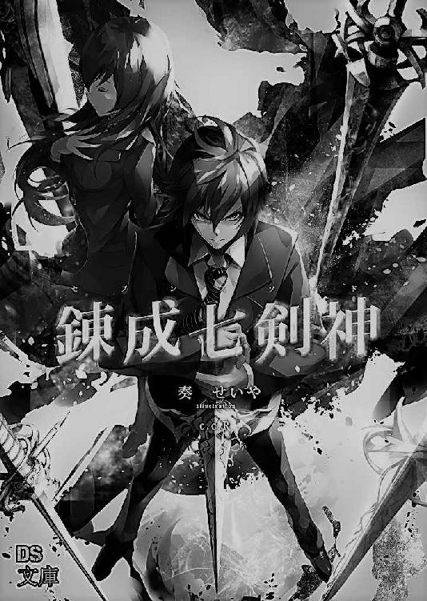
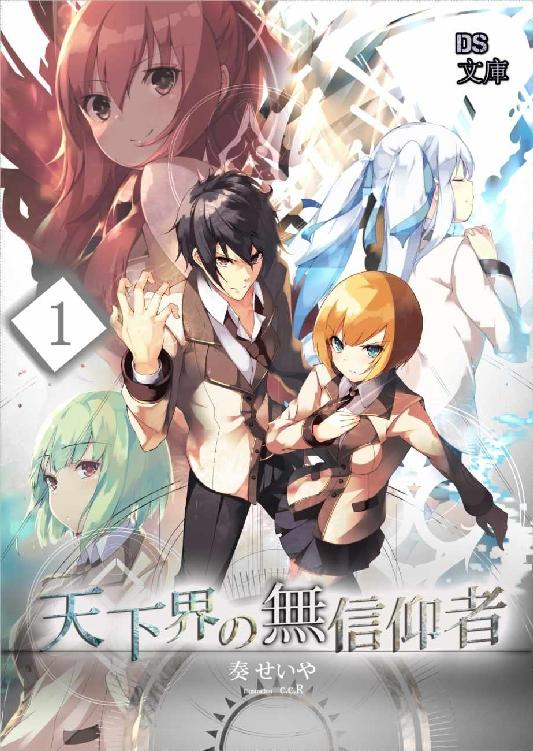
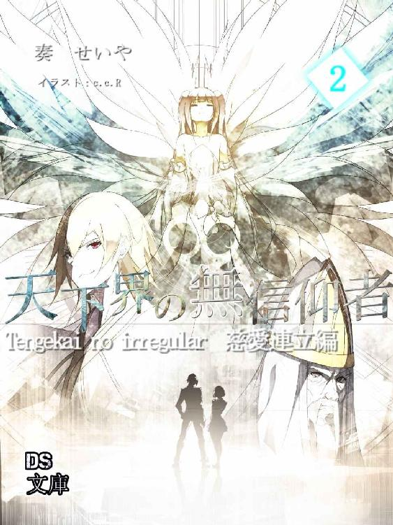
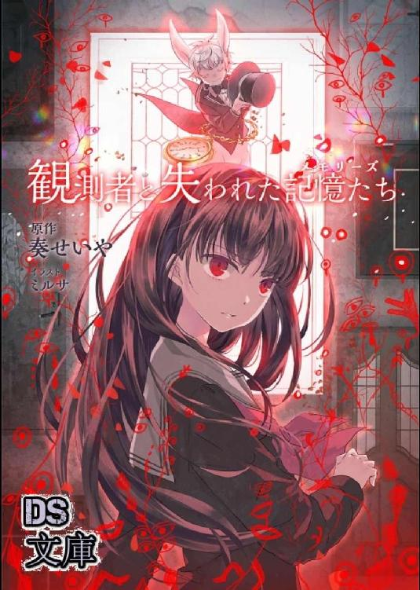

| 錬成七剣神（セブンスソード） | |
| 奏せいや | |
| (2018) | |

錬成七剣神
---------------------------------------------------------------------------------------------------------
奏 せいや

目次
プロローグ
------最強が必要だった。誰もが納得するような最強が。
少年は胸の内で渦巻く感情を必死に堪えていた。
夜の空に伸びる摩天楼の一角にある、大きなスクランブル交差点で少年は今一度剣を握りしめる。それは見る者を惹きつける黄金の剣だった。ただの飾りではない。スパーダと呼ばれるその剣は七つ作られた最強を形作るためのピースだ。
しかしそれを握る少年に歓喜はない。むしろ湧き上がる憤怒と増悪に今にも叫び出しそうだった。
なぜ、こんなことになったのか。どうして、こんな未来を回避できなかったのか。
その原因である自分に嫌悪して、その元凶である男に怒りを向けた。
「魔来名、なぜ香織さんを殺した！？」
少年は叫び、男をにらみ付けた。
少年の目の前には一人の青年がいる。白の外套を身に纏った美形の男だ。その手には刀が握られ、殺意すら放つ少年を冷酷な表情で見つめ返していた。
この街には少年と青年の二人しかいない。街は静まり返り、舞台装置として作られた己の役目を全うせんと二人を見守り続ける。
無言の街で、二人はにらみ合った。剣を握り、最後の一戦へと臨もうと。多くの仲間と敵はすでに消え、残された二人が生き残りをかけて戦う。
最強創造の儀式、錬成七剣神。
それは文字通り最強を作り出すための儀式だった。二人は選ばれた。けれどなぜ戦うかは自分で選べる。
この儀式が意味する世界の命運も、最強も、この一戦には関係ない。
二人はただ己の信念を貫くために剣を振ろうとしていた。
真に大切なのは絆か、それとも信念か。
この戦いで、すべてが決まる。
錬成七剣神。その終決と完成が、すぐそこまで差し迫っていた。
第一章 絶望の中、団結の時
朝の陽ざしが学校の廊下を満たしていた。時刻は九時に差し迫り生徒たちは教室に集まっている。物静かな廊下はホームルームの開始を感じさせるが、そこには女性の教師だけでなくもう一人の男子生徒が歩いていた。
「緊張してない？ みんないい子だし、すぐに友達もできるわ」
「は、はい、ありがとうございます」
教師からの気遣いに少年は固い声で答える。
剣島聖治。今日は彼の転校日だ。真新しい制服に身を包み表情は初めての転校というものに緊張している。聖治は遠くを見るような気持ちで天井を見上げてみた。
（転校、かあ）
自分の境遇にしみじみとした思いが沸いてくる。両親は二人とも海外出張で出ていってしまい、日本には自分だけが残った。これからどうなってしまうのか。今後のことを思うと気が重い。
「はあ」
聖治は憂鬱なまま廊下を歩いた。
すると教師が立ち止まった。見れば自分のクラスである二年四組の札がかかっている。ここだ。聖治の緊張が一層高まった。
「それじゃあここで少し待っててね。私が呼んだら教室に入ってきて。自己紹介してもらうから」
「は、はい」
そういうと先生は教室へと入っていった。言われたまま扉の前で待つ。緊張からか妙に心臓の動きがぎこちない。リズムが悪いというか一回の鼓動が大きいというか。聖治は不甲斐ない自分にまたもため息を吐いた。
そうしていると先生から転校生が来ることが伝えられたようでクラスから声があがった。
（変に期待されてないよな......？）
もう入る前からくたくただ。
「それじゃあ入って来て」
先生に呼ばれる。少しだけ躊躇う気持ちはあるが行かなばなるまい。ここで引き返してもどこに行けばいいというのか。聖治は固い動きで扉を開き教室へと一歩を踏み出した。みなからの視線を感じる。聖治はあまり見ないように視線を下げて黒板の前に立った。
顔を上げてみれば、クラスメイト全員が自分を見ている。
「............」
とても緊張する。
「彼が今日から新しくクラスメイトになる剣島聖治君よ。じゃあ自己紹介してもらえるかしら」
先生から促され聖治も心を決めた。不安な表情に気合いを入れて、これから一緒に過ごすクラスメイトたちへと声をかけた。
「はじめまして。剣島聖治です。よろしく。お願いします」
緊張を残しながら聖治はあいさつし小さく頭を下げる。聖治の自己紹介が終わったことにクラスメイトたちから拍手が送られてきた。当然の反応と言えば当然の反応だが、緊張していたわりには呆気ない。
（なんか、俺の気負いすぎだったな）
案外そういうものかもしれない。
その後は席に案内され、空いている席に座った。先生から他の伝達事項が告げられホームルームは終わりとなった。先生が出ていく。
（あ）
とたんに取り残された気分だ。周りに人はいるのに孤独感がすごい。これなら本当に一人きりの方が気が楽だ。
が、そんな不安に駆られているのは聖治だけで、クラスメイトたちは聖治の席に集まり気軽に声をかけてくれた。
「はじめまして。ねえねえ、前はどこに住んでたの？」「部活には所属してた？」「こんな時期に転校なんて珍しいね。なんか事情でもあったのかな？」「なあ、サッカー部入ろうぜサッカー部！」「そんなことより剣道部どう？ いま人いないんだよ、ここならすぐレギュラーだよ！？」
「ええ、......っと」
矢継ぎ早に聞かれる質問に聖治は戸惑ってしまう。
しかし嫌ではなかった。むしろ自分に関心を持って話しかけてくれるのをうれしく思う。戸惑っていた表情からも自然と笑みが漏れてきた。
「お〜いみんなぁ〜、まずは落ち着くんだなあ〜」
するとゆっくりとした声が聞こえてきた。見ると二人の男子が近づいて来る。
声を掛けてくれた男子は大きく背もそうだがお腹も大きかった。髪は黒くて短髪だ。表情はとても温厚そうで大きいわりには威圧感は全然なく、動物で例えるならパンダのようだ。
反対にもう一人の男子は小柄で髪は白い。表情はにやついているというか悪戯が好きそうな顔をしている。こっちは例えるならキツネだろうか。
そんな二人が近づいてきた。
「いきなりで大変だな転校生君。大丈夫かい？ でもまあ、これも転校生の恒例、ってことで我慢してくれ」
「みんなもぉ、せっかく来てくれたのに、困らせたらダメなんだなぁ〜」
「あ、ああ。ありがとう。君たちは？」
「なぁわりぃわりぃ。こっちもいきなり近づいて不審がらせたかな。俺は皆森星都。それでこっちのでかいのが------」
「織田力也だよぉ。よろしくね、聖治君」
「ああ、こちらこそよろしく」
聖治は身体の大きい方、織田から伸ばされた手を握り握手を交わした。
「皆森君も、よろしくな」
「ああ、いい、いい！ 星都って呼び捨てにしてくれ。それだけで親近感が上がるからな。君付けは心の距離が開けちまう」
「僕のことも、呼び捨てでいいからねぇ〜」
「分かった。なら改めて。よろしく、星都、力也」
「おう」
「よろしくぅ」
まだ転校初日なのに二人の友達ができた。気が早いかもしれないが、それでも、聖治は不思議と二人とは仲良くなれそうな気がしていた。
「おい皆森、織田。抜け駆けかー？」「独り占めはよくないぞ。あ、二人か」
「一斉に掛かるお前らが悪いんだよ。シッシッ、あっち行ってろ」
せっかく集まって来てくれたみんなを星都が払っている。
「星都、気持ちは嬉しいんだが、俺はみんなとも......」
そんな星都に聖治は遠慮しがちに言うのだが言い終わる前にみんなはいなくなっていた。
（ああ......）
寂しい。
「なあ剣島。いきなりなんだが、実はお前と話がしたいんだ。織田も含めた三人でさ。いいだろ？」
「話？」
一体なんだろうか。聖治は疑問に思うが頷いた。
三人だけで話をするため教室を出て行く。三人は廊下の突き当たりで立ち止まった。ここは理科室の前で隣接も準備室となっている。今はどこのクラスも利用していないのでここには三人しかいない。
それで聖治はなんの話だろうかと待つが星都はなかなか話さないでいた。
「それで星都、話というのはなんなんだ？」
いきなりできた友達に聖治の気持ちは軽い。さきほどまであった緊張が嘘のようだ。
「フゥー、悪い、もう無理だわ」
「............？」
だが、反対に星都の態度は変わっていった。
星都は聖治に背を向けため息を吐く。それだけでなく星都の空気がどんどん冷め切っていった。
「なあ、剣島。この高校に来て、どんな気持ちだ？」
星都は背を向けたまま話しかけてきた。両手は拳を作り震えている。声からは親しみはなくなり、むしろ敵意のようなものまで感じ始めていた。
「どうしたんだ星都？ 様子が------」
「答えろよ！」
「！？ な、なんだよいったい......」
突然の怒鳴り声に驚く。どういうことか分からない。
「せ、星都君〜、それは......。いきなりは失礼なんだなぁ」
「だけど力也！ こいつは、こいつは！」
星都が怒鳴ったことに力也が注意する。それでも星都の興奮は収まらなかった。星都は力也の服を掴み上げたのだ。
「お前だって分かるだろ力也！？ こいつは、俺たちの、『平和だった時間』をぶっ壊しに来たんだぞ！？」
「なんだって？」
聖治は一歩前に出る。星都がなにを言っているのかまるで分からない。
「待ってくれ、平和な時間を壊しに来た？ どういうことだ、本当に意味が分からない」
いきなりの豹変に本当になにがなんだか分からない。それで聖治は言うのだが星都は怒鳴り返すばかりだ。
「とぼけんな！ 分からないはずがないだろうがッ！」
「とぼけてなんてない。というよりも、さすがにこれ以上の悪い冗談はよしてくれ。笑えない冗談は好きじゃないんだ......」
なるべく自分を落ち着けて話しかけてみる。転校して友達が一人もいない状況で、聖治は本気で星都や力也と仲良くなりたいと思っていた。
「ねえ、星都君。もしかしてなんだけどぉ、彼、知らないんじゃないかなぁ」
「はあ？」
そこで力也が星都に声を掛け、それに驚いたように星都が声を上げた。
「知らない......？」
「うん。それに、聖治君は悪い人じゃないよぉ。きっと大丈夫ぅ。僕を信じて」
「............？」
二人の会話に聖治だけがついていけていない。
力也が聖治に歩いてくる。展開についていけていない聖治は唖然と力也を見つめた。
「ごめんね聖治君。でも心配ない。僕たち、友達ぃ。仲間！ ね？」
「あ、ああ......。そう言ってくれるなら嬉しいんだが」
（けっきょく、どういうことだ？）
一向に話が見えない。
聖治は俯いている星都に目を向けた。まずは話をしないことには始まらない。意を決めて質問してみた。
「なあ、星都......？」
「......ふ、ふふふ」
「ん？」
声を掛けると星都は何やら不気味な笑い声を漏らしている。そして、突如聖治の首に片腕を回してきた。
「なーんてな！ 驚いたか？ 悪い悪い、お前が結構イケメンだったもんでよ、俺の愛しの末川ちゃんを横取りされると早とちりしちまってさ！」
「え......？ なに！？」
わざわざここまで呼び出したのはそんな理由だった。
「どうだ、驚いたか？」
「まったく、当然だよ。ていうか、これからは勘弁してくれ。本当に驚いたよ」
肩の力が抜ける。いきなり睨まれて驚くなと言う方が無理というものだ。
「ごめんねぇ聖治君〜、星都は悪戯好きだからさ〜」
「いや、それにしてもだな」
「こういうのは初めの一発が肝心なんだよ」
見ると聖治から離れた星都がシャドウボクシングをしていた。その例えはよく分からない。
「でもあれだろ。これで一気に心の距離が縮まったろ？ これだけのことしたんだ、これからは遠慮なく言い合えるさ」
「それはまあ、そうかもしれないが」
かなり強引な気もするが聖治は星都の気持ちを受け取った。
「ま、そういうことさ。これが俺流の、転校生に対するよろしくお願いします、ていうわけさ。でもいきなり仕掛けて悪かったのは事実だし、不快に思ってるなら謝るよ」
「いいさ。意図は分かったんだ。そういうことなら。俺からも。これからよろしくな」
聖治は星都と力也と一緒に教室まで戻るために廊下を歩いて行く。すっかり打ち解けた聖治たちは仲良く並んでいた。
「それで、末川ちゃんには手を出すなよ？」
「そもそも誰だよ、末川ちゃんって」
星都からのからかいに聖治は苦笑した。
＊
転校初日からとんでもないハプニング、もしくはサプライズに遭った聖治だったが、そのおかげ星都と力也は友達になっていた。
そして時間は経ち今は昼休憩。クラスの皆は友達同士で席を合わせ弁当を取り出している。
聖治は星都たちに歩いていった。
「なあ星都、力也。よければ俺も一緒していいかな？」
聖治はお弁当を持って声をかける。食事を誘うことに普段なら緊張するだろうがこの二人には自然とできた。さきほどのサプライズのおかげだろうか。
「おう剣島。実は俺たちも今声を掛けに行こうとしていたんだよ。それでなんだけどな、俺たちはいつも屋上で食べてるんだ」
「へー、屋上か」
今日は天気もいい。屋上で食べるには絶好の日和だ。
「それで、実はもう一人と一緒なんだが、別にいいだろう？ 心配すんなって、俺から紹介してやるから」
「もう一人？ ここのクラスとは違う人なのか？」
「うん、三年生の先輩ぃ。でも、すごく優しい人だから、緊張しなくても大丈夫ぅ」
「上級生か......」
星都や力也はこう言うが、先輩と一緒に食事することに少しだけ緊張する。しかし二人がいるなら大丈夫だろうと聖治は頷いた。
「分かった。俺も屋上までついて行くよ」
聖治たちは屋上へと向かった。階段の突き当たりにある扉を開ける。瞬間、穏やかな風と頭上に広がる青空が迎えてくれた。屋上には柵が敷かれており、生徒の出入りは自由らしくベンチが数台設置されている。
その内の一台に一人の女性が本を読みながら座っていた。この屋上には聖治たちとその人しかいない。
「香織さーん！」
そこで星都が座っている女性に向けて声を掛けた。先輩とは彼女のことだろうか。てっきり男性だと思っていた聖治は意外そうに聞いてみる。
「もしかしてさっき言っていた先輩って、あの女性のことか？」
「うん、そうだよぉ」
三人は女性に近づいていく。どうやら星都の声には気づいておらず本を読んだままだ。
聖治は女性の近くに立つ。それで彼女を改めて見つめてみた。
（きれいな人だ）
彼女の黒い髪は背中まで伸びており風が吹く度さらさらと揺れている。体は細く、背は女性にしては若干高い。物静かな雰囲気は読書中ということもあるが、落ち着いた年上の女性という美しさがあった。
「香織さん、来ましたよ。本読むのそろそろお終いにしてもらえません？」
「あ、ごめんごめん。気が付かなかったよ」
ようやく気が付いたのか彼女は慌てて顔を上げた。声も僅かに跳ね上がって、そんな仕草一つとっても愛嬌がある。
「あ」
「え？」
そこで聖治と目が合った。初めて見る聖治に驚いたようで瞳が大きく見開かれている。無理もないなと聖治は胸の中で呟いた、その時だった。
「君は、もしかして......」
「え？」
会ったことでもあっただろうか。しかし聖治は振り返るが心当たりはなかった。
「香織さん、さっきの休み時間に説明したでしょう。この人は今日転校してきた小室輝也君だよ」
「違うぞ星都！」
隣にいる星都にツッコむ。初対面の人に性質の悪い冗談だ。すかさず聖治は先輩に振り向いた。
「あの、はじめまして。今日転校してきた剣島聖治です。断じて小室輝也ではないです。星都と力也はクラスメイトで、一緒に昼食を食べようと思ってここまで来ました。すみません急に、勝手にお邪魔してしまって」
「あ、ううん。そんなことないよ。私は佐城香織。君が来ることは前の休憩時間に皆森君から聞いてるから、そんなに気を遣わなくていいよ。よろしくね」
「はい。よろしくお願いします」
相手からしてみればいきなり知らない人が来たようなものだが先輩は嫌な顔一つせず、むしろ笑顔で迎えてくれた。それを嬉しく思うが、それよりも先輩の言葉にひっかかる。
聖治は隣にいる星都を見つめた。
「お前、意外と良い奴だったんだな......」
「意外ってなんだよこら！」
「いや、なんでもないさ」
まさか人を小馬鹿にするのが生き甲斐みたいなこの男がここまでしてくれるとは。聖治は言葉にはしなかったが嬉しかった。口元が上がってしまう。
「まぁ、星都君は普段が普段だから、仕方がないんだなぁ」
「皆森君も、これからは日頃の行いを改めるんだね」
「なんだよ二人とも！ 友達だと思ってたのにい！」
「それとこれは話が別なんだなぁ」
みんなからの言葉に星都がいじけている。そんな様子を聖治は小さく笑いながら声をかけた。
「すまないな星都。まさかそこまで俺のことを考えてくれていたなんて思わなくてさ。ありがとな」
「ふん、当たり前だ」
星都は拗ねた表情はそのままだが、それでも多少は気を良くしてくれたのか目つきは柔らかくなっていた。
「そういえばさっき。佐城先輩、俺を見たときなにか言いたそうでは？」
「香織でいいよ。先輩って言っても、私先輩らしいこと一つもないし」
そう言って佐城先輩、もとい香織さんは謙虚に笑う。そんな一つ一つが可愛らしい。
「あれは、ごめんね。私の勘違い。『君とどことなく似ている人』を知っていて、思わず口に出ちゃった」
今度は照れ隠しで笑っている。黙れば美人で笑うと可愛い。こういう人もいるんだなと聖治は無言の内で感心していた。
「なあなあ、せっかく皆集まったんだし、さっそくメシにしないか？ 俺はさっきから腹が減ってるんだが？」
「そうだな。始めようか」
「うん、僕もお腹ぺこぺこ〜」
「もう、織田君は相変わらずなんだから。聖治君はお弁当持ってきたの？ もしないなら私の分けてあげようか？」
「ありがとうございます。自分の分はちゃんとありますから」
ベンチの近くに聖治は座り、右に星都、左に力也は腰を下ろした。香織さんはベンチに座りながら弁当を広げている。
聖治が転校してから初めての昼食、それはこの三人で、ここ屋上で行われた。
みんな優しく声を掛けてくれる。それに聖治も安心して会話していた。会ったのが初めてとは思えない気さくな雰囲気で聖治たちは談笑を交わし、聖治はここに転校してきてよかったと心の底から思っていた。
「なあ、星都と力也は香織さんとどんな関係なんだ？ 部活が一緒なのか？」
なかなか上級生と食事をする機会というのはないだろう。それで聞いてみたが、それには香織さんが答えてくれた
「えっとね。部活ってわけじゃないんだけど、昔からの知り合いかな」
「なるほど」
聖治は頷いた。
「なあ剣島。そういうやお前はどこに住んでるんだ？ やっぱり中心部か？」
するとごはんをむしゃむしゃ食べている星都から質問が飛んでくる。ここ水門市は山と海に挟まれた街で、水産や林業を主に行ってきた。しかし時代からか今では昔ほどの盛んさはなくなり、現代ではそのぶん自然の多さを観光として町興しに奮起していた。街の中心部は発展して近代的なビルが立ち並んでいる。元々辺鄙な田舎町だった水門市に越して来るのなら、中心部だと予想したらしい。
「いや、実はここの学生寮なんだ」
しかしその予想を裏切り、聖治は水門市に引っ越してきたのはつい先日のことで学生寮での一人暮らしだった。
「学生寮？ そうかそうか、なるほどな」
すると星都は納得して顔を何度も縦に振る。何がそれほどまでに納得させたのかはよく分からないが、星都は得心したようだ。
しかし------
その際、星都の目が悲しそうに細められた。
それは一瞬のことですぐに元の表情に戻っていた。
「そうなのか。いやな、ここにいる全員が寮暮らしなんだよ」
「そうなのか？ すごい偶然だな！」
寮に暮らしている生徒の数は多くないはず。それがこうして集まった四人全員が寮暮らしというのはなかなかの確率だ。
「だろう？ そうだ！ せっかくなら今日は皆で剣島の部屋に遊びに行くってのはどうだ？」
「え？」
そこで星都が楽しそうに声を上げる。しかしいきなり過ぎる提案に聖治は困ってしまう。というのも部屋は引っ越しの片付けが済んでいない。
「いや、それは」
「なんだいやなのか？」
「いやではないが、まだ荷物が片付いていないんだ」
「大丈夫大丈夫、気にすんなって」
「俺が気にするんだが......」
聖治は困った表情を浮かべるのだが星都の勢いはノリノリだ。
「まあまあ、落ち着いて」
そんな二人の間に香織さんが笑顔で入ってきた。
「皆森君も、いきなりじゃ聖治君が驚くのは当たり前だよ。ただ、確かに突然で申し訳ないんだけど、出来れば受けてくれないかな、聖治君。私からもお願い」
「香織さんも？」
香織さんはうんと頷く。
「僕も、聖治君の部屋に遊びに行きたいんだなぁ」
「力也もか」
どうやら星都だけでなく二人もその気だ。それで星都が首に腕を回してくる。
「いいだろう？ これが『高校生活最後の思い出』だと思ってさ、パーとやろうぜ？」
白い歯を見せつける人懐っこい笑顔が初夏の日差しに映える。聖治は「うーん......」と考えるフリをした後頷いた。考えるフリをしたのはいわば照れ隠しで、本当は答えはすでに決まっていたのだ。
「そうだな。こうして昼食にお呼ばれしてもらって、いろいろ気を遣ってくれて。みんなは転校先でできた初めての友達だ。部屋はまだ汚いが、それでいいなら俺も大歓迎さ」
「そうこなくっちゃ！」
聖治の返事に星都が盛大に声を上げ喜んでいた。そんな星都を、聖治もまんざらでもない目で見つめる。
「しかし、香織さんはどうするんだ。当然だけど男子寮に女性は入れない」
「そこは大丈夫。こっそり入ればバレはしないって」
「お前はなぁ......」
星都は悪い顔で断言する。それでいいわけがないだろうと聖治は香織さんを見るが、彼女は彼女で無言のままニコニコしていた。意外にも大胆というかまんざらではなさそうだ。
「それじゃあ、今日の放課後は剣島の部屋でお祝いパーティーだな。歓迎してやるから覚悟しとけよ？」
「なぜ歓迎されるのに覚悟が必要なんだ......」
「楽しみだなぁ。きっと盛り上がるんだなぁ」
「うん、私も楽しみかな。あんまり無茶は出来ないけどね」
「ははは......。そうだな。ありがとうみんな。よし、今日はそれで決まりだな」
成り行きとはいえ聖治は楽しみだった。新しい学校、新しい暮らし。そして新しい友達。順調すぎるほど、その第一歩は明るく楽しいものだった。これからの時間に期待で心が踊り出す。
しかし、だからかもしれない。ふとさきほどの言葉を思い出し、聖治は表情が少し曇る。
『いいだろう？ これが『高校生活最後の思い出』だと思ってさ、パーとやろうぜ？』
これから先も続いていくだろう楽しい高校生活を、たとえ冗談でも、『最後』なんて言って欲しくなかったから。
＊
今日の学校の日程は終了し聖治たちは正門前で香織さんが来るのを待っていた。しばらくすると小走りで香織さんが近づいてくる。
「ごめんね、待ったかな？」
「遅いですよ香織さん。俺は止めたんですけど、剣島の奴が置いて行こうて言い出して」
「違うぞ星都ぉおおお！」
「はいはい。三人共待っててくれてありがとうね」
「それじゃあさっそく行くんだなぁ」
「待てよ力也〜、手ぶらじゃ寂しいだろ？ 近くにコンビニがあるんだし、せっかくならなんか買って行こうぜ？ 剣島もそれでいいだろ？」
「それはいいな。あいにく冷蔵庫は空っぽだし、飲み物もついでに買って行くか」
こういうのには気が利く星都に賛同してまずは近くにあるというコンビニまで行くことになった。
正門から住宅街の道を五分ほど歩く。車道に面したコンビニには大きな駐車場があって、店内は学校帰りの生徒たちで賑わっているようだ。
星都たちも店に入り買い物をする。どれがいいか聖治と香織さんが話し合っている横で、カゴ持ちの力也とそのカゴに押し詰めるようにお菓子を入れる星都が騒々しかったが、そのはっちゃけた様子も自分の歓迎会のためだと思うと聖治は頬が緩んだ。
それらをレジに持って行き、会計を済ませて聖治たちは外に出た。
「さて、買うもん買ったし、これでレッツパーティイだな。菓子もこれだけあれば十分だろう」
「星都、俺は多過ぎだと思う」
「多過ぎだよぉ〜」
「これは多過ぎだよね......」
陽気に声を躍らす星都だが全員で反論する。聖治と星都は両手に袋一杯のお菓子とジュースを持ち、力也なんて四袋だ。コンビニの在庫を空にする勢いで、会計時は先輩としてのプライドか香織さんが全額を支払うと言い出しレジへと立ったのだが、「これも一緒で」と言いながら星都によって新たなお菓子が加えられ、レジで増えていく数字をそわそわしながら見つめていた。その後表示された全額を見つめた後、数秒の沈黙を置いてから涙目でこちらに振り返った姿は可哀想だった。
そんな星都だが悪気はないらしく、本人はいたって楽しそうだ。
「まあそう言うなよ、景気付けには良かったろ？ 派手にパーッといこうじゃん。めでたいめでたい歓迎会だぜ？ 俺としても派手にもてなしたいと思っているんだよぉー」
「そう言われると弱いところがあるな。だが、それは本意か？」
「当然だ！」
「嘘だな」
「嘘なんだぁ〜」
「私も嘘だと思う」
「三人共友達だと思っていたのにぃい！」
悔しがる星都を見つめ聖治たちの笑い声が上がる。なんだかんだ皆も楽しんでいる証拠だ。まるで今から修学旅行にでも行くような、そんな気持ちだったのだ。
聖治たちはコンビニでお菓子を買って帰ると一旦学校へと向かい歩き出す。住宅街にあたるこの場所では一軒家が並び、この時間帯だからか物静かだ。皆との会話から少し意識を外して空を見上げてみれば、空もさきほどより赤色を増し日が暮れていく。街の静けさと夕暮れのノスタルジックな空気からか、聖治は多少目を細め、この景色と雰囲気を味わうように眺めていた。
これからはじめてできた友達と歓迎会をすること。それを嬉しく思い、聖治は噛み締める。
そして目線を元に戻した時だった。
「ん？ どうしたんだ皆？」
いつの間にか先頭を歩いていた聖治は後ろを振り返る。三人はなぜか立ち止まっていた。だが、どうかしたのか聞こうとした時、聖治は気が付いた。
三人共、表情が固まっているのだ。まるで死体でも見つけたように怯えている。
聖治はゆっくりと振り返る。知らず聖治も緊張していた。背後になにかいる。それを感じるのだ。
そこには、一人の怪しい人物が立っていた。
「誰だ？」
もうすぐ夏本番になる七月に全身を覆う黒の外套を纏い、顔はフードを目深に被っている。見えるのは口元と蝋燭のように白い前髪だけだった。背は百八十五センチほどあり、格闘家のように体格がしっかりしている。
そこで、目の前に立つ人物が口を開いた。
「ハッ、なんだなんだぁ？ ずいぶん仲が良いみたいじゃねえか。笑い声上げて一緒に下校なんてしちまって、まるでそこいらにいる『普通の学生』みたいじゃねえか」
（......？）
男の言っていることが分からず聖治の眉が曲がる。ただ、この男から危険な雰囲気を感じる。今も槍のような殺気を感じていた。
「そんなおままごとしている場合じゃねえだろうが。それともあれか？ 陽気な仲良しごっこはブラフで、とりあえずはそこの新入りから消そうって腹だったか？ なら悪かったわ。早とちりしちまった。管理人の俺の出番じゃねえ。心置きなく殺してくれ」
「なにッ？」
眉だけではない、聖治は表情を歪ませた。
「殺す？」
殺してくてなんて言われ平気でいられるはずがない。聖治は男を睨みつけた。
「おい、お前はさっきからなにを言っているんだ」
彼らはまだ会って間もないが聖治にとっては大切な友達だ。それを馬鹿にされているようで怒りが湧いてくる。
「ん？ ああ、分からないか。なら教えてやるよ。端的にだ。お前、後ろの三人に殺されるぞ？」
「殺される？ フッ、馬鹿馬鹿しい」
聖治は鼻で笑った。友人であるこの三人に殺される道理がない。
「お前が誰だか知らないが教えてやる。なにがあっても俺たちが殺し合いなんて馬鹿げたことはしない。そうだろうみんな？」
聖治はみなへと振り向いた。いきなり殺し合いなどめちゃくちゃだ。冗談が下手というレベルじゃない。
しかし、なかなか答えは返ってこなかった。
「............」
「......皆？」
聖治は聞き返した、すぐに「そうだ」と声が返ってくると思っていたのに戸惑ってしまう。
「みんな、どうしてなにも言ってくれないんだ？」
もう一度聞くが三人は答えてくれない。俯いて黙ったままだ。
「ハッハッハッハッ！」
それで謎の男が笑い出した。
「残念だったな少年。だが、言っておくがもう長くは待っていられないんだ。お前らが始めないというなら、こちらから強制的に行うしかなくなるんだよ。しかしそれじゃ趣旨からズレる。出来れば自主的に、積極的に行われるのが理想的。そういう訳で、やるならさっさと殺ってくれ」
謎の男が命令を下すように三人に声を掛ける。
「なあみんな、嘘だろ？ なあ！？」
さっきまで笑い合っていた友達、楽しかった時間が黒ずんでいく。信じていた絆に、不安が広がっていく。
「......しないよ」
「え？」
その時、小さかったけれど、確かに声が聞こえた。
「私は、殺し合いなんかしない。したくなんかない」
「香織さん」
それは香織さんの声だった。その目は真っ直ぐと謎の男に向けられており、力強い眼差しで反抗の意思を伝えていた。
「うん、僕もだなぁ」
「力也......！」
そこで力也も声を上げてくれた。この男が怖いのか、この中で一番の巨体が小刻みに震えている。けれど、反対の言葉を言ってくれた。
「そうか。なら残念だがお前らは不良品だ。無資格者としてここで消えてもらおうか」
すると謎の男は右腕をおもむろに持ち上げた。直後異変が起こる。アスファルトの地面がまるで水面のように波立つと、そこから槍が飛び出した。長槍は二メートルを優に超え、先端には鋭利な刃が夕日を受けて茜色に輝いている。
「なんだ！？ どうなってるんだ！？」
いきなり槍が現れた。空間から槍が出てきたのを実際に目で見たのに信じられない。
それを謎の男はさも当然という態度で握り締めている。
「戦う意志のない者に、用はねえ」
謎の男は槍を力也に向ける。口元を歪め、殺意すらおもちゃのように放ち、男は力也に槍を投げたのだ。
「力也ぁー！」
聖治は叫ぶ。危機感が一気に頭を駆け抜けた。このままでは力也が刺されてしまう！
だが、聖治が振り返ったその先。そこにはさらなる驚愕が起きていた。
「おい」
『剣』を握った星都によって、斬り落とされていたのだ。
「なに人のダチに、手をだしてんだテメエ！」
力也の前には星都が立っていた。光輝く細い剣を手にして。それで防いだのか投げられた槍は地面に転がっていた。
星都が男を睨み上げる。大きく見開かれた目が真っ直ぐに向けられ、激情した表情は歪んでいる。
星都が助けてくれた。そのことに聖治はホッとする。だが新たな出来事に混乱してしまう。
「星都、お前......」
聖治が見つめるもの、それは星都の持っている剣だった。レイピアと呼ばれるタイプの刀剣だろうか。全体的に細い形状をしていて刀身も細長い。何故そんなものを星都が持っているのか、どこから取り出したのか分からない。
さらに不思議なのは刀身の輪郭がぼやけていることだ。刀身は蛍光灯のように淡い輝きを放っており、姿をぼやかしている。
「ほう、やれば出来るじゃねえか。だがぁ、何故切っ先が俺を向いてるんだ？ てめえらが斬る相手は隣だろう？」
「俺だって、俺だってなぁ！ 友達を斬りたくなんかないんだよ！」
星都が謎の男に向かって吠える。
「僕も、手伝うんだなぁ！」
そこへ力也も前に出る。その表情はまだ恐怖が浮かんでいたが、星都の行動から勇気を貰ったようにその瞳は力強い。そして右手を前に翳した。
「現れるんだぁ、鉄塊王・撃鉄っっ！」
力也の右手が虚空に向けられる。すると力也の呼び声に応じるかのように一瞬空間が発光し、そこから大剣があらわれ地面に突き刺さった。力也は上に向いている柄を両手で握り引き抜くとそのまま構えた。
その大剣は、剣と称するのを躊躇うほど大きかった。刃渡りだけでも二メートルは超えている。厚さは国語辞典のようだ。とても人間が持てる重量ではないが、しかし力也は苦も無く大剣を持ち上げていた。
「これは、いったいなんなんだ......」
聖治は唖然と二人と謎の男を見つめる。
さっきまで一緒に笑い合っていた。これからのことに期待して楽しい雰囲気に包まれていた。
しかし、こんなのは普通じゃない。
槍を取り出す謎の男に、普通の友達だと思っていた二人は剣を握り構えているのだ。
「光帝剣エンデュラス。鉄塊王撃鉄、ねぇ......」
二人は武器を持って対峙している。だというのに謎の男は飄々としたままだった。投げた槍は地面に置かれたままなのでなにも持っていない。構えを取ることもなく男は遊びのように立っていた。
「いい剣だ。だが使い手がなぁ......。まあいい。ようやく始まったんだ。一人二人ならともかく、俺が皆殺しにしてお終いじゃそもそも意味がねえ。ケツだけ蹴っておくか」
愚痴るように言い捨てると謎の男は二人に向かって歩き出した。男が動き出したことに二人とも警戒を強める。剣を握る手に力が一層込められるのが見て分かった。
「こい。魔卿騎士団の力を教えてやる」
そんな二人とは対照的に謎の男は余裕だ。危険なオーラがを放ちながら武器を持たず強気に歩いてくる。
男がまた一歩を踏み出す。それで星都と力也が駆け出した。剣を持ち上げ斬りかかる。
二人が近づくが謎の男は動かない。そのまま二つの剣が振り下ろされた。
その寸前。男の正面の空間二か所が歪曲すると、槍の集団が横向きに出現した。槍の束は星都と力也の攻撃を受け止める。剣戟の轟音が辺りに響き渡った。
攻撃が防がれたことにより二人は一旦距離を開けた。表情は苦々しかったが、まだ諦めてはいない。
「星都！ 力也ぁー！」
聖治は未だに混乱していた。しかし事実として二人は戦っている。
なら、自分もなにかしなければならない。それで聖治はなにができるか考えた。
「香織さん！」
自分と同じく二人を見守っている香織さんをせめて守らなければ。聖治は香織さんの元まで駆け寄った。
「香織さん、大丈夫ですか！？」
「う、うん。私はね......」
香織さんの表情はとても心配そうだった。当然だ。香織さんの視線は二人を見つめており聖治も二人を見つめた。星都と力也の背中を祈る気持ちで見守る。
距離を空けた二人だが、またしても男が進撃してきた。空間に突如現れた二つの槍の群。そこから一つを手に取り二人に向かい駆けた。楽しそうに口元を三日月のように曲げ笑い声を漏らしている。
「ハァッ！」
短く切られた掛け声と共に男の刺突が星都を襲う。この男の言動は野蛮ではあるものの、力量は間違いなく達人の域だ。その道を極めた者が放つ槍の一突きは常人では見ることも出来ない。
死ぬ。普通なら。だが、
「うをおおお！」
そこで起こったのは星都の反撃だった。星都が握る剣が達人の槍を弾く。それも一度だけじゃない。続いて放たれる男の刺突を、次々に払っていくのだ。
「すごい！」
聖治は駄目かと思った。しかし星都はまだ生きている。それを嬉しく思うが同時に驚いた。
本来刺突という無駄のない最短最速の攻撃を払い続けるのは剣の達人でも容易ではない。槍に剣で勝つには相手の三倍の段位が必要と例えられるほどだ。今も攻撃を凌いでいる星都ではあるが、ただでさえ達人級の謎の男よりも三倍も優れているわけではない。ではなぜ星都は生きているのか。
「なんて」
聖治は呟く。
それは、星都が振るう剣速だ。
速い。聖治の目には剣の残像が五つも見えていた。ぼやけた刀身という不可思議な特性もあるが、星都と謎の男、両者の空間を光の軌跡が埋め尽くしていく。二つの武器がぶつかり合う音は爆竹のようだ。
予想外の奮闘だった。実際目にしていてもまだ信じられない。まるで夢でも見ているかのように、聖治の胸は震えて止まらなかった。
しかし、ここで男が笑う。
「ハハァ！ これで終わりだ！」
その言葉の次の一撃。謎の男からの攻撃が星都に放たれた。
星都は光る刀身で男の攻撃を受けた。その瞬間、まるでガラスが盛大に割れるような音を響かせながら、星都の持つ刀身が砕け散った。
「そんな！？」
その光景に聖治は堪らず叫ぶ。
「ちっ！」
「脆いんだよ！」
星都も表情を歪めた。
両者の間で四散した刀身の欠片が舞い落ちる。星都にはもう防ぐ術がない。そこへ謎の男も槍を打つ体勢になる。
「止めぇろぉ！」
その攻撃を止めたのは力也だった。頭上で大剣を一回転させながら斬り込んでいく。星都と謎の男が繰り広げていた銃撃戦にも等しい攻防から一転、追い込まれた星都を救う一撃だ。
だが、そこで槍の集団が動き出した。浮遊していた槍がそれぞれ重なって、十本総出で力也の攻撃を防いできた。力也の放った爆撃にも似た攻撃は槍の六本を一太刀で叩き折ったが、七本目で大剣は止められてしまった。
「くううぅ！」
「六本か。なかなかだがまだ甘いなあ」
謎の男は槍を横薙ぎして力也の胴体を叩いた。直撃を受けたことにより力也は地面を転がっていく。すぐさま謎の男は星都に向き直り前蹴りで吹き飛ばした。
二人が地面に倒れる。体中をアスファルトに叩き付け表情は痛そうに歪んでいた。
だが二人は諦めず、起き上がるために地面に手を付いた。
「おっとそこまでだ」
だが、謎の男は許さなかった。浮遊させている槍を動かし、刃先を星都と力也の首元に突き立てたのだ。
「星都！ 力也ぁ！ 止めろ、二人をどうするつもりだ！」
「止めて！ 二人を殺さないで！」
危機迫る状況に聖治と香織さんが叫ぶ。
「なーに、安心しな。今はまだ殺さねえよ。だが、分かっただろう？ これが俺とお前たちの差だ。俺たちはその気になればいつでもお前らを殺せる。この意味が分かるな？」
「っく！」
謎の男の愉悦すら感じさせる物言いに星都が悔しそうに声を漏らす。力也も目を伏せて悔しがっていた。
それは聖治も同じだった。
悔しい。拳は力強く握られ痛いほどだ。だが、それは謎の男に負けたことだけじゃない。
星都も力也も戦った。剣を持ち立派に戦ったのに、自分は見ているだけだった。それが悔しい。友達を守ることも共に戦うことも出来ず。
------力が欲しい。
------自分にも戦える力が。
聖治は悔しさに心の底からそう思った。
「結果は見ての通りだ。お前たちでは勝てない。だから------」
そんな聖治を気にすることなく、謎の男は言ってきた。
それは、最悪の儀式の始まりだった。
「殺し合え。これはバトルロイヤルだ。最強となるべく他者を食らえ。最後まで生き残って勝者になるがいい。ついに全員が出揃った。ならばあとは始めるのみ」
それは最恐最悪の儀式。幸せな日常を破壊する殺人の宴。
その名も------
「この時より、錬成七剣神の開幕だ」
錬成七剣神が始まった。
＊
住宅街の一角、高校と目と鼻の先に学生寮はある。外装は白く四階建てのアパートだ。そこにワンルームの部屋が階につき五つ並びそれぞれに学生が入寮している。
そのはずだった。今夜を迎えるまで聖治はそう思っていた。
聖治の部屋は二階にあり、そこには聖治とみんなもいた。力也と香織さんはテーブルを挟むように座り込み、星都はベッドに腰掛け、聖治は勉強机の椅子に座っている。
時刻はもう夜であり、ベランダに続くガラス扉からは夜の暗闇と街灯の明かりが見て取れる。部屋は電気が点いているものの雰囲気は重い。皆が口を固く閉じ目を伏せている。語ることすらいけないことのように、この沈黙が暗黙の了解となりつつあった。
だが、聞かなくてはならない。
聖治は意を決めた。
「教えてくれ。あれはいったいなんなんだ？」
聖治が言葉を発したことにより三人が顔を上げる。その視線を受け止めて、聖治は更に続けた。
「俺たちの前に現れた謎の男。何故俺たちが襲われなければならない？ それに空間からは槍を取り出した。どう考えても普通じゃない。それに......」
そこで言葉を一旦止めた。これを言ってしまっていいのかどうか考えるが、それでも言わなくては駄目だと思い切って言うことにした。
「星都も力也も、あれはいったいなんなんだ？ どうしてあんなことが出来るのか教えてくれ。二人も、あの男と同じなのか？」
聞かずにはいられない。正体不明の謎の男と、三人が知り合いなのは確実で、二人に至ってはあの男と同じように剣を取り出したのだ。
「まあな」
「......そうだったのか」
本人の口から聞かされ落胆した気持ちになる。初めてできた友達が、自分たちを殺そうとしてきた男と同じことにショックを隠し切れない。
「星都君〜」
力也が寂しそうな表情で星都を見上げるが、星都は首を振った。
「いいって力也。正確じゃないが、似たようなものなんだ。それにどう説明したって結果は同じだろ？」
「星都、説明してくれ。俺は二人を信じたい。あんな男と一緒じゃないと。でも、今の俺は正直混乱している。もしかしたらと、どうしても不安になってしまうんだ。だから教えてくれ、二人を信じたいんだ！」
聖治は自分なりの誠意で二人に質問した。正直怖い。それでも友人の二人を信じて、聖治は聞いた。
だが星都も力也も俯いたままだった。それは黙秘とかではなく、答えるのにまだ心の準備ができていない、そんな沈黙だった。
「......魔卿騎士団」
「え？」
僅かな間でさえ重苦しい時間の中で、沈黙を破ったのは香織さんだった。両手を力強く握り合わせ、視線をそこに向けている。真剣な表情でこれから話す内容の深刻さをこの時から物語っていた。
「まずは、理解するための下地として、いろいろ説明しなければならないことがあるの。だから、最初にそれを聞いて欲しい」
言葉一つ一つに重さを置いて彼女は語る。聖治は口を挟むことなく、無言で頷いた。
「この世界にはね、いきなりだけど、魔法があるの」
「............」
香織さんが発した言葉は、まるで子供の絵本から引いてきたようなものだった。けれど聖治はそれを受け入れた。彼女の雰囲気は真剣だったし、なにより聖治は見てしまった。空間からいくつもの槍が出現する場面を。それを今更否定しようとは思わない。
「それで、魔術とも言われるこの力、その世界にはいくつかの組織があるんだけど、その一つに強大な魔術組織が存在するの。名前を魔術結社ゼクシズ。魔術界で最大の戦力を持つとされている組織で、この世界全体をすら左右するとも言われている。けれど、ゼクシズの構成員はたったの三人」
「三人？」
聖治は堪らず聞き返してしまう。黙って聞いていようと思っていたのだが、疑問につい口が滑ってしまった。しかし、それだけに腑に落ちない話だ。世界を左右するほどの組織の存在を認めろという話すら現実離れしているのに、その組織が、たったの三人のはずがない。それはたった三人で国をすら動かすことも同然だからだ。
「実質的には違うんだけどね。その三人それぞれが、多大な規模の勢力を持つリーダーなの。一つの勢力だけでも、その規模は大国に匹敵するとか。だから彼らの衝突は避けなくちゃならない。ゼクシズはいわば実態の伴わない不戦協定だけが目的の魔術結社。ゼクシズそのものが何かを起こすことはないわ」
それぞれが多大な規模を持つ勢力のリーダー。それならば名前があるのは三人だが、その背後には数えきれないほどの人数がいることになる。
「それで、その一人が天上の魔術師と呼ばれるアンデルセン。もう一人が悪魔召喚士の首領、魔帝ソロモン。最後の一人が、魔卿騎士団団長、かつて剣聖と謳われた、グレゴリウス」
「グレゴリウス......」
聖治は呟いた。それが魔卿騎士団と言われる組織のトップ。聖治たちを襲ってきた謎の男も魔卿騎士団と名乗っていた。ならば自分たちと関係が深いのはそのグレゴリウスだ。
「魔卿騎士団とは、古くから武術と魔術を組み合わせて戦闘に特化させ、それによって勢力を拡大してきた組織なの。魔術が存在する以前の武術組や、新規に魔術を修めようとする人たちを取り込んでね。それでかつては栄華を誇った魔卿騎士団だったんだけれど、実は団長であるグレゴリウスは、百年も前に戦いに敗れて死んでいるの」
「え？ でも、さっきほどゼクシズの構成員だと」
「亡霊なの。肉体は滅んだけれど、零体として未だに現世に残り続けている。そのためゼクシズに名前は残っているの。でも、敗北した団長、加えて亡霊でしかない彼にはかつての威光はなくなり、求心力は著しく低下した。魔卿騎士団は廃れ、今ではゼクシズでもその立場が危うくなっている」
彼女の話では魔卿騎士団とは力の向上、いわば強さを求める組織のようなものだ。その団長が敗北しているとなれば、人が離れていくのは当然の成り行きだ。
「だが、それならなぜ仲間の内から新しく団長を選任しないんだ？」
「いないの。グレゴリウスに並ぶ実力者が。亡霊になって生前よりも力は落ちてはいるらしいんだけれど、それでも見合う相手がいない。亡霊にも勝てない魔卿騎士団というレッテルは、衰退に拍車をかけたわ」
香織さんの説明に聖治は無言の内で納得していた。魔卿騎士団から教えをもらっても、結局は亡霊となり弱体化した人物にも勝てないのかと失望した人から抜けて行ったのだ。
「このままでは魔卿騎士団はゼクシズから外され、不戦協定としての抑止力は無くなってしまう。そうなればアンデルセンとソロモンとの抗争に発展しかねない。世界中で、戦争になるかもしれないの」
「戦争だって？」
香織さんの口調に僅かながら熱が籠る。特に、戦争と言う単語が力強く伝わった。それは言外に最大級の危険が迫っていると、そう告げていた。
「魔卿騎士団には一刻も早く新たな団長、復興を起こすほどのカリスマが必要なの。だけど現状ではおらず、苦悩の末に辿り着いた答えが、いないのならば作ればいいという、至極単純なものだった」
そこで、香織さんは気迫の入った表情から辛そうに目を細めた。意気は沈み、頭はさらに項垂れた。
その様子から聖治は察した。何故彼女が悲しそうにしているのか、星都や力也が剣を出現出来たのか。それらがパズルのように合わさって答えを出した。
「それが、星都や力也、香織さん。三人が新たな団長となるべく作られた存在だって言うのか？」
「君もだよ、聖治君......」
「俺も......？」
そう、槍を使う男は聖治を新入りと呼んでいた。聖治も皆と同じ団長候補の一人なのだ。
「しかしどうやって？ 魔術なんてもの今知ったばかりの俺が、そんな組織の団長なんてなれるはずがない」
「確かに、私たちは弱いわ。夕方襲撃を受けて負けたように。でもね、それは私たちが完成していないからなの」
「完成？」
聖治は聞き返す。
それで香織さんは答える。それは槍よりもするどい衝撃だった。
「私は、私たちは作られた、って言ったよね。私たちはね、新たな団長となるべく作られた人造人間、ホムンクルスなの」
「------------」
その一言に、聖治は一瞬絶句した。
「ま、待ってくれ！ 本気で言っているのか！？」
背後から鈍器で頭を殴られたようだった。それほどの衝撃、聖治は立ち上がった。
「俺たちが、ここにいる皆が本当の人間じゃないだと！？」
「落ち着いて、戸惑うのは分かる。でも、私たちが今考えなければいけないのはそこじゃないの！」
正論だ。この状況では自分たちが何者かよりも、これからどうするかの方が重要だ。聖治は他の二人を見るがすでに受け入れているのか、星都や力也も静かに座り込んでいる。冷静な二人を見て聖治の心も落ちついていく。
「......大丈夫、かな？」
「......すみません、続けてください」
聖治は続きを求めた。足が地面についていないような不安が残るがここは無視するしかない。それよりもこれからだ。
「魔卿騎士団はね、私たちホムンクルスを作った。数は七人。私たちには各々一つの剣が宿っていて、スパーダと呼ぶの。そして、私たちのことも。スパーダは自分自身と言ってもいい。スパーダにはその剣独自の特徴があって、同じものは一つもないわ」
「それが星都や力也が取り出した剣のことか」
そう言うと星都と力也が軽く頷き実際に見せてくれた。星都は刀身が淡く輝く細長い剣を。力也は大剣を。二人とも手品のように剣を出す。
「俺のスパーダがこれさ。名を光帝剣エンデュラス。全体的に細くて重さは軽い。また刀身は光子を魔力で編んで出来ている。剣にはそれぞれ属性が設けてあって、これは時間。この剣の持ち主は本人以上の速さでこれを扱える。ただ、刀身が極端に脆いのが短所だけどな」
星都は苦笑気味に話すが内容は十分素晴らしいものだった。光帝剣エンデュラス。本人以上の速度が出せるこの剣で、星都は謎の男の刺突を防ぎ続けることが出来た。星都が生きているのはこの剣のおかげだと言っていい。
「僕のが鉄塊王、撃鉄ぅ。属性は質量。見た目は大きいし実際にはとても重たいんだけどぉ、この剣は重力の影響を受けないから、重さは気にならないんだぁ」
力也はそう言いながら撃鉄を片手で持ち上げたり下げたりしてくれた。とても片手で持てる重量には見えないが、重力の影響を受けないという説明を聞いていたので驚きはあるものの疑問はない。ただ天井に当たりそうなのを心配そうに聖治は見つめた。
二人は実際に剣を取り出し見せてくれた。魔卿騎士団が作ったホムンクルスにはこうして全員がスパーダと呼ばれる剣を出現させられるらしい。それは、同じホムンクルスである聖治にも自分だけの剣があるということだ。
「聖治君も、念じれば出来るはずだよ」
「............」
聖治は目線を若干下げて自分の両手を見つめてみた。ここで試してみるか。しばらく聖治は考え込んでいたが、
「いや、止めておきます」
その気にはなれなかった。それは出来なかったらどうしようという不安もあったが、出来てしまった方が恐ろしい気がしたのだ。自分がホムンクルスだと確定した事実に平常心を保てるのかどうか。まずは話を聞くことに専念しようと決めた。
「うん、分かった」
聖治の答えに香織さんは急かそうとはせず彼の決断を受け入れてくれた。星都と力也も優しく頷いてくれて、手に持った剣を消した。
「私たちを作った魔卿騎士団は、新たな団長を作り出すための儀式を開始した。それがセブンスソード。聖治君は、蠱毒って聞いて何か分かるかな？」
「確か、壺の中に蛇やムカデやらを入れて争わせ、最後まで生き残ったものを呪いとかに使う呪術、その類だったはずだけど」
「そう。殺し合いを強要して、命がなくなることが前提の、魔術の中でも外道の法。それをね......」
そこで香織さんは一旦言葉を切った。深刻そうな雰囲気を滲ませ、自然と聖治も身構えてしまう。そして少しの間を置いて、真相を話した。
「人間で、行おうとしてるのよ」
「なんだって！？」
蠱毒というのは今言ったように壺の中にいる虫を一匹になるまで殺し合わせる。それを人間で行うということは------
聖治は今一度部屋にいる三人を見つめた。今日友達になって、本来なら今頃自分の歓迎会で盛り上がっていた友人だ。皆優しくて、気が良くて、今日が会って初めてなのに、笑顔で話し合うことが出来る大切な仲間だ。なのに------
「それって、まさか......」
「そう」
聖治の声は震えていた。そんな彼の動揺にトドメを差すように、香織さんは事実という刃を突き立てた。
「私たちで、殺し合いをするの」
「............」
言葉を、失った。何も考えられない。聖治は香織さんの言葉を聞いてから数秒の間、茫然と椅子に座ったままだった。思考が停止して心も活動を止める。
けれど時間が経つにつれショック状態が徐々に回復していく。聖治は思いが口を突いて出たが、それは今更の怒りだった。
「なんだそれは！？ 俺と、星都と力也、香織さんで、一人になるまで殺し合えって？ そんな馬鹿なことがあるか！」
「正確には、あと三人。計七人で、一人になるまで殺し合う......。私たちには剣ともう一つ特殊な機能が備わっていて、他者の魂を己に取り組むことが出来るの。魂にはその人の歴史、いわば遺伝子が刻まれているから、取り組んだ魂に記録されている能力を自分で扱えるの。倒した相手の魂を取り込めば、相手の剣を自分のものに出来る。そうして最後の一人になるまで勝ち進めば、七つの剣全てを手にすることが出来る。それを以てして新たな団長にする。それが、錬成七剣神」
聖治は拳を痛いくらいに握り締め勉強机を叩いた。それで怒りが収まることはなく、こんな不条理を覆したい一心で声を上げた。
「そんなの、あっていい話じゃない。警察に通報しよう。親にも連絡すれば------」
「無理だよ」
「何故！？ 親に心配をかけたくないという気持ちも分かるが------」
「この街、水門市自体が魔卿騎士団によって管理されているの。魔術界にはさまざまな組織が存在するけれども、中には敵対する組織もあるの。それが聖法教会。表向きは宗教団体だけれど、裏では異端狩りとして魔術師たちと戦っている。そうした邪魔が入らない場所が魔卿騎士団には必要で、それには聖法教会の監視が甘い極東、日本が最適だった。それに加え、水門市は海と山に挟まれた田舎町で、地形的な理由から他の町や地域と交流が少ない。セブンスソードを行なうには都合が良かった。水門市が発展出来たのは、裏で魔卿騎士団が活動していたからなの。魔卿騎士団は水門市を管理下にして、セブンスソードを行なう場所を確保した。警察はもちろん、政治家や消防、病院に至るまで魔卿騎士団の息が掛かってる。助けてはくれないわ。どこで争おうともみ消される。さっきの戦闘中からここに来るまで誰にも会わなかったでしょう？ きっと裏で魔卿騎士団が働いていたからだと思う。それに、私たちが作られたのはここ最近で、私たちの過去は捏造された記憶なの。残念だけど、聖治君が思っている親は、どこにもいないわ......」
「そんな......。本当なのか？」
「ええ......」
聖治の質問に、香織さんは寂しそうに答える。
「この高校もいわばその一部。この学生寮だって、本当は身寄りのない私たちを住まわせるのが目的で、現に私たち以外は入寮していないわ」
聖治は壁を見つめた。言われた通り隣からは物音一つしない。それにここでは誰とも会ったことがなかった。
「でも、三人は普通にこの高校に通っていたはずだ。何故今になってこんなことを？」
三人は今まで平和に通っていた。セブンスソードの一員であるにも関わらず。しかしセブンスソードは開始された。その理由こそ。
「君が、来たからだよ」
「！？」
「君が、最後の七人目。セブンスソードは全員が出揃ってから開始しなければならないから見送られていたけれど、君が完成してここに送り込まれて来た。それで、セブンスソードは開始されたの」
「そんな......。なら、俺が来たせいで......。まさかッ」
そこで聖治は思い出した。気が付いてしまった。
星都が自分を廊下に呼び出して怒っていたこと。涙を流していたこと。冗談だと言っていたけれど、あの涙は冗談なんかには見えなかった。それに、屋上でも寂しそうな表情を浮かべた。
その理由が、今なら分かる。
「星都、お前」
視線を星都に向ける。悲痛な思いを胸に抱いて。
「初め、俺のことを恨んでいたのか......？」
それを聞くとき、聖治の胸は悲しみでいっぱいだった。
初めて出来た友達だと思っていた。相手も自分を歓迎してくれて、気に入ってくれていると思っていた。だけど、本当は、本当は心の中で思っていたのだ。
「ああ、恨んでた......」
「んッ......」
それを聞いて、聖治は泣きそうだった。恨まれていたという悲しみと、申し訳ない気持ちが溢れてくる。
「すまない！ すまなかた！ 俺が来たせいで......！」
三人を見れば分かる。今までどれだけ仲良く過ごし、楽しく毎日を送ってきたのかを。
しかし、自分が来たせいで終わってしまった。
「ちげえ！」
だけど、星都は大声で否定した。
「誰かが悪いんじゃない！ 誰も、誰だって......！」
見れば星都は泣いていた。大粒の涙を拭いもせず、両手は強く握り締められ、瞼は悔しそうに固く閉じられていた。
「お前が悪いわけじゃないんだ。誰も悪くない。俺は、それを初め誤解していた。でも、誰かが、誰かがぁ、悪いわけじゃないんだぁあ！」
「......！」
泣きながら否定する星都の声はまるで自分に言い聞かせているようだった。今まで星都が笑顔の裏でどれだけ苦しんでいたのか。泣きたいほど悲しんできたのか。溜めてきた感情を吐き出すようにその声は苦色に染められていた。
その思いに触れて、聖治の頬にもひとすじの涙が落ちる。
星都が落ち着くのを待ち、聖治も指で涙をすくった。そして表情を切り替える。
「問題はこれからだ」
そう、聖治たちが本当に話し合わなければいけないことは。七人での殺し合い。最後の一人になるまで終わらないバトルロイヤル。
錬成七剣神。この悪魔のような儀式をなんとかしなければならない。
だが、聖治の問いに返ってくる声はなかった。皆押し黙ってしまい、答えようとはしなかった。三人とも本当はしたくはないはずだ。しかし、その選択には危険が伴う。また槍の男が襲い掛かってくるからだ。それに対抗する手段は今の聖治たちにはなく、放棄するという選択肢は現状では無謀でしかない。
痛いほどの沈黙が部屋に満ちていた。
死しか用意されていない絶望の未来。
友との殺し合い。
希望はない。沈黙は絶望の証だ。それを知っているからこそ誰しもが口を開かない。
だが、
しかし、
だとしても。
この沈黙を切り裂くように一つの声が上がった。それは反抗の狼煙。絶望に屈しない希望の光だ。
それは誰だ？ この状況でただ一人、セブンスソードに異を唱える者は。それは------
「俺は、絶対に参加しない」
剣島聖治だ。
聖治は立ち上がる。その表情は諦めていなかった。この最恐最悪の儀式の中にいて、その瞳は力強かった。
彼の言葉に、三人が顔を上げた。
「お前......」
星都が呟く。その表情はわずかに嬉しそうではあったが、しかしすぐに辛そうに歪んでいた。
それでも聖治は言い続ける。
「聞いてくれみんな。俺は絶対に参加しない。みんなを殺して手に入れる未来なんて、そんなもの俺は欲しくない！」
聖治は吠えた。見えない敵に言うように。
「セブンスソード、それは俺が来たから始まってしまった。星都も力也も、香織さんの生活も俺が壊したようなものだ」
「聖治君、それは」
香織さんは声をかけるが聖治は首を振る。
「なのに、俺を歓迎してくれた！ こんな俺を友だと呼んでくれた！ そんな優しい三人を殺さないし、殺させない！ 俺は------」
いつの間にか部屋にあった絶望の空気は消えていた。代わりに輝きを放つのは強い意思、そこから生まれる希望の力。
聖治は思っていたのだ。これから四人で過ごす時間を。楽しい学校生活を。それはすぐに消えてしまったが終わっていない。
取り戻すんだ、日常を。
絶望なんかには、負けられない！
「俺たちはセブンスソードを生き残る！ 誰一人死ぬことなく、また戻ってくるんだ。俺たちの日常に！」
宣言する。ここに全員が生き残ることを。
聖治の宣言に三人共見入っていたが、星都が恐る恐る聞いてくる。
「剣島、お前の気持ちは分かる。俺だって本音ではそうだ。でもだぜ、どうやってだ？ 俺たちが殺し合わなければ奴らの方から殺しに来る。実力は見ての通りだ。しかも、そんなのが他にもいるんだぜ？ 俺たちには無理だ」
星都が言うことは正しい。夕刻に遭遇した謎の男に二人がかりですら勝てなかったというのに、そんな相手が何人もいるのだ。勝てるはずがない。星都の弱音も分かる。弱体化したとはいえ魔卿騎士団に立ち向かうなど愚行でしかない。死ぬだけだ。
それでも言えるか、生き残れると。
覚悟が問われる。
勇気が試される。
それは奇しくも魔卿騎士団長としての、素質が試される。
「出来るさ」
それを、聖治は言った。
「『みんな』で力を合わせれば、不可能なんてない！」
声には思いが込められていた。瞳には勇気が燃えていた。
「聖治君。私はさっき魔卿騎士団は衰退しているって言ったけれど、それでも魔卿騎士団が強大なのは変わりなくて。構成員だって世界中にいるし、戦うのも逃げ切るのもとても難しいと思う」
香織さんが申し訳なさそうに言うが聖治の決意は揺れない。
「関係ない。諦めることに意味なんてないんだ。なら、せめて思い描く最高の未来を選ぼう。そこに突き進むんだ！ 俺たちが生き残るにはそれしかないんだ、敵が強い弱いは関係ない。ここにいる皆が生き残れる道がそれしかないのなら、俺はそれを選ぶ。それにだ、俺たちはその強大な魔卿騎士団の団長となるべく作られたというのなら、俺たちは奴らよりも強くなくてはおかしい」
現在の団長に見合う実力者がいないから、団長に見合うだけの人物を用意するために聖治たちは作られた。なら逆から考えれば、聖治たちよりも強い者はいないということだ。
「それはどうだけとどよ、実際には勝てなかったんだぜ？」
「うん......、僕も頑張ったんだけど、駄目だったんだなぁ。みんなで力を合わせても勝てるかどうか」
「いいや力也、みんななら他にもいるだろう？」
「他にもぉ？」
力也が聞いてくる。それに聖治は一回頷くと香織さんを見た。
「香織さん、俺たちは七人作られたと言っていたよな？」
「ええ、そうだけど......」
「剣島、お前まさか！？」
聖治の考えていることが分かったようで星都が驚く。
聖治はみんなを見つめた。ここにいる大切な一人一人を守り抜くために。聖治は決めた、セブンスソードを戦い抜くと。
「協力するんだ、俺たち、『七人全員』で！」
セブンスソード。それは一人になるまで殺し合いを続ける最悪の儀式だ、希望はない。
けれど殺し合いではなく、絆の力を合わせれば前提は覆る。
「やろう、みんな！」
聖治からの声かけに、星都、力也、香織さんも立ち上がる。その顔にはもう絶望はない。希望と、明るい明日を目指す意思が輝いていた。
「他の三人もこんな殺し合いは嫌なはずだ。それなら分かり合える。ともに戦える。ほかの三人の情報は？ ここの生徒なのか？」
「ううん。ここにいるのは私たちだけ。一人の行方は分からないけど、二人は水門孤児院という場所にいるわ」
「なら明日そこに向かう」
方針は決まった。聖治の熱い声に三人も力強く頷き返してくれる。
聖治たちは立ち上がって互いを見遣った。眩い雰囲気は友情からかもしれない。もしくは生死を共にする者同士の信頼かもしれない。もしくは両方で、聖治たちは固い結束を感じ合っていた。
「なあ、景気付けだ。こういうのやっておかないか？」
星都がそう言い出すと手を伸ばしてきた。どうやらこの手に重ねろということらしい。
「ああ！」
その誘いに聖治は一番に乗り手を翳す。力也と香織さんは目を合わせると笑顔で頷き、二人も手を重ねた。
四人は輪を作り、中心に皆の手が重なった。
会ったのは今日が初めてだが聖治たちはすでに運命共同体だ。絶対にこの危機から脱するために、力を合わせる。
聖治はみんなへと声をかけた。
「生き残ろう、絶対に！」
『おー！』
一斉に声を上げ、重ねた手を上げる。
絶望の中に叩き落された聖治たちだが、そんな時こそ、彼らは団結したのだ。
絶望なんかするものか。
絆の力で切り抜けられると信じているから。
錬成七剣神が、開幕した。
第二章 無価値な希望
時刻は深夜となり上空を深い闇が覆っている。水門市中心部では高層ビルが立ち並び、地上では夜空の星々が降りて来たかのように光り輝いている。未だに眠らない人々がスクランブル交差点を行き交い、車道では幾つものランプが停止しては駆けて行く。
そんな街の一角、高層ビルの屋上に一人の男が立っていた。年齢は二十代の前半か半ばで、全身を覆う純白のコートに身を包んでいる。肌は雪のように白く、対照的に髪は燃え上がるほどの金髪をしていた。
男は夜景を無言で見下ろしているが、その姿勢には人並み外れた威圧感と気品があった。整った鼻筋、固く結ばれた口元、そして、氷細工のような冷徹な瞳。
そして、片手には一本の刀が握られていた。
そこへ来訪者が現れた。背後の暗闇から、それがドアであるかのように音もなく姿を現した。
「あら、待ちきれないって感じね」
現れた人物は全身を覆う黒の外套で身を隠し、フードで顔も覆っていた。見えるのは紫色の前髪と、妖艶に結ばれた唇、すっと伸びた鼻筋である。体型は細く、にも関わらず胸元は外套でも隠せないほどに膨らんでいた。
「いよいよね。七人目が現れ、これでセブンスソードは開始。この街で殺し合いが起きる。あなたにとっては待ちに待ったイベントですもの、心待ちにしていた分、逸る気持ちを抑えるのも大変みたいね」
背後から現れた女が男の隣に並んだ。
「皆あなたに期待しているけれど、せいぜい頑張って頂戴ね。どたばたの群集劇なんて見たくはないもの。周りはあなたから見れば小物ばかりなのだから、余裕ぐらい見せて------」
女性は澄んだ声で話すが、そこには妖美な色気が混じっていた。男なら誰しもが引き寄せられるだろう。
しかし、男は鞘から刀を抜き放つと女性の首元に切っ先を向けたのだ。
「......どういうつもりかしら」
己に切っ先を向けられるという無礼に女性は機嫌を傾けていく。怒気すら滲ませた口調で男に問い質した。
その問いへ、男が初めて口を動かす。話すことすらも億劫だと言わんばかりに、吐かれた声には呆れに似た念が込められていた。
「口のうるさい女は好かん。立ち去れ」
重い、それでいて芯のある声だった。
「そう。私なりの声援だったのだけれど、残念ね。邪魔をしたのならば申し訳ないわ。ただ、こうして足まで運んできた女性を帰すには、些か以上に礼儀がなって------」
「エルター」
そこで男が二度目の口を開く。エルターと呼ばれた女性は口を噤むが、それは男の発言に乱入されたからではない。
月光に照らされた白銀の光が闇夜に翻る。その後、斬気を湛えた刀身が再びエルターの首元に固定されていた。
彼女の目の前で、自身の前髪がぱらぱらと落ちていく。職人に磨かれたような美しい髪が夜風に運ばれて消えていくのを、エルターは無情に見つめる。
「頭が悪い女も好かん。立ち去れ。そう言ったはずだ」
重苦しい声が二人の間に響く。エルターもそれ以上は口にすることはなく、不動のまま無言で喉元の刀身を見下ろす。
エルターは恐怖で動けないわけではない。むしろ今の高速の剣術すら見切った上で躱さず、微動すらしなかったのだ。それだけで彼女の胆力が並外れたものであり、相当の修練を積んだ者だと察するに余りある。だが、彼女が不動を保つその裏で、心は僅かな苛立ちを感じていた。
（こいつ......）
エルターは目線を刀から男に向ける。そこには依然として街を見下ろし続けている男の横顔があった。男は一度たりとも街から目を離していない。すなわち、一度もエルターを視認していないのだ。文字通り眼中にない。意中の外であり、関心など欠片もないと言外に告げていた。
エルターにしては、刀を向けられるよりも、むしろその態度の方が気に入らなかった。
「分かったわ、これ以上嫌われる前に消えた方が良さそうね」
そう言い残し、エルターは一歩後ろに下がり刀身から距離を置くと、身を反転させ歩き出した。そのままここから姿を消すその間際、今も街を俯瞰し続ける男に言葉をかける。
「それじゃあね。健闘を祈っているわ、未来の団長------魔堂魔来名」
その言葉を最後に、姿も声も現れなくなる。この場は数分前の静けさを取り戻し、男を取り残したように夜は過ぎていく。
男は物静かな佇まいを保ちながら、何かを待っているかのように街を見下ろし続けている。
淡々と過ぎていく時間の中、男はなおも無言で佇まいを崩さない。だが、独り言どころか物音一つ立てないこの男が、胸中では氷塊を溶かすほどの熱情を噴出させていると誰が知ろう。
彼は無言の中、灼熱の心境に立っている。平静を装いながら、内では猛り叫んでいる。
------強くなくてはならない。
誰に語ることもなく、己に言い聞かせるわけでもなく。
------力が欲しい。
無言の外装を破り捨て、今にも生まれ出んほどの熱情。無音の出で立ちすら、まるで津波の前兆、嵐の前の静けさのようだ。
そうして、安寧のまま夜は過ぎ去っていく。彼方の空が白み始め、地平の底から光源が現れる。そこで、
「......フッ」
男は、はじめて小さく笑うのだった。
＊
翌日、早朝に聖治たちは学生寮の門の前にいた。昨日はあれから解散し明日の用意をしていたが、そう多くの荷物は持てずみんな大きなバッグを一つだけ手にしていた。服装は皆学生服で、力也だけは加えてリュックサックも背負っていた。
「それで行先なんだが、香織さんは場所を知っているんですか？ 水門孤児院がどこにあるのか」
「うん。離れているけど、ここからでも歩いて行ける距離だよ。たどり着く頃にはきっと会えるんじゃないかな」
香りさんの話に聖治は頷いた。
「それじゃあ、行こう」
香織さんを先頭にして聖治たちは歩き出した。散歩とは違い緊張が漂う。これから命がけの戦いが始まるのだから。
しかし聖治の胸に不安はない。必ずみなで生き残れると信じていた。
それから歩き続け空にはすっかり日が昇った頃、聖治たちは閑散とした田舎道を歩いていた。畑が多く見受けられ人気はない。聞けば山岳地帯寄りの外縁部らしく、畑の先には木々が生い茂っている。
「あれか？」
視線の先、聖治は歩いている道の右側に建物が見え始めた。灰色の外見は古臭いものの造りはしっかりしており、二階建ての建物の周りを塀が囲っている。正面には門が設けてあり、そこから孤児院に入るようだ。
「着いたな......」
星都の呟きが聞こえる。覚悟を促すような声に聖治は無言で頷いた。
「それで、これからどうするかだが。あいにく俺には誰が誰だか分からない。香織さん」
聖治は香織さんの背中に声を掛ける。それで香織さんは立ち止まり振り返ってくれた。
「うん。ここにいる二人は安神此方と安神日向ていう姉妹で、お姉さんが赤い髪の毛をしていて、妹さんは白い髪をしているの。年齢は私たちよりも少し下くらいかな」
「ならその二人に会おう。話をすれば分かってくれるはずだ」
「そうなんだけど......」
聖治はそのまま会いに行くつもりだったが香織さんは心配そうに目を伏せた。
「たぶん、私たちに賛同してくれるとは思う。けれど、もしかしたら違うかもしれない。まずは様子を見ましょう。それに、いきなりこれだけの大人数で押しかけたら相手にとっては威圧感を受けるだろうし」
「なるほど、それは気づかなかったな」
聖治はすぐにでも会って話をしたかったがそれならば仕方がない。まずは門から中の様子を窺うことにして聖治たちは再び歩いた。その際、ふと浮かんだ疑問を聞いてみる。
「香織さんは、なんだか詳しいですよね。孤児院の場所とか安神っていう姉妹のこと」
「うん、きっとこうなるって思ってたから。ううん、期待してたから、かな。それでいろいろ調べてたんだ。でも、いざ一緒に戦おうって、なかなか言えなくて」
「え？」
香織さんは恥ずかしそうに苦笑を浮かべながら言っている。けれど、明かされた事実に驚いた。
「本当を言うとね、うれしかったんだ。君が一緒に戦おうって言ってくれて。わたしには勇気がなかったから」
「香織さん......」
彼女の本当の考えを知れた。それだけで聖治は胸の奥が温かくなった。
「一緒に、頑張りましょう」
「はい」
聖治の言葉に、香織さんは笑顔で頷いた。
門の目の前にまで来ると孤児院の中から子供たちの遊んでいる声が聞こえてきた。聖治は門からそっと顔を出し中の様子を窺う。
門から孤児院の入口までは広場になっており、小さい子供たち数人が元気にはしゃいでいた。敷地の端には砂場もあり幼稚園のようだ。
「なあ剣島、いるか？」
「少し待ってくれ、今探してる」
星都が急かしてくるが小さい子供ばかりで見つからない。もしかしたら外ではなく孤児院の中にいるのかもしれない。もしそうならお手上げだ。
「なんだよ空振りか？ 俺にも覗かせろよ」
「おい、おま」
すると強引に星都が前に出てきた。。小柄な身体もあってすんなりと下に潜り込んでくる。
「おい、あれじゃねえのかよ」
「え、どこだ？」
「右じゃねえ、左だ左」
聖治は砂場のある右側を見ていた。それで左側を見てみると二人の男の子が一つのサッカーボールを取り合っている。二人とも必死で今にも殴り合いの喧嘩に発展する勢いだ。
そこへ、慌てて駆け付ける少女がいた。
「こらー、何してるの二人とも〜」
白い髪の女の子だった。年齢は中学生くらいだろうか。体型は小柄で顔も幼さを感じる。丸い瞳が可愛らしく、淡い緑色に輝いていた。服装は学校の制服姿で紺色のスカートに半袖の夏服だ。一見しただけで愛嬌を感じさせる。ただ、本人は怒っているようだがその容姿だからか気迫はまったく感じられなかった。
少女はボールを取り合っている子供たちの前に立つ。少女は頬を膨らませ、二人を前に腕を組んで叱りつけた。
「駄目でしょう。ボールはみんなの物なんだから、一緒に楽しまないと。じゃないと、立派な男の子になれないよ？ ね？」
そう言って少女は怒った表情から優しい顔つきに変わった。絵に描いた優しいお姉さんだ、きっと男の子たちも仲直りするに違いない。だが------
「うるさい！」
「黙れ！」
「「あっちいけ！」」
「そ、そんな〜......」
わんぱく子供の強力なタッグ攻撃で少女は撃沈されていた。へなへなと地面に両膝を付いて頭を垂れている。
「なんか残念なものを見た」
年下の子供に言い負かされるなんとも不憫な女の子だった。つい感想を言ってしまう。
「なあ剣島、言いたいことがある」
「なんだ？」
すると星都が言ってきた。
「なんか、見ていて居た堪れない子だな」
「言わない方がいい、それが優しさだ」
「お前さっき残念なものを見たとか言ってたじゃねえか！」
「フッ、覚えてないな」
「お前なあ！」
そんなこんなで二人で言い合いをしている時だった。
「こらぁあああああ！」
さきほどとは比べものにならない本当の怒声が聞こえてきた。その声は当然男の子たちの耳にも入り、瞬間表情が強張っていた。
声が聞こえた方向へ目をやると、孤児院の入口から女の子が駆けている。渋味のある赤色はワインのようで、背中まで伸びた後ろ髪を一つに纏めていた。暗色なピンクの薄着を来ており、ノースリーブで黒のレースが胸元に付いている。またダメージ加工されたジーンズを穿いていた。年齢は少女よりも高くおそらく姉だろう。鋭い目つきを光らせ子供たちの前に立った。
「ねえ、これはどういうことなの？」
さきほどの少女とは打って変わって恐ろしい目つきで男の子を睨みつけている。
「いや、その、僕がサッカーで遊ぼうと思ったら健太が」
女の子からの質問に男の子がバツが悪そうに答える。視線を逸らし、これがそのボールだと両手で持ち上げた。
瞬間だった。
「ちがぁう！」
姉であろう女の子は、思いっきり男の子が持ち上げたボールを蹴り飛ばした！
「ひぃ！」
その勢いに男の子は戦慄している。蹴られたボールは子供向けのサッカーネットに吸い込まれネットをえぐっている。
「私が聞いているのは、どうして日向が涙目で座り込んでいるのかよッ」
女の子は今も消沈としている少女を指さし子供を見下ろす。
「......お前らか？」
「いや」
「その」
「「ごめんなさいぃいい」
あまりの凄みに男児二人は泣きながら逃げて行った。女の子はそんな背中姿をいつまでも恨めしそうに睨んでいた。
「なんか怖いものを見た」
年下の子供にも遠慮しない恐ろしい女の子だった。つい感想を言ってしまう。
「なあ剣島、言いたいことがある」
「なんだ？」
すると星都が言ってきた。
「怖い」
「なんだ星都、案外小心者なんだな」
「お前さっき怖いものを見たとか言ってたじゃねえか！」
「フッ。覚えてないな」
「お前またかよ！？」
そんなこんなで二人は言い合いをした後香織さんのところへ戻っていった。
「香織さん。どうやら悪い人たちじゃないというか、彼女たちなら大丈夫だと思います」
「分かったわ。でも、どうやって接触しようかしら......」
「俺が一人で行きます。俺が提案したことですし、彼女たちなら分かってくれると思う」
聖治は香織さんの顔を見ながら気負わずに言った。彼女たちの人間性は今見ただけだが信用出来るし、一人で行くことに不安はない。まさか彼女たちが襲ってくるなんて、聖治には想像出来なかった。
「おい剣島、一人で大丈夫かよ？」
「そうだよ聖治君〜、一人は危険だよぉ」
「大丈夫さ二人とも。心配は嬉しいが、あの二人ならきっと分かってくれる。そう思うんだ」
聖治は手に持ったカバンを改めて持ち直してから門を潜った。聖治が敷地内に入って来たことに子供たちから奇異の目で見られる。それでも聖治は普段通りを意識しながら二人に近づいていった。
「あのねえ日向、ああいう時はビシって言わないと駄目でしょ」
「だ、だけどお姉ちゃん。まだ二人ともも小さいんだし......」
「なあ、今いいかな？」
項垂れている日向を此方が注意している。そこへ聖治は声をかけたが此方に露骨に警戒されてしまった。
「何、あんた？」
「ちょっとお姉ちゃん、初対面の人に失礼だよ」
そんな姉を日向が慌てて注意していた。
「実は、君たちに話があって今日は来たんだが......」
聖治は本題を言おうとするのだが、その前に視線を逸らしてしまった。こうも睨まれてしまうと話づらい。
しかし言わなくてはならないのだ。黙っていても不信感を煽るだけだ。それにいきなり錬成七剣神など言えばもっと警戒されるだろう。
が、
「二人は、錬成七剣神って分かるかな？」
聖治は早速地雷を踏んだ。
「それで、俺は君たちと仲間に------」
「日向ぁ！ 早く逃げるわよ！」
「え？」
此方は日向の手を掴み走り出した！
「ま、待ってくれ！ 違う、話を聞いてくれ！」
聖治は慌てて声を掛けるが二人は聞いてくれず孤児院の裏へと向かっていく。聖治もすぐに二人のあとを追いかけた。
「くそ、なにがまずかったんだッ」
聖治は走るが二人の先を見ると裏口があった。正門よりも小さい柵のような門を開け、二人は外へと飛び出した。
「お、お姉ちゃん！」
「いいから！ 早く！」
そのまま二人は砂利の道の上を走って行く。
だがその先には香織さんたち三人が囲っていた。聖治たちが走り出したのを見て先回りしていたようだ。前を三人に阻まれたことにより姉妹の足が止まる。聖治も追いつき、前後を挟んだ形になる。
「くそ！ 仲間もいたのか！」
「おい剣島！ 怯えてるぞ、なんて説明したんだ！？」
「まだ何も言ってない！」
なんとか安神姉妹を止めることには成功したものの、この状況は返ってまずい。星都の言う通り此方は激しく警戒しており日向も不安そうに聖治たちを見ていた。
それでも、まずはちゃんとした説明をしなければ始まらない。
「聞いてくれ！ 俺たちは君たちと戦う気はないんだ！」
「うるさい！ この状況で信じられるか！」
二人にしてみればだまし討ちにあったような形だ。此方からこちらに向けられる敵意は尋常じゃない。冷静な話し合いなど出来る雰囲気じゃなかった。
「お、お姉ちゃん......？」
日向が心配そうな目で此方を見上げている。
「大丈夫、私がいるから。私がなんとかするからッ」
此方は日向の手を力強く握った。そのまま聖治たちを交互に見遣り、空いた片手を前に翳した。
その仕草が、スパーダの出現だと気が付いた。
「聞いてくれ！ 違うんだ！ 俺たちは------」
「黙れ！ お前たちをここで倒して、私が日向を守る！」
此方は激昂したまま聖治の言葉を遮ってくる。
「大丈夫だから、日向......」
最後に一度だけ、妹に祈るような声調で言葉を掛けて。此方はスパーダを出現させた。
「応えろ、魔皇剣カリギュラ！」
此方を中心に突風が吹き荒れる。砂利が弾けるように飛び散り田畑の草木が振れる。出現の影響で周りは乱れ、余波でも身体が痺れるほどの緊張を覚える。
今、此方の手には漆黒の剣が握られていた。刀身は黒曜石を思わせる澄んだ黒色をしており、柄には縦に四つの紅蓮の丸模様が並んでいる。
「くそ、抜きやがったか。出ろ、光帝剣エンデュラス！」
此方がスパーダを出したことにより星都も光帝剣を手に取った。しかし戦うために来たわけではない。
「止めろ星都！」
「何言ってんだ！ 向こうはもう出すもの出したんだ、殺されるぞ！ 力也も、お前も抜け！」
「だ、だけど〜......」
まずい状況だった。安神姉妹を仲間に迎い入れるはずが此方は敵意を発し星都も警戒している。このままでは本当に殺し合いだ。
「発動、暴虐！」
そこで此方がスパーダの効果を発動した。主の声に応えるように魔剣が脈動したかと思うと、突如聖治は体が重くなったのだ。
「なんだ......！？」
体がみるみる虚脱していく。すぐに目眩を感じ立ち眩みまでした。見れば聖治だけでなく星都や他の二人も辛そうな顔をしている。体に力が入らない。聖治は視線が下がり、それで気が付いた。
道端に咲いていた花が萎れ始めている。水分を失っているのか茶色に変色し、仕舞には枯れ落ちていった。ここ一帯の草木が一斉に死んでいく。
「剣島、奴の属性だ！」
「これが、属性......？」
「そうよ、これが私のスパーダ。魔皇剣カリギュラの能力。属性は破滅。使用者を除いた一帯の生命力を奪う魔剣。お前たちはここで枯れ落ちろ！」
生気が抜け落ちていくように衰えていく。
「聖治、君！」
聖治が今にも片膝を地面に付きそうな時、懸命に声を張り上げる香織さんが見えた。
「君も、スパーダを出して！」
香織さんが見つめる。表情は辛そうに歪んでおり大きく息をしている。それでも諦めず、力強い眼差しで聖治を促す。
スパーダ。セブンスソードの人間が宿す、己の分身。それぞれが属性を持ち、強力な能力を秘めている。
戦うために来たわけじゃない。しかし、ここで殺されては元も子もない。みんなで生き残るという約束がある！
聖治は決めた。
前屈みになった姿勢から片手を虚空に翳す。
「......出ろ」
皆で生きようと誓った。その誓いを果たすために、ここで死ぬわけにはいかない。
だから聖治は声に出す。スパーダを出現させると決意した瞬間に頭に浮かんだ名を何度も確認し、胸の奥に感じる蓋を開けるようにして、聖治は声を張り上げ呼び掛ける。
「来い！ 神剣ゼウシス！」
光が現れる。それは黄金に輝く光だった。眩い光は視界すら埋め尽くし、すぐに光は一つとなり目の前に現れた。
そこには、一本の剣が浮いていた。思わず触れたくなるほど研ぎ澄まされた刀身。触れることすら躊躇いたくなる黄金の柄。鍔も同様に黄金色に光り、幾学模様か天使文字のような模様が刻まれていた。
「これが、俺のスパーダ......」
魔皇剣カリギュラの暴虐も忘れて自身のスパーダに見惚れてしまう。目の前には、紛れもなく神のうつしみがあるのだ。
神剣ゼウシス。黄金は頂点の証。神剣の威光の前では暴虐の波すら影を潜める。
聖治は神剣の柄を持ち、改めて刀身を見続けていた。
「聖治君、属性を使って！」
「分かった！ ......どうやって？」
聖治はスパーダを出現させたが発動までは分からなかった。
「念じれば、分かる、から......」
そう言って香織さんは両手を地面について項垂れてしまった。相当疲れている。早く魔皇剣の能力を止めなければ危ない。
聖治は無我夢中で叫んだ。
「発動、神剣ゼウシス！」
刀身が再び黄金の円光を らせる。柄が熱くなり、頭上で輝く神剣が一帯を包み込むように照らし出す。
らせる。柄が熱くなり、頭上で輝く神剣が一帯を包み込むように照らし出す。
そして、何も起こらなかった。
「......え？」
聖治は翳した神剣を引っ込め目の前にまで持ってくる。そこには今も変わらず神々しい魔法剣が輝いている。
「おい、剣島......。何してんだ、冗談じゃねえんだよ......！」
「いや、違う！ 確かに発動した。『この状態で、発動しているんだ！』」
この場には一向に変化は見られず不発を思わせるが、確かに発動の手応えは感じていた。今だってそう。神剣はその能力を発揮している。にも関わらず、何も起こらなかった。
「うっ！」
ついに聖治も膝を地面に付けてしまった。両手で持ったゼウシスも地面に下ろす。風邪を患ったように呼吸が重い。
皆も表情を歪め額には玉のような汗を浮かべている。エンデュラスを手にした星都も、今では踏み込む気力すら尽き果て地面を睨んでいた。
このままでは全滅だ。誰一人助からない。どうすれば？ 考えるが聖治には浮かばない。
「お、お姉ちゃん......！」
その時だった。今まで動きのなかった日向が苦しそうに声を上げ、体を傾けた。
「ごめん、なさい......」
そのまま、気を失い地面に倒れてしまった。
「日向！？」
日向が倒れたことにより此方はカリギュラの能力を止めた。すぐに抱き上げ必死に妹に声を掛けている。
「しっかりして日向！ 日向！？」
日向を何度も揺するが一向に起きる気配がない。むしろ苦しそうで息も弱々しい。
そこへ、香織さんが立ち上がって二人に向かい近づいて行った。
「来るな！」
此方が香織さんへ剣先を向け威嚇するが、それでも香織さんの歩みは止まらない。
「香織さん」
聖治も制止を求めて声を掛けるが香織さんは歩き続ける。その表情は真剣で、まったく怖気づく様子はなかった。
「その子、早く手当しないとまずいんじゃないの？」
「お前っ！？」
此方からしてみればこの状況は聖治たちが襲って来たから起こったものだ。その相手から心配されさらに怒っている。
そう言いながら近づく香織さんへ、ついに此方が仕掛けた。抱き上げた日向を一旦地面に寝かせ、香織さんに向かって剣を振り上げながら駆け寄ったのだ。
「香織さん！」
「来て------」
此方は威嚇でもフリでもない、本物の殺意を魔剣に乗せている。しかし、此方の殺意にすら動じない強い意思で、香織さんは静かに口にした。
「------治神、織姫」
直後だった。香織さんの前方で白銀の粒子が吹き荒れる。ダイアモンドダストのように光が香織さんの前に広がったのだ。
そこを此方の魔皇剣カリギュラが進んでいく。
すると粒子はカリギュラを覆ってしまった。さらに一層眩い光を発すると、鞘が出現していたのだ。しかもカリギュラを納刀している。魔皇剣に相応しい漆黒の鞘に納められ、カリギュラは脅威を封じられる。これでは斬ることも能力を発現することも出来ない。
「これは！？」
自身のスパーダが突如納刀されたことに此方が驚いている。すぐに鞘を掴み、抜刀しようと力を込める。しかし、
「っく！ 抜けない！？」
此方は引き抜こうとしているが鞘はくっついているように抜けなかった。焦りと危機感から無理やりにでも抜刀しようと手元が暴れている。
瞬間だった。殺されると恐怖すら表情に浮かべていた此方を、香織さんは優しく抱き締めていた。恐怖や不安、そうした感情すら受け止めるように、背中に回した両腕は力強かった。突然のことに此方は唖然と腕の中で沈黙している。
「大丈夫......。私たちはあなたを傷つけない。後ろの子にも手を出さない。私たちは、戦いに来たんじゃないの。お願い、信じて......」
抱きしめながら香織さんは祈るように声を掛ける。その思いが通じたのか、此方から戦意が消えていく。握り締められた指が開きカリギュラが地面に落ちる。香織さんに体を預けるように、此方の顔がさらに深く沈んだ。
「聖治君、大丈夫ぅ？」
聖治が二人を見上げていると力也から声をかけられた。見れば辛そうな表情を残しつつも無事な姿で星都と力也が立っていた。
「ああ、なんとかな。二人は大丈夫なのか？」
「俺も力也も無事だよ。まったく、どこかの役立たずのおかげで死ぬところだったがな」
「......すまない」
「んだよ、らしくねえな」
「そりゃそうだろ」
星都は冗談口調で言うが、内容が内容なだけに素直に謝る。じっさい聖治はなにもしていない。
「......すごいな、香織さんは」
聖治は香織さんを見る。今は二人で日向の様子を気遣っていた。その光景に安堵しながら聖治は地面に横になっているカリギュラを見る。刀身は未だに納刀されたままであり、さきほどまで暴虐を振り撒いていた魔剣は眠ったままだ。
「あれが香織さんのスパーダなんだぁ」
「あれがスパーダ？」
聖治がカリギュラを見ていたことに気付いた力也が、察してか説明してくれた。
「うん。香織さんだけは特別でぇ、剣じゃなくて鞘なんだなあ。名前は治神・織姫。属性は治療。万剣の鞘でぇ、対象に合わせて形を変えるんだぁ。だから、今は魔皇剣カリギュラの鞘だけど、僕たちならまた違う形になるんだあ。そして、納刀した剣の使用者を治療する。また、ああして相手の剣を鞘に納めて、封印しちゃうことも出来るんだぁ」
「まあ、属性が治療で鞘だからな。入院患者の面会謝絶みたいなもんだろ」
「そうだったのか......」
力也と補足を加えてくれた星都に返事をしつつ、聖治は香織さんを見続けた。誰にでも優しくて思いやりのある女性。今も此方と共に日向の具合を真剣に心配している。そんな人だからこそ、此方を説得することが出来たのだろう。
聖治な真面目な眼差しで香織さんを見つめいた。
そして、思いついたことを言ってみた。
「次からは、俺も抱き締めてみるよ」
「それは止めろ」
＊
聖治たちと安神姉妹が出会ってしばらく経った。
「二人とも、本当に行くのかい？」
「はい、今までお世話になりました」
孤児院の前では安神姉妹と、院長だろう中年の男性が立っている。温厚そうな雰囲気をした人で大きなお腹をしている。だが、表情は曇り寂しそうに二人を見つめていた。
「君たちがいつかここを出て行くことは知っていた。卒業とか、引き取られるとは別の意味でね。君たちがここに来た時からそれは知らされていたことだった。......理由は伏せられていたがね。なあ、教えてくれるわけには、いかないのかい？」
「はい、すいません......」
院長からの質問に申し訳なく此方が頭を下げる。お互いに寂しそうで、だからか院長は責めることもこれ以上の詮索もしなかった。
「分かったよ。残念だけど、お別れだね」
「はい。今まで本当にお世話になりました」
「さようなら、院長先生......」
二人は悲しそうに別れの挨拶を告げ、鞄を手にして背を向ける。聖治たちは敷地の外からその様子を見守っていた。二人はそのまま歩き続け聖治たちと合流し一緒に歩き出した。
あれから聖治たちは和解し、自己紹介を済ませ不戦の考えを示すと安神姉妹も方針を受け入れてくれた。共に魔卿騎士団と戦うことを選び孤児院を後にしたのだ。
それで一番後ろを歩く聖治に此方が声をかけてきた。
「お待たせしました」
「いや。それよりも大丈夫か？」
「はい」
此方は聖治からの質問に無愛想に返事をする。まだちゃんとした信頼は掴めていないみたいだ。孤児院を離れる悲しい雰囲気はなく、すでに割り切っているのか、表情は強張り瞳には力強い意思が秘められている。
反対に日向は未だに引きずっているようで、別れの寂しさが瞳に残っていた。
「日向は？」
沈んだ表情にいつも通りの口調で聞いてみる。
「は、はい！ 大丈夫です！」
心配を掛けるのが悪いと思ったのか、日向は慌てて顔を上げると返事をしてくれた。だが、その健気な姿勢が返って無理をしていると分かる。
「............」
それで、聖治は言ってみた。
「セブンスソードが終われば、またみんなと会えるさ」
「え？」
抑えられた口調で言われた言葉に日向はキョトンとしていたが、すぐに意味を理解して目を輝かせた。
「本当ですか！？」
「きっとな」
その反応に聖治はフッと小さく笑った。
そこへ此方が割って入って来る。日向の腕を引っ張って聖治から離すと、鋭い目つきで睨んできた。
「私も、この子もセブンスソードはしたくなかった。だからあなた達について行く。けれど、もし私たちを裏切ったら、その時は躊躇いなくお前を切るからな......！」
気迫が瞳を通じて押し付けられる。年下の女の子とはいえ意思の強さが伺える。
「ああ。その時はひと思いに斬ればいい。だが、俺は絶対に裏切らない」
「............どうだか」
此方は睨み上げてきたが、しばらくすると目を伏せた。
「お、お姉ちゃん。一緒に頑張るんだから、そんな態度じゃ悪いよ」
聖治と此方を心配して日向が注意するが、此方は視線を合わせなかった。黙ったまま離れて行ってしまう。
「あの、ごめんなさい。お姉ちゃんは言葉がキツイ時があって。でも、本当は優しい人なんです。だから、嫌いにならないでください」
日向が聖治を見上げる。心配そうな顔をしているが、聖治は少しだけ口調を明るくして言ってあげた。
「分かっているさ。彼女の意志は君を守ることだ。自分のことよりも君のことを大切にしている。優しい子だよ」
「は、はい！ ありがとうございます！」
日向は一度大きくお辞儀すると離れて行った此方に向かって走り出した。
「それで聖治、これからどこに向かうんだよ？」
星都から質問が飛ぶ。まずは来た道を戻っている聖治一行だが行先はまだ決まっていない。なんとかスパーダの二人を仲間に入れられたが、肝心の残り一人の居場所は分からないのだ。錬成七剣神を生き残ろうと思えば七人全員の力は必要だ。
聖治は考える。
「そうだな......。どこにいるかは確かに分からない。こうなったらしらみつぶしに可能性が高い場所から探すしかない」
「なら中心部か？ 人が集まる場所といえばあそこだろ」
「そうだな。他に意見のある人はいないか？」
聖治は皆を見渡し確認するが、反対の意見はなかった。
「よし。まずは水門市中心部に行って、最後の一人を探そう」
聖治は頷き中心部へと行き先を決めた。他の皆も進んで行く。
まだ太陽は頭上高くに輝いている。地面に視線を移せば人影が二人分増えている。
新たな仲間ができた。その実感を見る度に、聖治は小さな笑みを浮かべるのだった。
＊
水門市中心部。山と海に挟まれ田舎でしかなかった港町が近代化を遂げ、今では高層ビルが立ち並びスーツ姿の人々が往来する光景が広がっている。さきほどまで歩いていた田舎道とは違い大地にはアスファルトが敷かれ、車が行き交う様子は距離というより時代を跨いで来たようだ。水門市で一番大きい駅である水門駅前に聖治たちは集まっていた。
「それで、もう一人ってどんな人なんだ？」
当然だが聖治はもう一人のことを知らない。探そうにも分からなければ探しようがない。
「なんだよ剣島、聞かないからてっきり知っているもんだと思ってたよ。お前、けっこう間抜けだよな」
「そんなことはない。そんなことはないはずだ、きっとな」
「魔堂魔来名って名前だよ。その人が最後の一人で、正真正銘の団長となるべく作られた人物なの」
聖治の質問には香織さんが説明してくれた。聖治と星都のやり取りを楽しそうに見つめながら口にする。
だが、聞き捨てならないセリフだ。
「正真正銘の団長って、どういう意味ですか？」
そのことを日向が聞き返す。聖治も疑問に思っていたことだ。
セブンスソードは七人のスパーダを殺し合わせ、最後の一人を団長にする儀式だったはず。なのに、正真正銘とはどういう意味だろうか？
「うん。実はね、魔卿騎士団は元々その人を団長とするために作ったんだけれど、初期のホムンクルスに七本の剣を宿すことは容量オーバーで不可能だったの。一体に七本のスパーダを宿すには、相手を倒し吸引するという、成長という過程が必要だった。だから、セブンスソードという儀式に発展したの。それで、最初に作られたのが魔堂魔来名。金色の髪に白いコートを着た男性で、会えば分かると思う」
「そうだったのか」
聖治は新たな事実に納得していたが、それ以上に香織さんの話し方が気になっていた。今まではセブンスソード関連の話は沈痛な雰囲気で話していたが、魔来名の時に限ってはむしろ喜んでいたように聞こえたのだ。
もしかしたら、香織さんはその魔堂魔来名という人と知り合いなのかもしれない。聖治は気になったが、詮索するのは悪い気がして口には出来なかった。というより聞きたくてもどう聞けばいいのか分からなかった。
「じゃあ、その魔堂魔来名って人を探すわけだが、全員で探すのは効率が悪い。かといって一人じゃ危険だ。ここは二人一組になって探そう」
「二人一組か〜。誰が組むよ？」
「そうだな。なら......」
聖治は片手を顎に当てふと考える。二人一組で探すなら組み合わせは......。
「こうしよう。安神姉妹はそのままだとして、あとは星都と力也。俺と香織さんだ」
聖治は適当だと思われる組み合わせを発表する。それで皆は納得してくれたのだが、星都だけがジト目で見上げてきた。その後「ちょっと話がある」と力也と一緒に皆から少し離れた場所まで連れて来られた。
「どうした星都、俺に話か？」
「当然だ！」
聖治にはなんのことか分からないが星都は大声で言ってきた。
「俺は気づいているんだぜ、剣島」
「なに？」
星都はなにやら不気味に笑っている。すると腕を持ち上げいきおいよく聖治に指さした！
「この人選、香織さんと二人きりになるのが目的だろう！？」
ドーン！
「どうだ聖治！？」
「............」
「なんとか言えよ！」
「............」
「だんまりか！？」
「............」
「香織さんになにをするつもりだ？ どうするつもりだ？ 二人っきりになろうなんて俺と力也が許さないぞ！」
「いや、僕は別にぃ......」
「どうなんだ聖治！？」
「............」
「なぜ言わない！？」
「いや、その解釈にびっくりしていた」
「俺のせいかよ！？」
無表情で話す聖治と反対に星都のテンションは高い。
「じゃああれか、もう一人を探すのを口実に香織さんとデートしようってわけじゃないんだな？」
「当然だ」
「そうか」
星都は納得したのか腕を組む。その後に悪そうな顔になった。
そして、星都がにやりと笑った！
「なら、俺が香織さんと探しに行ってもいいわけだな」
「なんだって！？」
が、今度は聖治が驚いた。そして激しい口調で話していく。
「おい星都！ お前、香織さんと二人きりになるのが目的か！？」
「............」
「なんとか言うんだ！」
「............」
「どうなんだ！？」
「............」
「香織さんになにをするつもりだ？ どうするつもりだ？ 二人きりになろうなんて俺と力也が許さないぞ！」
「いや、僕は別にぃ......」
「答えろ星都！」
「......フッ」
「星都ぉおおおおおおお！」
「ちょっとそこうるさい！」
「「あ、はい」」
「え、もしかして僕もぉ？」
そこで離れている場所にいる此方に怒られてしまった。
「聖治さんたちなにしてるんですか？」
「なんだろうね」
すぐ近くでは日向と香織さんが仲良さそうに話をしていた。
「ちっ、分かったよ。俺は力也と一緒にいく。でも、だからと言って気を緩めるんじゃねえぞ。遊びじゃねえんだからな」
「分かっている」
話はつき三人は女子組と合流した。とりあえず一九時になったら駅前で集合するという約束事を決めそれぞれは足を動かした。
聖治は香織さんと一緒に大通りを歩く。人の往来は依然多く、前から押し寄せるように人が来ればそのまま二人の横を通り過ぎていく。道路も同じように車が移動しており、車道の反対側にはお洒落な服やブランド品を売る店、デパートなどが並んでいる。平日だというのに活気に満ちており、見れば楽しそうに遊んでいる人も少なくない。
そんな中で聖治と香織さんの二人きりで歩いていれば、傍から見れば恋人同士に見えても不思議ではない。
だからだろうか。
「なんだか、私たちデート中の恋人さんみたいだよね」
気さくな笑顔で、香織さんがそう言ってきたのだ。
「え？ あ、ああ......」
香織さんの言葉に聖治は不器用に相槌を打つ。視線を逸らしたりしながら頬をかいた。
「だけど、俺たちの目的は遊ぶことじゃない。ちゃんと目的を果たさないと」
もしかしたら香織さんも星都と同じく不純な気持ちだと疑っているのだろうか。そうは思われたくない。それで聖治は魔来名探しが目的だと改めて言ったのだが、香織さんの次の言葉は意外なものだった。
「そうだね。でも、少しはいいんじゃないかな」
「え？」
意外だった。少なくとも聖治は香織さんは真面目だと思っていた。その人からまさかそんな台詞が出てくるとは思わなかった。
（まさか、俺に気があるのか？）
そうなのか！？
「だって、聖治君は遊んだこととか、街を歩き回ったことはないんでしょ？ 私や皆森君や織田君は一緒に遊びに行ったことはあるけれど、君は来てすぐにセブンスソードが始まっちゃったから......。それって寂しいことだと思うし、だから、聖治君が望むなら多少はいいなって、私は思うよ？」
（違ったか）
残念でした。
期待とは違ったが優しさは嬉しい。彼女は本当に優しい人だなと聖治は改めて実感した。
「いや、俺は大丈夫ですから。寂しいなんて気持ちはない」
彼女の笑顔に向かって自分の気持ちを伝える。強がりでも見栄でもない、それが聖治の本心だった。
「本当に？」
「はい。確かに、俺は作られたばかりかもしれない。寮で別れた後、いろいろ思い出そうとしてみたんです。だけど、思い出せなかった。たとえば中学の修学旅行や、どんな友達がいたとか、思い出そうとするとするほど思い出せない。だが、一般常識なら迷わず出てくる。知識はあるのに、思い出はない。それがなんだか怖かった、不安にもなった。過去がないというのは、かなり怖かった......」
聖治は語るに連れて視線が足元に向かっていた。それと同時に気持ちもどんどん沈んでいく。けれど、聖治は顔を上げ正面を向いた。
「でも、俺には今がある。星都や力也、香織さんがいる。それに今では此方や日向もいる。たとえ過去がなくても、思い出がなくても俺には仲間がいる。思い出なら作っていける。今日を生きて、明日をみんなで迎えられる。だから俺は大丈夫です。そして、楽しい思い出を作るためにも今を頑張らないと」
たとえ過去がなくても、思い出はこれからいくらでも作っていける。しかし、セブンスソードが始まってしまったら、魔卿騎士団に襲われたら、仲間が一人でも殺されてしまったら、楽しい思い出が作れなくなる。だから今を頑張らないと駄目なんだと、聖治は答えを見い出していた。
「うん。分かったよ、聖治君の気持ち。なら一緒に頑張ろうか。もう一人を探しに」
「はい」
聖治は頷いた。聖治の様子に香織さんも嬉しそうにしている。彼女が嬉しそうで聖治も嬉しくなるが、気持ちを切り替え表情を引き締める。
もう一人を探そう。
魔堂魔来名を。
そして七人全員で力を合わせ、セブンスソードを生き抜いてみせよう。
そうすれば彼女の笑顔がもっと増える、彼女の優しさを大事にしたいから。聖治はもう一人を探すことに静かにやる気を燃やした。
聖治たちは大通りを歩き回った。インテリアショップや飲食店に入っては魔堂魔来名の外見を伝えて見覚えがないか聞き回り、ホテルなどの宿泊施設にも利用した記録がないか、聞ける範囲で調べてみた。
けれど、なかなかうまくはいかず繰り返す度に返ってくる答えは知らないの一つだけだった。それでも諦めず別の店を探して、聖治たちは必死に探し続けていた。
「ふぅ。なかなか見つからないな。もしここにいるなら誰か見かけていても良さそうなんだが」
聖治は収穫が未だにないことに弱音を吐いてしまう。時間だけが過ぎていき、焦りと疲労だけが募っていく。
「ふふ。頑張ってるね、聖治君」
なのに、香織さんは笑いながら話しかけてきた。聖治は疲れはじめているというのに、この人はスキップでも始めそうなほどご機嫌だ。
「そりゃあ、頑張るさ。これからが掛かっているんですから。香織さんは頑張っていないんですか？」
自分とは対照的な態度に思わず口先が尖る。結果がまるで出ないのに、何故この人は楽しそうなのだろうか。
「ううん、ごめんなさい。だけど、君が最後の一人を真剣に探している姿を見ていると、つい嬉しくて」
香織さんは悪そうに謝っているが、それでも顔は笑っている。口元に手を当てる仕草は上品というか、古風な女性を思わせた。
「俺だけじゃなく、他の皆も真剣に探していると思うが」
「ううん、君は特別なの。聖治君が魔堂魔来名を探すことに、意味があるんだよ」
「え？」
香織さんは聖治ではなく、どこか遠くを見つめるような目で道の先を見ていた。もしくは、ここにはいない誰かを思って。
「早く、君と魔来名が出会って欲しいな......」
そう言う香織さんは静かに笑っていた。待ち望む未来が楽しみで、それでいて嬉しそうな。それは自分の幸せを願う顔というより、誰かの幸せを願っているような表情に見えた。
「......香織さん」
その顔が気になって、聖治は聞いてみた。
「その魔堂魔来名って、どんな人です？ もしかして、俺と何か関係があるとか？」
最初は香織さんの知り合いだと思い躊躇ったが、自分にも関係があるなら躊躇ってもいられない。聖治は魔堂魔来名という男に興味を持って香織さんに聞いてみた。
すると香織さんは聖治に向き直り、ニコっと笑った。
「『会ったら、きっと分かるよ』」
「............」
（そんな風に言われたら、追及出来ないな......）
そして聖治たちは昼食を挟みながら魔堂魔来名探しに奔走したが、結局見つけることは出来なかった。そのまま時間は過ぎて一九時になったため水門駅にまで戻ることにした。
空は薄暗く、外灯の光が等間隔を置いて淡く灯っている。しかし地上の景観は昼とはあまり変わりなく人気は多い。
その中に見知った四人がいた。
「よう聖治、そっちはどうだった？ て、聞くまでもなさそうだな」
「ああ。そう言うあたり俺も聞く必要はないみたいだな」
「まったく。本当に真剣に探したんだろうなあ〜？ もし遊んでいたなら殺してやる」
「大丈夫だ、問題ない。きっとな」
聖治は星都と馴染みつつある挨拶を終え他の皆にも目をやる。他の三人もすでに到着しており、それ以外の人はいない。どうやら安神姉妹も魔堂魔来名は見つけられなかったようだ。
「それで、これからどうするんですか？」
日向が近寄り今後のことを聞いてくる。丸っこい瞳が聖治を見上げていた。
「そうだな。とりあえずもう遅い、今日の探索はこれでお終いにしよう。ここにいると決まった情報もないし、場所を変えるのも手だが」
「なあ聖治。そもそもなんだがよ、その魔堂魔来名、仲間になってくれると思うか？」
「どういうことだ？」
そこへ星都が聞いてきた。星都は言いにくそうに表情を歪めるが、それでも強気に話した。
「魔堂魔来名は元々団長となるべく作られた男だ。そんな男が不戦の話に乗るか？ 奴はいわば優勝候補みたいなもんだろ？ もし勝ち残るなら魔来名が一番確率としては高いはずだ。なのに、わざわざ俺たちの話に乗る、奴のメリットがない。もしかしたら、断るかもしれないぜ......？」
「......なるほど......」
星都は最後のセリフだけ語調を弱め、聖治も表情を苦くした。確かに、魔堂魔来名という男が団長として作られたなら性能は高いはず。そんな男がセブンスソードを辞退する理由は薄い。星都が言ったように断る可能性の方が高いはずだ。
「ううん、彼なら大丈夫」
しかし、聖治たちの不安をかき消すように香織さんが言った。その自信のある話し方はなにか確証があるようだ。
「なぜ、そう思うんです？」
「それは......」
聖治が尋ねると香織さんは言い淀む。考え込むように顔を顰め、その様子は言いにくいのではなく言葉を選んでいるみたいだ。なんだか逡巡しているようだが、意を決めたのか聖治を見つめてきた。
「その、実はね------」
「なあ、おい」
だが、ついに香織さんが口を開いたと同時に星都が口を挟んできた。せっかくの香織さんの言葉が遮られてしまう。
「なあ星都、今は香織さんが話しているから------」
「そりゃそうだがよ！ 見ろよ、おかしいぜ？ 駅前だってのに......」
星都は話しながら緊張を露わにし、辺りを見渡し始めた。それで聖治もつられて周りを見るが、そこで異変に気付いた。
「誰も、いないぜ......？」
「まさか......」
そこには誰もいなかった。さっきまであんなにもいた人がいつの間にか消えている。それどころか車の一台も通らない。街は光を残したまま、人間だけが取り払われたようにいなくなっていた。
「お姉ちゃん！？」
「大丈夫......！」
この事態に不安を覚えた日向は此方に抱き付いている。此方も日向を受け止め、厳しい目つきで辺りを見渡していた。
「だ、大丈夫かなあ〜......」
「これって、偶然、じゃないよな？」
「そうならいいが......。みんな、気を付けてくれ！」
聖治たちを除いて無人の街が見下ろしてくる。薄闇と静かな雰囲気がさらに不気味さを増す。
聖治たちは円陣を組み周囲を睨み付けた。緊張が高まる。
また、魔卿騎士団が攻めて来たのか？ 昨日の謎の男を思い出す。
その時だった。無音に近いこの場で足音が聞こえ始めたのだ。それは正面からであり、同時に視界に人影が映る。遠くから近づいてくる人影が鮮明になるにつれ足音も大きくなり、その人物は距離を置いて足を止めた。
その男は、誰もが見惚れるほど美しかった。輝く頭髪が夜空の下で金色に燃え上がり、切れ長の瞳がこちらを真っ直ぐに見つめている。一目で分かる美貌。純白のロングコートは前が開かれており裾が夜風に靡いている。露出の少ない服装から覗く肌は陶磁のように白く、高身長の出で立ちは外国人のモデルを思わせた。だが、この男は危険だと一目で分かる。
氷のような瞳が、じっと聖治たちを見つめていた。切れ長の双眸から放たれる視線は刃物のようで冷気すら纏っているようだ。
さらには、左手に日本刀が握られていたのだ。
（まさか、こいつが......）
聖治は理解した。香織さんが見ただけで分かると言っていた意味が今なら分かる。
こいつが魔堂魔来名。この男こそが団長として作られたホムンクルス。あの槍男たちを従え頂点に立つ男。そう思わせる風格が魔来名には備わっていた。
聖治たちと魔来名で無言のにらみ合いが続く。
その時だった。香織さんが慌てて聖治たちの間に入り、魔堂魔来名の前に立ったのだ。
「ねえ！」
香織さんは魔堂魔来名に対して、不安と期待が織り交ざった声をかけていた。
「私のこと、分かる......？」
恐る恐る香織さんは口を開く。その声には恐れの色もあるが、それ以上に願いや希望が込められていた。足はゆっくりと動き出し徐々にだが近づいていく。そして、魔堂魔来名の目の前にまで近寄った。相手を見上げ、さらに手を伸ばす。
「あなたは------」
香織さんは魔来名に手を伸ばす。どんな理由があってかは分からない。危険なはずなのに、けれど手を伸ばし続ける。
「昔を------」
しかし、手を伸ばす香織さんの動きが突如止まった。魔来名は抜刀し香織さんの鳩尾に柄の底で打突したのだ！
「がはっ！」
あまりの早業に回避どころか防御も取れず、香織さんはその場にしゃがんでしまう。激しくせき込み、打たれた箇所を片手で押さえている。
そこへ、魔来名は刀を引き抜き右手を振り上げた。
「まずは、一人目だ」
冷徹な眼光で香織さんを見下ろし、重圧感のある声でそう言った。
殺す気だ。
「止めろー！」
膨れ上がった危機感が弾ける。聖治は右手にスパーダを瞬時に取り出し駆け出した。魔来名が振り下ろした刀を防ぐ。
夜空の街に剣と刀の火花が散った。聖治と魔来名は鍔迫り合いで睨み合う。その間に星都と力也が香織さんを抱き起し離れて行った。香織さんは今も胸を押さえせき込んでいる。とてもじゃないが喋れる状態じゃない。
聖治は躊躇いもなく刀を振るう魔来名を睨んだ。まさかこうも躊躇いもなく人を斬ろうとするとは。
だが、こんなことは望んでいない！
「聞いてくれ！ 俺たちはあんたと戦う気なんてないんだ！ セブンスソードを辞めたんだ。こんな馬鹿げた殺し合いをしても仕方がないだろう？ あんただって殺し合いなんかしたくないはずだ。だから------」
「くだらん」
「なに？」
だが、聖治の説得は魔来名の一言で断たれてしまった。聖治を睨み付ける魔来名は侮蔑すら含ませて見下してきた。
「戦う気がないのなら、ここで死ね」
「なんだと......」
こんなことは初めてだった。聖治は殺し合いを望んでいる人間なんていないと思っていた。だから疑問を抱くことなくセブンスソードを皆で放棄出来ると思っていたのだ。
しかし、魔来名は違う。本気で殺し合いを望んでいる。死ぬことにも、殺すことにも恐怖を感じていない。
「お前......」
それに、だんだんと怒りが溢れてくる。
「お前は、俺も、そしてここにいるみんなも殺す気なのか！？」
「当然だ」
怒りを込めた聖治の質問にも魔来名は冷たい表情のまま答える。
許せなかった。ここにいるのは全員大切な仲間だ。同じスパーダという絆で結ばれた。
それを壊すと、殺すと、平気で言うこの男が許せない。
仲間を守る。そして明るい未来に進んでいくんだと、聖治は気持ちを爆発させた。
「そんなこと、させるかぁ！」
聖治はゼウシスを振り抜いた。魔来名は押し返され後退する。二人の間合いが開く。
「待て聖治、こっからは俺がやる」
「星都！？」
だが、そこへ星都が現れた。白い髪をわずかに揺らし小柄な背中を見せる。その手には光帝剣が握られていた。
「お前はまだ属性がはっきりしていねえ、控えてろ！」
そう言って星都が魔来名に向かって駆ける。表情は魔来名に対する焦りで苦々しく歪んでいる。星都も殺し合いは避けられないと分かったのだ。槍を扱う男と互角に戦った速度を用いて、魔来名を強襲する。
常人を遥かに超える星都のスピードにはじめて魔来名の目が細められた。空間に白い軌跡が刻まれ斬撃が魔来名を襲う。
だが、魔来名は星都の初動を見逃さず抜刀した。刀身を鞘から半分だけ出すと、星都の一撃を正確に防いだのだ。その後完全に抜刀して鞘を投げ捨てると両手に持ち替える。
乱舞す光帝剣。振られる刀身は突風すら生み出し二人を中心に暴風が吹き荒れている。速度の支配者は最速によって機を制し戦闘を制する。最速故に追いつける者はおらず、攻撃も回避も許さない。
しかし、魔来名は光帝剣を前になお無傷だった。圧倒的な速度に眉一つ動かすことなく、その目は真っ直ぐと星都を見据え精悍な姿勢は揺らがない。
魔来名は、両手に持った刀を僅かに動かすことにより連撃を防いでいた。攻撃するためには振り被らなければならないが、防ぐだけなら手元を少しだけ動かすだけでいい。魔来名は最速に対し最小で対抗していた。
「うおおおおおお！」
「............」
マシンガンの銃声に等しい回数で衝撃音が鳴り響く。戦意に満ちた雄叫びを星都はあげるが、しかし魔来名は無言で対峙する。星都の猛攻がすべて防がれる。
聖治たちは星都と魔来名の激闘を見守ることしか出来なかった。最速の星都の動きは次が読めず、援護しようにも下手に動けば邪魔になる。
聖治たちの視線が注がれる中、二人の均衡が崩れた。猛攻していた星都の剣撃に焦りからかムラが生まれ、その隙に体勢を崩されたのだ。さらに前蹴りを直撃され地面を転がった。再び間合いが広がり、魔来名は片手を前に出すと空間が発光し鞘を出現させた。顔色をそのままに納刀を行ない直立する。
対し星都は痛みに堪えながら立ち上がる。倒された際にできた擦り傷で頬に血が滲んでいる。それでも、星都は魔来名を睨み付けた。
星都は諦めていない。まだ戦う気だ。
でも、戦闘の内容は明らか。星都だけじゃこの男には勝てない。
「星都、俺も戦う！」
聖治はゼウシスを構え前に出ようとした。
「止めろ！」
「なぜだ！？」
けれど、星都は制止してきた。
「誰もこいつに手を出すな、すぐ殺されるぞ！」
「星都！ それじゃお前が！」
星都は聖治を見ていない。今も魔来名の視線に耐えている。一人で戦って、一番苦しいはずなのに。本当は今だって苦しいはずなのに。それでも、星都は一人で対峙する。
「俺は一人でいい」
「駄目だ星都！ 一人じゃ無理だ」
聖治は必死に星都に呼びかけるが、星都は振り向いてくれなかった。
「大丈夫だって。心配すんな」
その代わり、星都は優しい声でそう言ってくれた。
「お前が一緒に戦うって言ってくれた時、嬉しかったぜ」
「星都......？ まさか、止めろ星都！」
堪らず聖治は手を伸ばしていた。ここで止めないと消えてしまう気がしたからだ。
「そこで見てろよ、間抜け」
星都は駆け出した。聖治の手を通り過ぎて。明るい言葉を響かせて。
その速度は最速を更新する最速だった。この時星都の身体自体が風を纏い、風圧によって道端の雑多を吹き飛ばす。猛烈な突撃だ、その速度は誰にも止められない。
だが、それでも、聖治の不安は消えなかった。
「星都ぉおおおお！」
むしろこれでも勝てる気がしないのだ、この男には。
そして、ここにきて魔来名が抜刀する。それは同時に呪いだった。ただ殺すためだけに存在する最恐の一閃。呪殺に等しい一撃が解放される。
「刹那斬り------」
瞬間だった。柄を握ったかと思った直後、いつの間にか魔来名の右手は抜刀を終え、振り抜いた後だった。それは速いとかではなく、次の瞬間にはそうなっていたのだ。
そして。
「あ......」
視界の端を、星都の手から離れた光帝剣が飛んでいく。同時に吹き出る赤い血が夜空に散った。
星都は魔来名の前で切られ、ゆっくりと倒れていった。
悲鳴はなかった。ただ、血だけが今も地面に広がっていく。その胸にあった希望も夢も、零れ落ちていくように。
その光景に聖治の熱が引いていった。
「星都......うそだろ......」
胸の中でなにかが崩れていく。約束、誓い、明るい未来。そうした思いがぜんぶ、消えていく。
聖治は両膝を地面についた。視線は倒れている星都をじっと見つめている。
そんな聖治にゆっくりと魔来名が近づいてくる。それが分かっているのに、聖治は星都から目を放せなかった。
そんな聖治の前に人影が飛び込んできた。大きな背中が二人に割って入ってくる。
それは力也だった。聖治に背を向け魔来名の前に立つ。それが、どれだけ危険な行為か分かっているはずなのに。このままじゃ力也も殺される。
「力也......？」
聖治は放心状態から声をかける。
「止めろ......止めろ力也、逃げるんだ！」
それがどういうことかようやく理解して聖治は叫ぶ。
けれど、力也は逃げるどころかその両手には鉄塊王撃鉄が握られていた。
「聖治君は、僕が守るぅ！」
「なにを言ってるんだ力也！ お前が逃げろ！ 早く逃げるんだ！」
聖治は叫んだ、目の前の大きな背中に。
けれどそこで気づいた、自分の指先が震えていたのだ。
（恐れているのか、俺は？）
指先が自分の意思を離れ震えている。これでは戦えない。足も震えており逃げられない。
だが、震えているのは自分だけではなかった。
力也も、震えていたのだ。大きな背中も、スパーダを握る大きな両手も。それでも力也は友達を守るため、恐怖に耐えて立っていた。
（力也）
その姿勢に聖治は感動していた。こんなにも分かり易い友情があるだろうか？ 友のために死の恐怖に耐えて、戦うこと以上の。
「力也......」
聖治は思った。最高の友達だと。力也も、そして星都もだ。彼らと友達で良かったと心の底から思い、その絆を誇らしく思う。
だからこそ、聖治は全力で叫んだ。
「止めろ力也ぁああああ！」
力也は、駆け出した。巨大な撃鉄を構えて。
大きな背中が遠ざかっていく。友達を助けるために。自分を守るために。勇気を出して向かっていく。
それを、魔来名は切り裂いた。
力也の動きが止まる。撃鉄を振り上げた姿勢のまま魔来名の前で動かない。前え向きに姿勢が傾いていき地面に倒れた。
「力也......？」
目の目で友人を二人も失った。悲しみと虚無感が全身を包んでいく。
「あ......あ......うああああああああ！」
絶叫が夜の街に響いた。爆発する感情が胸の中で暴れている。
聖治は立ち上がった。右手はスパーダを痛いくらいに握り締める。
「許さない......」
呟く声は、激怒に満ちていた。
「お前は、許さない！ 絶対に許さない、魔来名ぁ！」
睨みつける。友の仇である魔堂魔来名を。
灼熱の敵意で聖治は睨む。それを冷酷な瞳が受け止めていた。
「お前は、ここで倒す！」
「やってみろ、出来るものならな」
二人は対峙した。殺し合うために。
聖治は駆け出し二人は激しく切り結ぶ。
聖治は上段に構えた神剣を振り下ろす。それを魔来名は払い横からの一閃を放つ。それを聖治はすぐさまゼウシスで防いだ。その後も互いの剣を繰り出していく。
神剣と魔刀がぶつかり合う。黄金と漆黒をまとう刀身が何度も当たっては攻防を繰り返す。聖治は思いを込めて猛攻した。上段からの切り落としや全力の突きを放つ。
「お前だけは絶対に許さない！」
昨晩、四人とした約束がある。全員で生き残ろうと、そして明るい明日を掴み取ろうと。
しかし、その約束はもう守れない。
聖治は胸の中で燃える思いを剣に乗せ、勢いよく剣を振っていく。
「ふん、単純な攻撃だな」
だが魔来名は静かだった。表情に乱れはない。剣筋は力強く殺意とともに放たれる一閃は強烈だ。その剣技は聖治よりも一段も二段も上であり、風のような剣速は聖治の機を制し動きを徐々に奪っていく。
「くっ！」
聖治から勢いがなくなっていく。はじめは怒涛の勢いで攻めていた聖治はすぐに防戦一方となり、ついには攻めることすら出来なくなっていた。
「くそ！」
魔来名の攻撃を耐えるだけにまで追い詰められ悔しい思いが漏れる。
そして刀に気を取られた隙に魔来名の蹴りを受けてしまう。
「があ！」
聖治は吹き飛び地面を転がった。起き上がろうとするのだがせき込んでしまいすぐには立てない。
「ぐぅ......！」
痛みに顔が引きつる。魔来名は納刀すると聖治を見下ろしていた。それを悔しそうに見上げる。
今の戦いだけで分かる、実力が段違いだ。聖治は全力で戦ったが魔来名はまだ本気を出していない。圧倒的なまでに実力に差があるのだ。
戦いにもならない。聖治は遊ばれていただけだった。
「くっそぉ！」
聖治は起き上がった。
悔しかった。気づけば涙が落ちてくる。あれだけ大事だった友人を守れず、勝つこともできない。
悔しくて、悔しくて仕方がなかった。
「止めてぇえええええ！」
その時甲高い声が響いた。その声は香織さんのものだった。ようやく喋れるようになったのか、悲痛な声が魔来名に向けられる。しかしそれで止まる魔来名でもなく、刀を持つ手が動く。
だが、先に次の一言が叫ばれた。
「正一さぁあああん！」
香織さんが続けて叫んだ言葉に、魔来名の刃は聖治の首筋で止まった。
「止めて正一さん！ あなたはそんな人じゃない！ 今、あなたが誰を斬ろうとしているのか分からないの！？」
続けて香織さんが叫ぶ。見れば地面に座り込み、胸を押さえながら、涙を瞳に浮かべてあらん限りの思いを口にしていた。
ただ、魔来名が香織さんを見つめる視線は冷たかった。それこそ怪訝な表情すら浮かべ、香織さんを刺すように見る。きっと、自分を別の名前で呼ぶ香織さんを錯乱した女性だと思っているのだろう。
「......興が冷めた」
首筋に当てられていた刃先が引いていく。魔来名は納刀し、聖治へと背中を向けたのだ。そのまま本当に関心を失ったように歩き出す。
「待て！」
その背中に向け聖治は叫ぶ。
「どこに行く？ 勝負はまだ終わっていない！」
まだ戦える。戦意は尽きていないし体は動く。戦う準備は出来ている。
しかし魔来名は本当にやる気を失ったようで聖治の闘志を冷ややかに受け止めていた。
「命拾いしたな。俺が貰い受けるまでのわずかな余命、せいぜい生き長らえることだな」
振り返ることなく魔来名は純白のコートの背中越しに言う。
「待て------」
それでも叫ぶ聖治に初めて魔来名は振り向き、聖治の言葉を遮った。
「知れ。力のない者では、敗北すら許されない」
その目は常人を超えた凄みを湛えていた。まるで空腹の獣のような、殺すと言外に伝える眼光。
そして魔来名は歩き出し夜の街へと消えていく。
「待て！ 待つんだ魔来名！ 俺と、俺と勝負しろぉおおおおおお！」
その背中に向かって叫ぶ、けれどその姿はすでに虚空へと消えていた。
聖治は叫び終わると俯いた。
「あ......あぁ......」
しかし、そこで聞こえてきた声があった。
「まさか！？」
聖治は顔を動かした。掠れた息遣い、それは力也だった。
「力也ぁあああ！」
まだ生きている！ 聖治は急いで駆け付け膝を付いた。力也の顔を覗き込んでみると、焦点の合わない視線で夜空を見つめていた。
「力也！ 大丈夫か、力也！？」
「聖治、くぅん......？」
ガチガチに緊張した力也が夜空を見上げたまま声を上げる。その様子から必死に恐怖と戦っているのが分かった。
「ああ、俺だ！ 聖治だ！ 力也、俺はッ......」
力也が生きていたことが嬉しくて、同時に申し訳なくて、聖治は力也になんと言えばいいのか分からなかった。それでも言った。
「ごめん！ ごめん力也！ 俺は！」
せっかく守ってくれたのに。戦ってくれたのに、聖治は何も出来なかった。約束を守ることも、仇を討つことも。
「よかっ、た......」
「え？」
だけどその時、力也の言葉に意表を突かれた。
「聖治君を、守れた、からぁ......」
力也は、涙を流しながら笑ってそう言ったのだ。
「馬鹿野郎ぉおお！ そんなんじゃない！ 俺は、俺は一緒に戦わなかったんだ！ 最低だ。俺なんかじゃない、力也が生き残るべきだ！」
聖治は泣いた。生きて欲しい。そう思う気持ちが沸き起こる。聖治は本当に自分よりも力也に生きて欲しかった。
「香織さん！ 香織さんのスパーダで力也を治してくれ！」
聖治は振り向き香織さんに呼びかける。香織さんは聖治の背後におり力也を静かに見守っていた。だが、聖治が振り向くなり視線を足元へと落した。
「あの人の傷は、治せないの......」
「そんなッ！」
悲痛に歪む香織さんの表情から本当にどうしようもないことを察し、聖治は力也に向き直る。顔色がどんどん青白く冷たくなっていく。
「ねえ、聖治、くん......」
刻一刻と死期が迫る中で力也が声を上げる。それだけで生命力を削る行為なのに、構わず力也は続けた。
「僕は、鈍いし、ノロマだし、よく、いじめられたけど......」
懸命な声を、聖治も懸命に聞いていた。聞き逃さないように、一生忘れないように。
「ずっと、友達だよねぇ......？」
聖治は申し訳なくて、自分が不甲斐なかった。けれど、力也から寄せてくれた確認に力強く応えた。
「当たり前だ！ ずっと、ずっと、たとえ『生まれ変わっても』、ずっと友達だッ！」
聖治は力也の手を取り、両手で握った。こんな自分を、今でも友達だと言ってくれる力也に号泣した。涙を流しながら、握り締めた手に誓いを立てるように、ありったけの力を込めた。
「あり、がとう......、ね......」
そう言って力也は安らかに笑った。
そして。笑みだけ残して、力也は息を引き取った。
力也の胸の中央が発光する。すると体が光の球体となり聖治の身体へと移っていった。星都の身体も発光し、距離が一番近かった聖治に引かれるように球体が吸収された。
「くっ！ うあああああああ！」
友達が今日、二人も死んだ。それを、聖治は守れなかった。悲しかった。だけど、それ以上に悔しかった。
「くそおおおおおおお！」
暴れる感情を右手に込めて、聖治は地面を殴った。
聖治はこの日、大切なものを失った。失う時、自分は無力だった。
悔しかった。恐怖に屈し、何も出来なかった自分が。無力な自分が。不甲斐なくて、悔しくて仕方がなかった。
＊
それから、聖治はビジネスホテルのフロント前にある椅子に座り込んでいた。両手を合わせ、手の平の間にある闇を静かに見つめている。安神姉妹は部屋を借りるための手続きを行っており、香織さんは手洗い場に行っておりここにはいなかった。
あれから、聖治たちはその場を動けずにいた。だが、時間の経過と共にこれからのことを考え出し、その結果、とりあえず今日は泊まろうと手近なビジネスホテルを訪れていた。金銭的なことはそれぞれがクレジットカードを持っているので多少のことなら都合が付いた。聖治も親から一人暮らしのためにともらった覚えのあるカードがある。おそらくは魔卿騎士団が用意したものだろう。これがあればとりあえずの衣食住は凌げそうだ。だが、どれだけ金銭の都合がついても、失った命は戻ってこない。
「あの、聖治さん......」
近寄ってきたのは日向だった。聖治の前に立ち心配そうに顔を覗き込んでくる。白い髪も悲しそうに垂れていた。
「大丈夫ですか？ あの、聖治さんの部屋が取れましたけど......」
聖治は顔を上げると日向はクリスタル状のナンバーがついた鍵を持っていた。聖治は受け取ると立ち上がる。そして日向の横を通り過ぎていく。
「あの」
「......一人にしてくれ」
「でも！」
聖治は歩いていくが日向は大声で呼び止める。それで聖治の足も止まった。
「心配なんです！ 聖治さんのこと。気持ちは分かります。でも！」
「悪いけど」
日向の心配の声が聞こえる。優しい少女がかけてくれる言葉だが、けれど今の聖治にそれを受け取る余裕はなかった。
「今は、一人にしてくれ」
それだけを言い残し、聖治は一人エスカレーターへと乗り込んだ。
＊
ビジネスホテルの一室は一人用で、小さな部屋には机と椅子、そしてベッドが置かれていた。聖治は机に置いてあるスタンドランプのみを点灯させ、薄暗い部屋の中でベッドの上で座り込んでいた。そのままなにもせず時間だけが過ぎていく。
すると扉をノックする音が聞こえてきた。
「聖治君、起きてる？」
聞こえてきたのは香織さんの声だった。聖治は立ち上がり扉を開ける。
香織さんは陰のある表情で立っていた。
「入っても、いいかな。伝えておかなければならないことがあるの」
「伝えておくこと......？」
聖治は疑問に思いながら香織さんを部屋へと入れた。二人並んでベッドに座り二人分の影が伸びる。
会話はなかなか始まらなかった。重苦しい雰囲気に蓋をされたように二人ともじっとしている。
そんな中、香織さんが静かに話し出した。
「......私のこと、怒ってる？ それとも、変な人って思ってるかな？」
「え？」
聖治は隣に座る香織さんに向き直る。香織さんは聖治を見ておらず、床を見つめていた。
「だって、ほら。魔来名と会った時、私が勝手に動いて......。結果的に、邪魔になって......」
香織さんの横顔は悲しそうだった。視線を外し聖治も床を見つめる。
「いや、俺は......。俺は、何も出来なかった。大事な時に怖がって、何も。俺には誰かを責める資格なんてない。むしろ、責められるべきだ......」
星都は戦った。仲間を守るために。力也だって戦った。聖治を守るために。二人とも怖かったはずなのに、それでも勇気を出して戦った。
なのに、自分は怯えているだけだった。大切な人が目の前にいたのに。
聖治は拳を握り締める。
「......実は、聖治君にまだ言ってなかったことがあるんだ。セブンスソード。そのホムンクルスについて」
「......そうなんですか？」
「うん。私たちホムンクルスが、どうやって作られたかについてなんだけど」
「......どうでもいいさ、そんなことは」
香織さんの話を、けれど聖治は断った。自分たちが作られた経緯。そんなことは知ったところで意味がないことだ。それでは、何も変わらない。
「ううん、知って欲しいの。君にだけは」
けれど香織さんは言ってきた。その言葉は重くて辛い、悲しい響きを含んでいた。
何故そこまでこだわるのか。聖治は内心で小首を傾げた。
そして、香織さんは話し出した。
「私たちホムンクルスを作るには、まずは身体を用意する。すぐに戦えるように細工して。その次に魔法剣であるスパーダを宿す。そして最後に、魂をホムンクルスに与えるの。それでなんだけど、その魂、どこから持ってくると思う？」
「......いや、想像もつかないな」
香織さんから聞かれるが、聖治はよく考えずに答えた。
「死んだ人のね、魂を与えるんだよ」
「............」
香織さんは答えを話すが、それでも聖治にはピンとこなかった。
「死んだ人の魂を回収して、ホムンクルスに与えて、その魂は再び動き出す。言い換えれば、その魂から見れば来世とも言える。そして、私たちから見れば、私たちには確固たる前世が存在するんだよ」
そう言った後香織さんは一拍の間を置いた。次に言う言葉に覚悟を込めるように。そして落ち着いた声色で聖治に告白した。
それは、衝撃の真実だった。
「その前世で、君と魔来名は兄弟だったんだよ」
「え！？」
突然過ぎる告白とその内容に聖治はしばし絶句する。
「だから、私は信じてた。君と魔来名が出会えば、きっと前世の記憶が蘇って、それで......」
話す途中、香織さんの声は震えていた。目尻からは涙がうっすら浮かび、唇も震え出す。
「それで、このセブンスソードを、皆で、ぇ、戦える、って......」
瞳を閉じた時、香織さんの頬を涙が通る。顔も赤みを帯び、全身が小刻みに動いて止まらない。
「だけどッ......！」
そこで、香織さんは口調を乱した。
「浅はかだった！」
その言葉には悔しさが滲んでおり、自責の念が痛いくらいに詰まっていた。
「ごめん、私のせいなの......。それで、皆森君も、織田君もッ！ 君が魔来名を許せない気持ちは分かる。今も、恨んでいると思う。だけど、出来れば......」
香織さんは申し訳なく思っている。悔しがっている。今も流している涙がそれを証明している。それでも、彼女は聖治を見てお願いしてきた。
「彼とは、戦わないで欲しい！ お願いだから......！ あなたたち二人にだけは、戦って欲しくないの！」
泣きながら聖治に近寄り、懸命に頼み込む彼女の願いに、聖治はけれど、
「......それは、約束できない」
断った。たとえ前世で兄弟だったとしても、そんなもの知ったことじゃない。確かなのは、魔堂魔来名は大切な友人を二人も殺したことだ。それは、絶対に許せないことだった。
聖治の答えを聞いてどう思ったか。香織さんは再び頼むことはしなかった。断られると承知していたのか、自身の無理を自覚していたのか。
「うん、分かった。ごめんね、無理言っちゃって......」
寂しい声が薄暗いワンルームに消えていく。香織さんは立ち上がって聖治に背を向けた。
「香織さんは、昔の俺たちを知っているですか？ 前世の記憶が？」
聖治は尋ねる。香織さんは立ち止まり、答えてくれた。
「うん......。でも、私が直接知っているのは魔来名の方。君とは初めて会ったよ。でも、すぐに分かった。たとえ見た目が違っても。あの人が教えてくれていたから......」
それだけを言うと歩き出しドアノブに手を掛けた。ゆっくりと扉を開き、再び部屋に光が差し込んだ。
「それと」
そこで香織さんは動きを止めると、ドアノブに視線を向けたまま話した。
「皆森君と織田君は......、『前世でも、君と友達だったと思う』。自然と、そう感じていたんだ」
それを最後に香織さんは部屋から出て行った。聖治は返事をせず、背中姿を見つめるだけだった。
＊
翌朝、聖治はビジネスホテルの一室で目を覚ました。寝覚めはよくない、昨夜はほとんど眠れていなかった。
そこへ扉をノックする音が聞こえ聖治は起き上がった。
一体誰だろうか。聖治は扉を開ける。
そこには日向がいた。昨日と同じ制服姿で表情は芳しくない。
「あの、聖治さん、大丈夫ですか？」
自分よりも幼い少女が心配してくれる。仲間が亡くなって辛いのは彼女も同じはずなのに。むしろ心配しなければならないのは自分の方だ。そう思った聖治は自分が情けなく思った。
「すまない、心配かけた。日向は大丈夫か？ 昨日はよく眠れたか？」
「はい、私は大丈夫です」
日向は笑顔で答えてくれた。しかし、その表情には疲れの色がはっきりと浮かんでいた。
「嘘は言わなくていいよ、よく眠れていないんだろ。今からでも休んだ方がいい」
「は、はい......。そ、それよりもこれを！」
「ん？」
日向は恥ずかしそうに目を伏せたがすぐに思い出したかのように焦って手紙を渡してきた。
聖治は受け取ると中を読んでみる。
「なに？」
そこへ書かれていた内容に表情が歪んだ。
「あの、どうしましょうか......？」
日向が不安そうな目で見上げてくる。しかし、聖治はすぐに答えられなかった。
「くそ！」
聖治は手紙を握り締める。しまったと思うのも遅すぎた。
手紙の内容。
それは、香織さんが一人で魔来名を説得しに行くというものだった。
第三章 それに、あなたは苦しむでしょう
水門市中心部の華やかさとは反対にここは暗く陰湿な場所だった。中心部の発展とは対照的に人々から見放された外縁部の廃墟街。道は土がむき出しであり辺りには風化した建物が墓標のように立っている。無人の静けさに夏の生暖かい風が暗がりを撫でる。
そこを、魔堂魔来名は歩いていた。
夜でなお輝く金髪。闇に浮かぶ純白のロングコートが揺れている。
その姿に、セブンスソード第一戦の疲れは見えない。
彼は二人を殺害し無言の勝利を持ち帰った。凱旋だ。けれども当の本人は氷細工のような表情を浮かべるだけだった。
そこへ声が掛けられる。
「まずは二人を撃破、おめでとう。けれど良かったの？ せっかくの戦利品をみすみす置いていくなんて」
甲高い声が夜空から降りてくる。魔来名は建物の屋上を見上げた。そこには満月を背負い、漆黒のコートを身に纏った人物がいた。フードを目深に被った出で立ちに顔は見えないが、紫色の前髪が僅かに見える。
「俺に何のようだエルター」
その人物に魔来名は無愛想に声を掛け、エルターと呼ばれた女性はフードを捲った。
紫色の長髪が闇夜に踊る。赤く大きな瞳は妖気を放ち、隠された素顔を晒しただけで存在感が広がる。そこには美麗ながらも色気を湛え、それ以上に危険な香りを振り撒く女性がいた。
「いえ、初戦から順調そうでなにより、と伝えたかっただけよ。ただ、目的を失念していないか不安になってね。あなたが成すべきことはセブンスソードを生き残り殺すことだけじゃない。相手の魂、スパーダを奪わなければ意味がないのよ。まさかとは思うけれど、忘れていたなんてことないでしょうね」
表情はそのままにエルターは魔来名に問いかける。さきほどの一戦、魔来名は殺した相手からスパーダを回収せずそのまま帰還した。スパーダの回収こそが目的であり力を得るための手段。故に、魔来名は勝利したが前進したとは言えなかった。
「奴らのスパーダは直に見た。あの程度、捨て置いて問題はない。それ以上にあそこに長居したくなかった。それだけだ」
「分かっていないわね。スパーダとは回収する事に段階的にリミッターが外され成長を遂げるもの。次に会う時、あれら二つを持つ者は依然よりも強いわよ？ 言い換えれば、あなたが強くなれたの。だというのにあなたは------」
エルターの追及が続く。それだけ魔来名の行動が気に入らないのだろう。言葉の節々から罵りの念が伝わってくる。
だが、それはこの男には余計なことだ。
「そこまでだエルター。それ以上愚弄するか」
魔来名はエルターの背後に立ち、刀を彼女の肩に置いたのだ。
エルターがいる建物は三階建て。その屋上ともなれば十メートルはある。その高度と距離を一瞬で走破し、魔来名は苛立ちを含めた口調と共に刃を向ける。
「言ったはずだ、問題ないと。三本を持つ者を斬った後、全てを俺が回収すればいいだけの話だ」
「そうだったわね」
刃を首筋に当てられるがエルターに動揺はない。それどころか余裕の表情で聞いてくる。
「ただ、ずいぶんと自信があるようだけれど、己の力を過信しているのでは？ 前回は大目に見てあげたけど......、ねえ魔来名。......貴様、誰に向かって剣先を向けている？」
エルターの雰囲気が変わる。妖然としていた態度に怒りが混じっていく。
「未だに一本しか所持していないスパーダが、魔卿騎士団幹部に勝てるとでも？ 生まれたばかりの子供が。ねえ坊や、我々を愚弄するのもいい加減にしてちょうだい。今すぐそれを下ろしなさい」
放たれるオーラは威圧的であり肌を刺すほどだ。そこには歴戦の戦士としての貫録と威厳がある。見た目からは二十代そこそこのエルターだが、その年齢は優に百を超える魔女である。彼女から見れば魔来名など言葉を覚えたばかりの赤ん坊でしかない。年季の入った魔性が魔来名を威嚇する。しかし、
「フッ」
それで臆する魔来名ではなく、むしろ好感を覚えていた。
「ようやく素が出てきたな。お前もセブンスソードを嫌っている口だろう。遠慮されるのは性に合わん」
魔来名は愉快気に口元を釣り上げる。
「安心しろ、過信ではなく事実だ。ついでに言ってやる。......魔卿騎士団幹部？ 霊体のため生前の半分の実力しかない現団長を倒せずして力を誇示するとは、ずいぶんと滑稽だぞ、エルター？」
「そう。我々を貶めるか。なら覚悟しなさい、お前が------」
魔来名の挑発にエルターの怒りが戦意に切り替わった。それは戦いが始まる一歩前。
瞬間------
魔来名は、躊躇いなく斬りかかった。
その初動、速いのはではなく早い。その判断力は機械のようだ。
しかし。
「ん！？」
魔来名の刀よりも早く、暗闇に光が走る。魔来名の真横から光弾が放たれ、彼の腕を貫いたのだ。刀の軌道は大きく逸らされ空振りに終わる。自身の右腕を見れば、そこには光で編まれた矢が突き刺さっていた。
（......いつ射った？）
魔来名は傷口を見ながら自問する。斬りつけるまでの間、エルターには間違いなく動きはなかった。
「いきなり斬りつけるとは躾がなっていないわね。いいわ、矯正してあげる」
「フン。幹部の力、気になっていたところだ」
エルターの発言に魔来名が応じる。すでに戦闘は始まった。
エルターは団長を我々からではなくホムンクルスから選抜するセブンスソードを毛嫌いしており、魔来名は己の力、超えることを約束された力を知りたかった。
それで十分。廃墟の一角が戦場染みた緊張感に包まれる。闇夜の静寂が、嵐の前の静けさに変わっていく。
両者の戦いは、たったそれだけのことで始まった。
魔来名が再び刀を走らせる。穿たれた右腕を考慮することなく、持てる力で斬りつける。
即座にエルターが反転し魔来名に振り返る。同時に後ろに飛んでおり、屋上から飛び降りた。しかも、エルターの両手には三十センチほどの小型の弓が握られていた。エルターの片手に光が集う。それらは矢を形成し、エルターはすばやく弦に掛ける。
------武と魔、ここに交わる。現在と未来を反転させ、未知を定める。世界を操る因果の楔。運命を必然とし、神の業にて敵を必滅せん。
エルターが矢を発射する。練磨のみが体得できるクイックショットが魔来名を襲う。
それをなお躱し、魔来名は斬り上げた。エルターはまだ刃の範囲内、斬れる。
だが、攻撃はまたも不発に終わった。突如背部に激痛が襲う。落下するエルターを見据えながらすぐに手を当てれば、そこには躱したはずの矢が刺さっていた。
「............」
魔来名もエルターの後を追い地上に降り立つ。エルターは距離をあけ、両者の間は六メートルほど。それだけの間合いを以て二人は対峙した。
魔来名は無言でエルターを見つめる。対してエルターは余裕そうに表情を和らげ、血を流す魔来名を面白そうに見つめていた。
視線が混じり合い牽制し合う中、魔来名は黙考する。
腕に刺さった第一の攻撃。あれはおそらく、屋上へと到達する前に放たれた攻撃が時間差で直撃したもの。しかし、その時点ではどこに射ればいいのか不明のはず。第二の攻撃。あれは完全に見切った上で躱した。矢はそのまま後方に飛んでいったはずだが、結果として背後に直撃した。
これらの結果から魔来名は考察を終え、未だ突き刺さったままだった右腕の矢をおもむろに引き抜いた。血が滴り落ち、地面を赤く染める。
「なるほど、これがお前の能力か。ずいぶん便利な力だな」
魔来名は痛がる様子もなく、引き抜いた矢を捨てた。背中の矢も同様に捨てていく。
「理屈は知らん。しかし、お前が放つ矢は必ず当たるらしい」
「ええ、その通りよ。理解が早いのね」
魔来名の言葉にエルターは隠すつもりはないのが是として答える。
「因果律の操作。結果を確定して矢を射ぬく必中の魔技よ。回避も防御も不可能。それが私の魔術。抵抗は無駄よ。あなたは私に射抜かれるだけ。でも安心して頂戴。あなたは殺さない。ただ、今の内に教えたかったのよ。私の強さを」
そう言ってエルターは弓矢を見せつける。己が費やしてきた修練の結晶。血の滲む苦行と気の遠くなる時間を経て行き着いた一つの境地。あらゆるものを射抜く必中の弓士は、誇るように見せつけていた。
「フッ、フフ、フッハハハハ！」
だが、エルターが語る誇りを魔来名は笑った。左手を顔に当て、腹の底から笑っていた。輝く金髪が揺れ美貌を誇る魔来名の顔が醜悪に歪む。表情に、悪魔を彷彿とさせる笑いを見せた。
「......なにが可笑しい？」
魔来名の哄笑にエルターが怒りをあらわに睨んでくる。
「なるほど、女だ。発想が脆弱に過ぎる」
「なに？」
闇夜の静けさすら引き裂く笑い声は身を潜め、魔来名は辛辣に突き放す。
「必中？ くだらん。必要なのは相手を倒せる力だ。当てただけで悦に入るとは愚かだな。お前の考えは、根底から弱者のものだ」
魔来名はエルターを批判する。辛辣に。酷評に。彼女が精根込めて育て上げた花を踏みつけるように。
「殺せなければ意味などあるまい」
魔来名の物言いに、エルターの表情がさらに歪む。
「貴様ァ......！」
「かかって来るがいい弱者。強者の所以を教えてやろう」
魔来名はそう言うと腰を落とし、右手を柄の上に添えた。居合の構え。
そして、呟いた。
「こい、我が力」
己が魔刀、スパーダに魔力を注ぎ始める
勝つとは殺すこと。殺せば必勝。故に必殺とは必勝である。勝つため殺すため、魔来名は殺害を体現せんと力を込める。
それに対しエルターも最大の攻撃で応じていた。
「天より裁きよ来たれ断罪の時！」
エルターの叫びが夜空に木霊する。エルターが掲げた弓は巨大化しており二メートルを超えていた。木製の弓幹は竹のように太く、頑丈な造りに意匠を凝らした装飾を持つこの弓は魔導弓士が扱うことが前提の、武威と魔術、そして芸術の融合体だ。
だが、そこには肝心の矢がない。いくら弦を耳の後ろまで引こうが矢がなければ空振りである。
けれどもエルターは弦を引いており、殺意に満ちた瞳で標的である魔来名を定めている。
その瞬間、エルターの後方で空間が歪んだ。水面に水滴が落ちたが如く波紋を立てるとそこから穴が開き、距離を隔てた別の場所と繋がっていた。魔来名からは、穴を通じてその先が見える。
それは------宇宙だった。
穴から覗く先は漆黒と星屑。ここと宇宙を繋ぐ穴では気圧差から台風さながらの暴風が吹き荒れており、エルターの長髪が引っ張られるように乱れている。廃墟に散らばるゴミや石ころが穴に吸い込まれていく。
その穴から出現するのは輝きを放つ巨杭。太さだけでも三十センチになり弓矢というよりもミサイルだ。
エルター最大の攻撃。星々の輝きにも劣らぬ必中の光弾。最後の矢。
エルターは弦を引き、己を愚弄した魔来名を断罪するかのように叫んだ。
「落ちろ魔来名ァアアア！」
エルターは叫び、必殺必中、黄金の矢を発射した。エルターが弦から手を離し、それと連動して矢が動く。大気圏外から放たれた裁きの矢、天からの強襲。ここ一帯をすら破壊する猛威が、必中の衣を纏って魔来名に突き進む。
だが、
魔来名は、
動じない。
代わりにうねりを上げるのはなにか。対象を殺させろと、殺意を呪いの域にまでして叫ぶものはなにか。
ここに、最強最悪のスパーダが吠える。
「喰らえ、天黒魔」
魔来名が持つ刀が鳴動する。
そして、
「刹那斬り------」
必中の法則が放たれたと同時、魔来名も殺害の術理を以て跳び出していた。今やそこにいるのは一人の人間ではなく一つの理。殺害の擬人化にまで極まった男が死地を駆ける。
瞬間、エルターはなにを思っただろうか。
いや、思うことすら出来なかっただろう。
この世界には、刹那と呼ばれる少単位がある。同じ少数の単位である弾指の六十五分の一とも呼ばれ、現在では大数と比較して、その数、百京に該当する単位である。
魔来名は駆け、天黒魔を抜き放つ。それに要した時間、実に〇コンマ〇〇〇〇〇〇〇〇〇〇〇〇〇〇〇〇〇一秒。これを、認識出来る人間がいようか。
「------------」
その圧倒的なまでの速度に、ついぞ魔女すら気が付けなかった。
エルターの首が落ちる。頭部は身体と分断されて、悲鳴の一つも出なかった。
瞬殺。魔来名の手に握られるのは一つの刀。それこそが、
第一のスパーダ、天黒魔。属性は殺害。その殺意は呪いの領域であり条理を超えて対象を殺害する。零体、概念存在、あらゆるものを切断し、与えた傷は治らず、転生されようが傷は残り続ける。
必ず殺す。凶念に彩られた魔刀こそ、魔来名が持つスパーダだった。
「......フン」
彼女の死を魔来名は見下ろしている。今までの人生を魔術と武術に捧げ極めた達人も彼の期待には応えられなかった。
そんな彼を、背後から強襲するものがあった。
天より裁きよ来たれ断罪の時。その軌道上は光矢の熱量による余波だけで蒸発、コンクリートだろうが焼失させ、そして放たれた黄金光は魔来名の後方で反転しており、一度は逃した標的を再び狙ってきていた。
魔来名は振り返るよりも早くに横に飛ぶ。それで彼女の最後の矢は掠めることなく夜空に向かって消えていった。
「......術師が死ねば操作した因果律も修正される、か。つくづく詰めの甘い女だな」
魔来名は起き上がり、コートに付いた土を払う。
決着は付いた。エルターは死亡し、立っているのは魔堂魔来名。必中ならば、当たる前に倒せばいいという単純な理屈で魔来名は生き残っていた。
その時、エルターの遺体から光の玉が浮かぶ上がり、いきおいよく魔来名に向かってきた。
「ん！」
それを片手を翳して受け止める。光の玉は魔来名の片手に当たると全身に馴染むように消えていった。
「......ふん」
受け止めた片手を何度か開閉してみる。魔来名は小さく鼻を鳴らしこの場を立ち去った。ここに興味はすでにない。魔来名は勝利の余韻すらなく、拠点としている廃墟に向かって歩き出した。
沈黙した夜に、一人分の足音が鳴る。
＊
魔来名は一人で廃墟の道を歩いている。彼の靴音が静寂の街に響く。
しかし、そこに別の足音が加わった。
「正一さぁあん！」
魔来名は足を止め振り返る。そこにはスパーダの一人である女性が立っていた。高校の制服に長い黒髪が揺れる。ここまで走って来たのか、肩を大きく上下させながら息を整えていた。
「......お前は」
目の前にいる相手は知っている。光帝剣と撃鉄の使い手たちと一緒にいた女だ。ただ、自分を正一と呼ぶ不可思議なスパーダだが。
しかし、それよりも重要なのは目の前にスパーダが現れたという事実である。ならばやることは一つだけ。殺して奪う。相手もそのつもりだろう。
「そうか。仇を取るため追ってきたか」
「違うわ！」
だが、魔来名の言葉を女は否定する。それも力強く。予想していなかった答えに魔来名の眉が曲がる。
「私はあなたを倒しに来たんじゃない。あなたを説得しに来たの！」
「............？」
言っている意味が分からない。魔来名は迷うが、しかしそれも不要なことだろう。そもそも斬れば済む話。魔来名は右手を天黒魔に伸ばそうとするが、
「............」
自然と、その気にはなれなかった。それを自身でも不思議に思った。エルターの時は試してみたいという気持ちだけで刀を取れたというのに、本命を目の前にして斬る気になれないとはどういうことか。魔来名は、己の不可解さに思考が鈍っていた。
「それよりも、腕！？」
「ん？」
魔来名は女の視線が右腕の傷に向けられていることを察し腕を持ち上げる。そこからは今も痛々しいく血が滴り落ちている。
「待って、今治すから」
「おい、余計な真似は------」
「黙ってて！」
魔来名の言葉を遮り女は近づくと天黒魔の柄に触れた。魔来名も女の接近に危機感が過ったが、女の敵意のなさと、
「............」
あまりにも真剣な表情に、咄嗟の反撃が取れなかった。
「治神、織姫」
女は天黒魔に触れると手の平を通じて天黒魔が輝く粒子に包まれていった。瞬く間に鞘全体を包み終わると、一際強く光った後、そこには別の鞘に納められた天黒魔があった。
漆黒の色に滑らかな表面。そこまでの変化は見られないが、一点だけ以前とは違うものがある。
鞘の口に、十羽ほどの千羽鶴が仲良くぶら下がっていた。だが、本当の異変はこれからだ。
魔来名の傷口が治っていく。出血はなくなり痛みも引いていく。魔来名は袖を捲り肌に付いている血を拭うと、そこにはあるべき傷がなかった。背中の痛みも引いており、コートの上から触ってみるがどこに傷があるのか分からなくなっていた。
「......これは」
「これが私のスパーダ。傷を治す力があるの。良かった、役に立てて」
そう言いながら女は天黒魔から手を離す。表情はほころび、本当にホッとしているようだ。鞘は粒子が剥がれ落ちるように霧消し本来の鞘へと戻っていた。
それを確認してから魔来名は再度女を見る。敵である、ましてや仇である自分を治して安堵している女の考えが読めない。
「......何故俺を治した。どうやってここまで来た」
疑問が口を衝いて出る。考えれば、初めからこの女は不明な点が多い。
「居場所はすぐに分かったわ、あなたのスパーダに触れたから」
どうやら触れたスパーダの居場所なら離れていても分かるらしい。自分の浅はかさをこの時は魔来名も反省した。
「ねえ、今でも思い出せない？」
そんな心の隙を突くかのように女は声を掛ける。
「前世のこと。あなたのこと、そして------」
女は魔来名に歩み寄る。あの時と同じように。
「私のことも......」
そして、女は伸ばした手を魔来名の胸に当てた。そこに込められた膨大な感情と受ける感慨。それはまるで------六十年ぶりに再会した恋人のような。
「............」
魔来名は答えない。無言のまま見下ろし続ける。というよりも、分からない。女の言動一切が。故に、答える言葉を持たない。
「......お前は誰だ？」
思い出すもなにも魔来名は知らない。そのため女について質問していた。しかし、これも本当なら不要なこと。魔来名らしからぬ行為だった。
魔来名の質問をどう受け取ったのか。女の表情は明らかに落ち込んでいた。
「......佐城、香織。それが、今の私の名前」
「今？」
「本当の名前は、あなたに思い出して欲しい......」
目を伏せながら言う佐城に魔来名は怪訝な視線を送るが、意を決め口にした。
「生憎だが、お前の言っていることは初めから何も分からん。それと、俺の名前は魔来名。正一という名ではない。その名で俺をもう呼ぶな。不愉快だ」
佐城の言葉を両断する。悲しそうに視線を下げる女性を哀れだとは思うが戯言に付き合わされるつもりはない。
「違う！ あなたは正一よ！ 私たちには前世がある。かつてのあなたのことを私は知っているの。だから言える。今のあなたは間違っている！ あなたはセブンスソードなんかをする人じゃない！ 殺し合いを平気でする人じゃない！ あなたが殺そうとしている人の中には------」
佐城は胸に手を当て魔来名に言い寄る。必死に魔来名を見上げ、眼差しは懸命だった。
「かつての、弟さんもいるのよ！？」
「......弟？」
佐城の言葉に魔来名の眉が動く。スパーダを作る工程上、自分たちに前世があることは魔来名も知っていた。それを気にしたことはなかったが。
「思い出した！？」
魔来名からの返事に目の前の女性、佐城は期待を抱いた目を向けてくる。弟というキーワードをきっかけに前世の記憶が思い出されるのではないかと思ったのだろう。自分の瞳を覗く目に一層力が入っている。
「フッ。かつての弟、か」
「そうよ！ あなたには弟がいて、彼を守るために------」
「関係ないな」
「え？」
しかし、彼女が抱いた期待を魔来名は一蹴する。
「誰であろうが俺の成すべきことに変わりはない。目の前の敵を斬り、俺が最強となるだけだ」
「そんな......」
彼女は顔面を蒼白させて一歩足を退いていた。目の前にいる男の発言が、信じられないように。
「弟を、斬る......？」
「そうだ。それに、俺に前世など関係ない」
「......違う！ 関係ないことない！ あなたはそんな人じゃなかったはずよ！ ううん、昔のあなたは、弟を守るために戦っていた。そのために命まで賭けた。あなたは忘れているだけで、大切な気持ちがあるはず。あなたは絶対に斬ってはならない。もし殺してしまったら、あなたが後悔するわ！」
「後悔だと？ くだらない。俺の目的はただ一つ。力を手に入れることだ。俺は変わらん。このセブンスソードで力を手に入れてみせる」
「違うのよ、正一さ------」
魔来名の変わらぬ決意に佐城が足を踏み込みながら叫ぼうとする。だが、言われるより前に魔来名は天黒魔を抜き、佐城の首筋に当てた。
「その名で呼ぶなと言ったはずだ。三度目はない。次は斬る」
魔来名が放つ冷酷な眼光。底冷えする殺意と共に、魔来名は佐城を睨む。しかし、それでも佐城は退かなかった。気丈に立ち続け、魔来名の視線から逸らさない。強い意思を宿した眼差しを魔来名に送り続けている。
（こいつ......）
その頑なまでの姿勢。ここに来たということは殺されてもおかしくはなく、死ぬ覚悟で臨んでいるのは察して余りある。意志が、無形の強さが魔来名に押し寄せる。
そこへ、二人とは別の声が掛けられた。
「その女は斬らんのか、魔来名？」
突如として掛けられた声に魔来名と佐城が振り返る。佐城が走ってきた道とは反対側、道の中央に黒の外套姿が立っていた。
「魔卿騎士団！？」
フードを目深に被った出で立ちに佐城が真っ先に反応する。そこにはセブンスソードの管理者であり処刑人でもある魔卿騎士団が立っていた。
だが、魔来名は動じない。佐城に向けた剣先はそのままに、外套の人物を見咎める。
「執行猶予中だ。急くな」
「そうか。だが、こちらとしても時間を掛けたくはない。いつ聖法教会が駆け付けて来るか分からんからな。あれで鼻が利く連中だ。そういうことだ、形式ばかりにこだわってもいられん。セブンスソードの完成を優先する」
そう言うと外套の男の手元が視界から消える。それほどの高速移動であり、佐城には手品のように何が起こったのか分からなかった。
「きゃあ！」
次の瞬間、鳴り響く金属音と火花に佐城が身構える。瞼を強く閉じ、その後ゆっくりと開けてみる。そこには腕を伸ばした外套の男と、刀を振るったままの体勢で止まっている魔来名がいた。
「......何故庇う？」
「貴様こそ、俺の獲物に手を出すな。セブンスソードの達成は俺の力で成し遂げる」
二人の戦意がぶつかり合う。佐城は二人を見つめるが、魔来名の足元に月光を受けて輝く光沢に気が付いた。それは手投げナイフであり、外套の男が投げた正体だった。
魔来名は放たれた敵の暗器を天黒魔で弾き返したのだ。それは佐城の身を守ったということだ。そのことに、佐城は少しの感動を覚えていた。今目の前にいる男の背中が、かつてのように頼もしく感じてしまう。
「......解せんな」
そこで外套の男がフードに手を掛けた。そのまま捲り素顔を晒す。
頭髪は全て剃られており魔来名と同じく精悍とした表情をしていた。年は若く十代後半に見えるが、相手は魔卿騎士団幹部。見た目通りの年齢ではないだろう。青年の頭部には全体に黒の刺青が掘られており、額にまで伸びていた。
「そう言うならば何故早々に手にかけん。私には、むしろ躊躇っているように見える」
「俺が躊躇うだと？ 寝言も休み休みに言うんだな」
「事実だ。普段のお前なら、会話が始まる前から斬っている。自身でもそう思わんか？」
「............」
男からの指摘に魔来名が黙る。自覚はしていた。何故天黒魔に伸ばそうとした手が動かなかったのか。
敵意がなかったから？ 傷を治してもらったから？ 理由を探せば見つかるが、どちらも納得には及ばない。そもそも、それで殺害することを止める男でもなかったはずだ。魔来名は放棄していた疑問を洗ってみるが、答えは出なかった。
「なるほど。無意識に前世の恋人を意識しているのか」
「なに？」
そこへ答えを送り出したのは、意外にも魔卿騎士団の男だった。
「だが、それではいかん。魔来名、お前はセブンスソードで勝ち残らねばならん。己以外の全てを淘汰し完全体となれ。時間がない、お前に出来んとなれば、誰かがやらねばならん！」
男の手元が再び消える。それも今度は両手。空気を切り裂き二つの暗器が佐城を急襲する。
だが、またしても魔来名によって迎撃される。二つ分の振動が夜に響く。
「何度も言わせるな。完全体へと成るのは俺の力によってのみだ。施しはいらん。その道を汚すというのなら、貴様も殺す」
天黒魔の刃先が男を捉える。向けられた男も一切動じることなく刀身の先を直視する。
「......やむを得ん。敵対する気はなかったが、その女はやらせてもらう」
「貴様、名は？」
「......半蔵」
「そうか。お前の魂も奪うとしよう」
魔来名の言葉に半蔵の視線が動く。地面に横たわるエルターの亡骸を見つけ、幾秒置いてから魔来名に向き直った。
「そうか。エルターを食ったか」
「不服か？」
「......いや、団長創造の礎になれたなら、無駄ではなかった。咎める気はない」
「フン」
仲間が殺されたにも関わらず半蔵の顔色はまったく変わらない。平常心を保ち続けている。その不動の精神、戦士として立派なものであり、魔来名は好感を覚えていた。
「おい、お前は退いていろ。邪魔になる」
「で、でも！」
魔来名は佐城を見遣ることなく半蔵の前へと立った。佐城からの制止の言葉も魔来名の決意の前には意味を成さない。
両者の対峙。一髪触発の危険な空気が張り詰める。今にも二人の中央で爆発が起きそうな、息をするのも躊躇われる緊張感。沈黙が、針のように突き刺さる。
「フン！」
無音の戦場、それを先に裂いたのは半蔵だった。両手に握られた暗器を魔来名に向かい投げつける。そのどちらもが人間の急所を正確に捉えており、直撃は許されない。
だが、常人では視認不可能の速度で放たれた投擲だろうが魔来名は見切る。迫り来る暗器を、弾き返さんと天黒魔が空を切り裂く。
瞬間、半蔵の目つきが僅かに細められた。
------武と魔、ここに交わる。数多に広がる無限の宇宙よ、我に集え。平行の隔たりを超越し、一つの事象に結集せよ。次元の多重にて敵を暗殺せん。
「ぬっ！？」
魔来名は飛来する二つの暗器を打ち落とす。だが、表情は苦痛に歪み奥歯を噛み締めた。
「正一さん！」
佐城も悲痛な声で呼びかけ、魔来名の身を案じる。
「これは......」
魔来名は前屈みになっていた体勢を直し、半蔵を睨む。目の前に立つ男は一度も視界から切れてはいない。見失ってなどいない。
しかし、魔来名の背中には二本のナイフが刺さっていた。魔来名も痛覚で自身の背中がどうなっているか把握している。エルターの時のように必中の類かと脳裏を過ったが、すぐに別種だと分かる。
魔来名が弾き返した暗器は地面に落ちているのだ。にも関わらず、魔来名は背後からの攻撃を受けた。
どうやって攻撃したのかは分からない。だが、この手の魔術戦で重要なことを魔来名は知っている。先手必勝。如何に不明の術でも発動される前に討てばいい。
魔来名は抜き身の天黒魔を片手に疾走した。半蔵へと瞬時に間合いを詰め刀を振り下ろす。まさに一瞬のことであり、これに反応出来るスパーダは光帝剣くらいのものだろう。
だが、半蔵は受け止める。両手に持った刃物を交え天黒魔の一撃を防いだ。刃を押し付け合う両者が近距離で互いを睨み合う。
鍔迫り合いは拮抗していたが半蔵が押し退け間合いを広げた。後退すると共に暗器を投擲し、魔来名もすかさず迫る刃を打ち落とす。
「ぐっ！」
だが再び痛みが走る。見れば右足のふくらはぎと腰に新たな刃が刺さっていた。
（どういうことだ）
魔来名は半蔵を注視する。動きに特別なものはなかった。にも関わらず別の場所から敵の攻撃が放たれる。魔来名は即座に周囲へ気配がないかを探るが、佐城を除いて感じる気配はなくここには半蔵しか敵はいない。
敵は一人。しかし攻撃は複数。この矛盾を正す理はなんだと魔来名は思考する。いつ放たれた、どこから放たれた。
そこで、答えにたどり着く。
「フッ、やってくれる......」
魔来名は苦しみに苛まれながらも小さく笑った。先の一戦では一蹴した魔来名ではあるが、魔卿騎士団幹部クラスが扱う魔術の高等さには感心している。魔術界でも群を抜いて秀でている兵ばかりだ。
魔来名は感嘆するかのように、目の前の達人を見て呟いた。
「己が攻撃したものと同じ攻撃が別の場所から襲撃する。自分が二人いるならばともかく、お前は一人しかいない。ならば答えは決まってくる」
魔来名は答えに至り、半蔵は不動のまま固まっている。そして、魔来名は自身がたどり着いた解答を口にした。
「平行世界からの急襲。別次元にいる自分が行った攻撃をこの世界に重ねたか。同時多元攻撃。よく出来ている」
「団長となるべき男からの賛辞だ、素直に受け取っておこう」
半蔵は魔来名の言葉を否定することをせず麗句を述べる。だが、表情は一切緩まず、むしろ固く結ばれていた。
平行世界からの同時多元攻撃。平行世界とは自分たちが生きている宇宙と似た別の宇宙であり、そこにはもう一人の自分が生きている。そうした宇宙が無限に存在しているのだ。その宇宙の中には今の自分と同じ状況の自分もいる。半蔵の場合、正面から攻撃した自分、背後から攻撃した自分、左右から攻撃した自分など。そうした他の平行世界で行われた攻撃を次元の壁を越え、自分の次元と重ねることで同時攻撃を行なったのだ。
「二度の攻撃だけで看破したのはさすがだ。だが、分かったところでどうしようもない」
半蔵の投擲が魔来名を襲う。正面から二本のナイフが弾速で飛来する。しかも、今度は四方から同じ攻撃が襲っていた。前後左右、月光を反射した刃が魔来名に迫る。
だが、逃げ場のない死地を駆ける純白の疾風があった。
魔来名が、絶体絶命の逆境を疾走する。天黒魔に魔力を込めて人の限界を超える。刹那に至るまでの魔力は注げなかったが、今の魔来名は音速を超えている。鈍速な暗器を掻い潜り、半蔵へと直進する。
「ッ！」
マッハの単位で肉薄する魔来名に半蔵が反応する。一息で術式を編むと魔来名を迎える。翻る天黒魔の裂光、返す暗器の彩光。両者は激突し、可能な限りの攻防を繰り返してから間合いを離した。
「すごい......」
傍から見ている佐城には今しがた起きた戦闘を理解出来ない。分かったことは、魔来名と半蔵が戦いを始めた途端暴風が起こり、二人が三人分の残像を映して戦っている姿だった。
そして魔来名の加速と同等の加速魔術。否、それ以上の速度で半蔵は魔来名を返り討ちにしていた。
魔来名は目の先にいる半蔵を無言で直視する。頬からは、一筋の血が流れていた。
「魔来名、今のお前では私を倒すには至らない」
「ツっ！」
突如加わる痛みに魔来名が片膝を付いた。目線を下ろすと、左太ももに深々と暗器が刺さっている。まるで予期できぬ奇襲に、構えることすら出来なかった。
「諦めろ。私の攻撃は防げない。お前はただ完成することだけを目指せばいい」
そこで、初めて半蔵が魔来名から目を逸らした。その視線の先、そこには今まで両者の戦いを見つめていた佐城がいた。そこへ、半蔵は片手で暗器を投げつける。魔来名に行った殺意と比べればダーツのような気軽さで。だが、練磨した肉体と加速魔術による補助で投擲は弾丸と変わらない。また、今この時別の世界で佐城に投げつけた暗器をこの世界に呼び込むことで、一つだった暗器は三つに増えている。
「------------」
半蔵から視線を向けられ佐城の心臓が跳ねる。瞬間的に殺されると察してしまい、恐怖に声も出ない。その、時間すらなかった。
（殺される！？）
額、喉、心臓。反応すら出来ない佐城には防ぐことなど出来るはずがなく、------暗器は全て突き刺さった。
「え......？」
「馬鹿な、何故......」
瞬間、佐城と半蔵から驚きと疑問の声が漏れる。半蔵がナイフを投げた先、佐城の目の前。そこになにがあるというのか。
そこには、魔来名が立っていたのだ。半蔵の暗器を背中で全て受け止めて。
「......何故守る。魔来名、説明してもらおう」
「どうして......」
「............」
佐城が見上げる先には魔来名がいる。顔は俯いているため表情までは分からない。問いに返ってくる答えもなく、黙秘を続けている。
「答えろ魔来名。それ次第によっては対応を変えねばならん」
半蔵から静かながらも厳かな口調で問い詰められる。セブンスソードのスパーダを庇ったとなれば、放棄に等しい行為である。
「正一さん、何故......」
佐城も驚きを隠せず、今まで反発しかしてこなかった男が庇ってくれるなど今でも信じられない。佐城は男の胸の内を知りたくて、求めるように声を掛けた。
「ねえ、どうして、私を」
「黙れ！」
その声を、魔来名は遮った。余裕のない荒れた声で。まさかの怒声に佐城の背筋が震える。
魔来名はそのまま振り返った。
「あ」
そこで露わになる魔来名の背中姿に、佐城は再び声を漏らした。自分を庇うために負った痛々しい傷。今も突き刺さったままの暗器で血に濡れ純白のコートが赤く染まっている。痛くないわけがない。辛くないわけがない。見ているだけで、魔来名が感じている痛みが伝わってくるほど、その背中は痛々しい。
けれど、佐城は悲痛な気持ちとは反対に別の感情が沸き上がる。自分のことを顧みず、他人を守るために戦った男がかつていたことを知っている。唯一の家族を守るため、六十年前の戦争に参加した一人の男。その強い意思と行動力。
何より------自分がどれだけ傷つこうが、その人は絶対に諦めなかった。
魔来名は耐える。歯を食いしばり、痛みは苛立ちで抑え込んだ。表情は辛そうにしながらも怒気を発している。
「どいつもこいつも、グダグダと......！ 何故庇ったかだと！？ そんなことはな」
両者からの質問に苛立ちを露わにして、魔来名は二人に言い放つ。
「俺とて知るか！」
発言と同時、魔来名は半蔵に斬りかかる。攻撃はあまりにも感情的で単調だった。今や全身から血を流し、激痛と自分でも訳が分からぬ身代わり行為に額の血管が破れそうだった。
魔来名が放つ激情と斬撃。それを半蔵は軽くいなし押し返す。暗器は尽きることなく半蔵の両手に現れては遠近どちらの間合いからでも攻撃してくる。
魔来名と半蔵の距離は開かれ、半蔵は構える。鋭利な刃は両手に収められ、発射の時を待っている。
「魔来名、お前はしばし休め」
半蔵はトドメの宣言を魔来名に行い、言葉通り決着の攻撃を放つ。半蔵が投擲する暗器が魔来名を囲む。
その数、実に百八本。あらゆる角度から暗器は放たれ、人一人通る隙間もない。逃れることはこれで不可能。エルターとは違う意味で必中の攻撃。躱せず防げずの、半蔵渾身の投擲だ。
自身の周囲を凶器に囲まれる光景に魔来名の柄に伸ばした手が動かない。どうすることも出来ず、百八の暗器が迫ってくる。もう、半径二メートル以内に全暗器が密集していた。まさに、絶体絶命の瞬間。
（くっ）
この光景に、魔来名は動けなかった。
駄目なのか？
無理なのか？
不可能なのか？
いくつもの諦めの声が、自分にかかる。
その時だった。魔来名の頭の中で声が聞こえたのだ。死を悟るに等しい状態による、走馬灯のような幻聴だろうか。それが確かに聞こえる。
（なんだ、これは？）
魔来名は自身に起きている異変に疑問を抱くも、声は止まず聞こえてくる。
声は、男のものだった。
そして、泣いていた。それもただの泣き声ではない。地獄の底から響いてくるような、怨嗟の声。あまりの怒りに言葉にならず、掠れた声は人語とも思えない。悔恨。増悪。邪念。黒い炎が男の心を焦がしながら、男はなんとか声を振り絞る。
『俺、は......』
それほどの怒りを覚えながら、男は何を叫ぶのか。
『俺は......！』
男を支配する怒りと憎しみの感情。魂魄に刻まれたあり日しの------それは、魂の慟哭だった。
『俺は、力が欲しい！』
（------------）
そして、半蔵の暗器は間合いを突き破り魔来名に達した。全方位を囲み、回避も防御も取れない単純ながらも絶対の戦術。さながら網のように。半蔵は確信する。
「馬鹿な......」
だが、現実は彼を裏切った。目の前で起きた不可解な現象。小規模な竜巻が全ての暗器を叩き落とし、フルオートの銃撃音のような爆音を打ち鳴らし、現象が収まった時、そこには魔来名が健在していた。
「どうやった！？」
己の想像を超えた出来事に半蔵は思わず声が荒れる。今しがた起きた現象。不可解ながらも半蔵は見ていた。迫る同時多元攻撃。魔来名に動きは見られなかった。そこまでは確かに視認していた。
だが、そこから突如分からなくなる。気が付いた時には暗器は全て地に伏し、天黒魔を抜き放った魔来名が立っていたのだ。そのため半蔵は問う。確かに見えていたはずなのに、突如として何故理解出来なくなったのか。その時、何をしたのかを。全方位から放たれた同時攻撃を生き残った理由を問う。
「そうか、なるほどな」
そこへ返ってきた答えは、半蔵ではなく己へ言い聞かせる言葉だった。
「絶対に当たるという特性上、この能力は攻性向きだと思っていたが、逆だった。これはむしろ防衛に適している。絶対に当たる迎撃というのは有能だ」
「魔来名、貴様ッ！」
魔来名の呟きに即座に半蔵は反応する。魔来名が口にした言葉。『絶対に当たる』という意味を、半蔵は知っているからだ。
「まさか、エルターの必中を！？」
撃てば百発百中。あらゆる過程を省き結果を確定する因果の逆転。必中の理。魔卿騎士団幹部エルター・セイミスが生涯を費やし体得した神の業、その一端である。
それを、今や魔来名は体得していた。エルターの魂を己が物とし、魂に刻まれていた情報を手にした。そこには、必然として絶対命中の魔術も記録されていた。
半蔵もそれで納得する。しかし、だがしかし。半蔵とて魔卿騎士団幹部の男。己の技には意地と誇りがある。
「はあああ！」
魔来名に必中の法則があるのを承知で投擲する。暗器は放たれ、再び全方位を囲む。それを何度も続けて行うことで魔来名を波状攻撃が襲った。幾重にも渡り襲い掛かる暗器は嵐のようで、実際に雨滴の如く膨大な数で降り注ぐ。
それを、魔来名の剣風が迎撃する。幾多の暗器を悉く粉砕、淘汰する。正面から飛来する暗器は当然のこと。死角から迫る暗器も振り返ることなく天黒魔で打ち落とす。もし速度が足りねば途端に百倍以上の加速を見せ、それでも足りねば空間が歪曲し刃が空間転移して命中させる。同時に迫る暗器も天黒魔の刃が鞭のようにしなり一度で迎撃した。
そのあまりの滅茶苦茶。不可能や限界を突破する。しかしそれも必然。何故なら決まっているから。全てを命中させると結果が確定している以上、打ち損じはあり得ない。不可能を何度も超えて暗器を地に落とす。
絶対命中による完全迎撃。魔来名はそれを実現していた。
数えきれぬほどの攻防。そこで、半蔵の攻撃が終わった。
無言の空気が辺りを包む。両者の周りには平行世界から呼び寄せた万を超える暗器が落ちている。大地は抉られ、まるでクラスター爆弾でも落とされたように広範囲に渡り荒れていた。
「満足したか？」
「......ああ、納得した」
魔来名からの問いに半蔵が答える。どれだけの攻撃を仕掛けてもすでに手遅れ。今の魔来名は倒せない。
「絶対命中、か。思ったより悪い能力ではなかったな」
「......当然だ。彼女もまた、我らと同じく極めし者の一人だ」
「そうか、ならば伝えろ。あいつのもとへは俺が連れて行ってやる」
二人のやり取りの末、魔来名は腰を落とし柄に手を添えた。それは居合の構え。殺害を決意した必殺の体現である。
魔来名の構えから半蔵も察し投擲ではなく斬撃の構えを取る。もとより投擲では敵わない。絶対命中の敵を倒す方法。それは、当てられる前に当てること。魔来名がさきほど行った理屈そのままに、半蔵も術式を組んでいく。
魔来名の絶対命中の有効範囲は天黒魔の届く距離まで。間合いにいる敵に向かって天黒魔を抜ければそれは回避も防御も許さず理屈すら無視して絶対に命中する。
しかし、逆から言えば抜く前までは無防備だ。半蔵がつけ入る隙はそこしかない。
二人は構え対する。まるで時代劇の場面のように。もしくは夕日を背にした西部劇のガンマンか。静けさは緊張となり、緊張は集中となった。両者は己を高めに高め、この勝負に最後の一撃を決めてみせんと誓う。
魔来名は精神統一し、半蔵は乾坤一擲を覚悟する。そして、両者の殺意が閃いた。
「絶技絶閃------」
「瞬、光、烈、斬------」
二人の詠唱は同時に始まり同時に終わる。駆け出すための一歩も同時。そして、互いの技が重なった。
「「------刹那斬り！」」
少数においてゼロに近い単位。その刹那の時間に行動を可能として二人は突撃する。勝負は一瞬、決着の時は光よりも早くに付いていた。
今や二人の立ち位置は逆転しており、駆け出す前の相手の位置に立っていた。正面を向き合うのではなく、互いに背中を見せている。
二人は交差した。互いの殺意と技をぶつけ合い、両者の一撃が交わった時、決着は付いていた。
無言で佇む魔来名の首筋から血が垂れた。元より全身傷だらけの魔来名だが、ここにきて新たな傷が加わったのだ。あと一ミリでも深く切られていれば動脈に達し死んでいた。半蔵も殺す気だった。そうでなければ倒せないと、この勝負に全てを賭けて挑んだのだ。
それが、元部半蔵という男の、戦士としての性だったのかもしれない。
そこへ、背中を向けたまま魔来名は声を掛け、おもむろに納刀した。
「俺たちの勝敗が、結局は得物の長さで決まるとは間抜けな決着だったな」
「......いや、そうとも限らん。お前は新たな団長となるべく生まれた男。この結果も、その定め......、故かもしれん」
そう言って、半蔵は片膝を付いた。肩から斜め右に斬られた大きな傷を片手で押さえながら。痛みに表情は引きつるものの、それでも半蔵は満足気に小さく笑う。
「魔来名。完全体を目指せ......。お前が、団長だ。それで、私も報われる......」
大きく切り開かれた傷口から大量の血液が零れ出し、それは致死量に達しようとしていた。
それを半蔵も分かっているのか、己の死を悟った男は安らかな表情で、夜天を仰いだ。
「魔卿騎士団に、栄光を......」
そして、半蔵は倒れる。魔来名は音で半蔵の死を把握し、その後に片膝を付いた。半蔵の意識のある内にしなかったのは半蔵に対する矜持だ。それで半蔵も納得して逝けたのだろう。
「く......」
しかしやせ我慢もここで限界だ。魔来名は辛勝したものの重傷だ。流した血の量も多い。次第には目眩すら感じていた。
「正一さん！」
そこへ慌てて佐城が駆け寄った。刀創に苛まれている魔来名にそっと触れ、天黒魔に手を翳す。初めは反抗した魔来名だがそんな余力はなく佐城の治療を黙って受けていた。
佐城のスパーダ、治神・織姫が現れる。天黒魔を包む鞘となり、千羽鶴が垂れる鞘が再び現れた。己の分身でもあるスパーダが鞘に守られたことにより、魔来名自身も癒されていく。傷は塞がり、瞬く間に完治する。
「大丈夫？ まだ痛まない？」
魔来名の傷は全て塞がった。それでも佐城は心配そうな眼差しを向け魔来名の身を案じる。
だが、魔来名はその視線をいっこうに見ようとはしなかった。その代わりに天黒魔を抜き放ち、佐城へと刃先を向けた。
「......何故、俺を治す。今なら落ちているナイフを拾って殺せたはずだ」
魔来名は静かに問う。片膝を地面に付いたまま、伏せた顔からでは真意は読めないが、声に怒気はなかった。
「だって、あなたも守ってくれたじゃない」
魔来名の問いに佐城も返す。声量は抑えられていたが、そこには懸命な思いが込められていた。
「あなたは私を庇ってくれた。守ってくれた。治すのなんて当然じゃない。あなたこそ、どうして私を庇ってくれたの？」
「............」
魔来名の問いに佐城は答え、反対に佐城から問いが返ってくる。切実な声で言われたその問いに、しかし魔来名は答えない。答えることが、出来ない。
「お願い、受け入れて。あなたは------」
「黙れ！」
佐城が催促する言葉を、魔来名は拒絶する。魔来名の胸の内に芽生えつつある、誰かの声。自身でも分からぬ行動。だが、魔来名は認めなかった。
焦りと怒りを交え、魔来名は勢いよく立ち上がる。佐城を見下ろし、向ける剣先にも力が籠る。
「俺は俺だ！ 魔堂魔来名、それが俺だ。前世など知らん！ 正一などではない！」
見下ろす瞳に怒気を込め、魔来名は言い放った。
「お前を、殺す」
そのまま、自分を正一と呼ぶ女を睨み付け、刀を押し付けた。
とある廃墟の一角。二回の激闘を終え、ここは荒地と化し二人の亡骸が並ぶ。まるで戦場跡地のような、死の雰囲気が漂う静寂の街。
そこに、一組の男女がいる。男は荒々しく女を見下ろす。
そして女は、気丈に男を見上げていた。
第四章 そんなあなたに、思い出して欲しい
「あの、どうしますか？」
日向が向ける心配そうな目が聖治を見つめていた。聖治は手渡された手紙を両手で握り締め難しい顔になる。
だが、こうなっては仕方がない。
「香織さんを探しにいく。そして魔来名から救うんだ」
もし香織さんが魔来名と再会してしまえば今度こそ殺されてしまうかもしれない。すぐに助けなければ香織さんが危ない。
聖治は険しい表情で今にもホテルを出ようと考える。だが、日向はその場を動かず見れば顔色が悪かった。
「日向？ どうした？」
日向は俯いている。なにかを考え込んでいるようで表情は暗かった。
「本当に、行くんですか？」
日向は聖治を見上げてきた。その表情は心配そうで、目は今にも泣きそうだ。
「聖治さんの気持ちは分かります。私だって香織さんが心配です。でも、皆森さんや織田さんはその人に殺されたのに」
「それは......」
昨夜のことが思い出される。魔来名の力の前に星都も力也も死んでしまった。そんな相手に聖治が助けに行ったところで結果は目に見えている。
「聖治さんも、死んじゃうんですか？」
「俺は......」
日向からの言葉に答えられない。死なないなど言えない。むしろ殺される可能性の方が高いくらいだ。
「そんなの......もうッ」
日向は再び俯き胸に手を当てた。そしてその場にしゃがみ込んでしまったのだ。
「日向？ どうしたんだ日向？」
「ごめんなさい、私」
日向は苦しそうだった。息苦しそうに呼吸を行なっている。
「すぐ部屋に戻ろう。立てるか？」
聖治は聞くが日向は無言で首を横に振る。
聖治はどうするか考えるがすぐに決めた。
「少し待ってろ」
「え？」
聖治は日向を抱き起すと、右手を彼女の足の下、左手を背中の後ろに回し持ち上げたのだ。いわゆるお姫様だっこだ。
「聖治さ------」
「静かにしていろ、走るぞ」
そのまま聖治は走り出した。日向から部屋の番号を聞き出し廊下を進んで行く。そして日向の部屋にたどり着いた。
「此方！ いるか、扉を開けてくれ。日向の体調が悪化したんだ！」
聖治は扉越しに伝えるとすぐに扉は開いてくれた。此方は出るなり抱きかかえられた日向を見て驚いた。
「日向！？ どうしたの？ あんた日向になにしたのよ！？」
「まだなにもしていない！」
「まだってなに！？」
とりあえず部屋に入れてもらい日向をベッドに寝かせた。息は落ち着き始めているものの表情は辛そうだ。今は目を瞑って休んでいる。
そんな姿を聖治は心配そうに見つめ気を落とした。
「ねえ」
此方から声を掛けられた。
「なにがあったの？」
真剣な声に聖治も応えた。香織さんを助けるために魔来名を探そうとしたこと。しかし返り討ちに遭うかもしれない可能性と、その後日向がしゃがみ込んでしまったことを話した。
「そう......」
聖治の話を聞いて納得したのか、此方も聖治と同じように表情を暗くした。
「外で話さない？」
此方からの提案に聖治は小さく頷いた。
二人で部屋の外に出る。扉がバタンと小さく閉じた。
「ごめん」
「どうして謝る？」
廊下の窓を見ながら此方は謝罪してきた。どこか寂しい雰囲気は妹が倒れてしまったからだろうが、しかし謝る理由が分からない。
「あんたが助けに駆け出したい気持ちは分かる。でもね、昨夜の出来事は、当然だけと私たちも見ていた。昨日から日向、すごく怯えているの」
話を聞いていた聖治は納得した。会ったばかりとはいえ仲間だったのだ。そうでなくても人が殺されるという場面を目にすればトラウマだ。今度は自分かもしれないと思えば恐怖だろう。
日向が寝込んでしまうのも分かる。
「私は、日向を守るので精いっぱいだった」
此方の告白は小さい。それを聖治はしっかりと聞き入る。
昨夜の魔来名戦、戦ったのは聖治と星都、織田だけで此方は参加していない。それは自分の背中に日向を隠し、いざという時に日向を守るためだ。自分が参加すれば日向が無防備になってしまう。そのため此方は参加せず、そしてそれを聖治も知っていた。
「だけど、結果として二人の仲間が亡くなった。目の前で殺されて......」
此方は目を瞑り、悲しそうに、悔しそうに拳を握り込んだ。
「ごめんなさい......」
真剣な声で。深刻な表情で。此方は聖治に謝った。
「謝る必要なんてない」
そんな此方に聖治は言った。此方の目が開かれこちらを向く。
「此方は自分の妹を守ろうと頑張っただけだ。それは悪いことじゃない。立派なことだ。謝らなければならないのは俺なんだ......」
けれど、語るにつれて目線が下がってしまった。
「俺は、二人を守れなかった。そして、此方や日向にまで負担をかけてしまった。俺は、なにも救えていない」
聖治は思いを語るが、悔しさに床を睨みつける。
「はじめての、友達だったのにッ」
両手を握る。体が微動する。後悔は今だって自分を責め立てる。
「なのに、俺は......！」
星都と力也の笑顔はもうない。思い出の中だけになってしまった。笑って明日を迎えられるように生き残るんだという約束は果たされなかった。
聖治は、後悔していた。
「しっかりしてよ！」
「！？」
その時、此方の大声が廊下に響いた。気迫のある声に思わず顔を上げる。
「あなたは、ここにいる誰よりも年上なんでしょう？ 一番お兄さんなんでしょう！？」
「お兄さんって......」
此方の言う通り香織さんがいない今聖治は三人の中で一番年上だが、お兄さんと呼ばれることは少しだけ意外だった。
「なら、あんたが、しっかりしなさいよ......！」
「此方？」
聖治は一瞬此方に怒鳴られたかと思ったがそうではなかった。此方はすでに俯いていた。
「どうしたんだ此方、いつもと調子が違うじゃないか」
「いつも？」
そう言うと此方は聖治を睨み上げ、近づいてくると胸を掴んできた。
「テキトウなこと言わないでよ！ あんたが私のなにが分かるっていうの！？」
此方は叫ぶ。聖治を見て本気で怒ってきた。
それを聖治も受け止めるが、しかし見てみれば此方は泣きそうな表情だった。それを見て思う。
「もしかして、此方も辛いのか？」
二人が殺されてしまったこと。
聖治にとって此方は妹を大切にしているお姉さんというイメージで、なにかと気が強く棘のある女の子、という感じだった。人によっては避けたくなる印象もあるだろう。彼女が傷つくなんてあまりピンとこない。
だけど、それでも女の子なのだ。自分より年下の。
「そうよ......」
此方は聖治を掴みながら俯いた。
「私だって......！ 私だって！」
そして、ついには泣き出した。
「う、うう......！」
「此方......」
此方は両目から溢れる涙を拭い始めた。それを悔しそうにしているが、それでも涙は止まらない。幼さを残す少女の顔が涙でしわになっていく。
「そうよ、辛いわよ！ 目の前で人が死んでしまった。地面に血が広がって、血の臭いが広がって。もし、次が私だと思うと......！」
此方の声は、震えていた。
そんな姿の彼女を見て聖治は思い知らされる。
「怖い、怖いよ......」
いつも妹を守るために気を張っているから間違えそうになるが、此方は必死なだけで年下の女の子だ。しっかりしているその裏側では本当は怯えていたのかもしれない。いや、それが普通だ。
誰だって、殺し合いなんて言われれば、怖いに決まっているのに。
それを隠して、今まで此方は頑張ってきたんだ。妹を守るために。
「私は日向を守らないといけなくて、しっかりしてなくちゃいけなくて。だけど、辛い時だってあるわよ！ ねえ、しっかりしてなくちゃ駄目？ 日向のお姉ちゃんで、誰にも甘えちゃ駄目なの？ 私だってねえ！」
叫ぶ此方の声は震えていた。見れば、力強かった両手も震えている。
「甘えたくなるわよ。少しぐらい、......少しぐらいいいじゃない！」
そう叫んだ後此方はすすり泣きしていた。
今まで辛い思いを我慢してきたのだろう。それが昨夜の事件でついに弾けた。
彼女だって、本当は怖かったのだ。
それを聖治は理解した。普段気が強くても、必死に妹を守るしっかり者のお姉さんでも。恐怖して当然なんだと。
だから聖治は腕を回した。
「え？」
此方を抱き締める。
「すまなかった。お前のこと、なにも考えてあげられなくて」
突然抱きしめられたことに此方は少し驚いたようだったが、すぐに緊張は解けていた。
「辛いに決まってるよな。当たり前だった。俺たちは錬成七剣神に巻き込まれ、いつ殺されるか分からないんだから。怖いに決まってる。俺も。みんなも。お前も。誰だって」
此方が震えているのが分かる。抱き締めればその体は小さくて、柔らかくて、普通の女の子だと否応にも伝わってきた。彼女が零した初めての弱音にだって共感できる。だから聖治も本音を言った。
「あんたも、怖いの......？」
「怖いさ」
いつ殺されるか分からない。そしてこれ以上仲間を失うかもしれないことも。
けれど、絶望しかないと思われたその時、聖治は言った。
「でも、一人じゃない」
確かな事実を。
「俺は今だって力を合わせればなんとかなるって信じてる。最悪の未来を回避するために」
希望はある。
そう信じている。
こんな時でさえ。
それが、剣島聖治の強さなのかもしれない。
「最悪の未来......」
聖治の言葉を聞いてどう思ったか、此方の声に寂しさはいつしか消えていた。
「うん、そうね」
聖治は此方が泣き止むのを見計らって腕を放した。
「ありがと......」
「そんなことない。俺は何も」
「ううん。十分」
此方は目尻に残った涙を拭きながら、静かにお礼を述べた。
「ずっと思ってた」
「ん？」
聖治から離れた此方は独り言のように話し出した。窓から覗く三階の景色を見ながら、昔の自分を思い出しているようだった。
「私はお姉さんだから、しっかりしていなくちゃ駄目だって。それを重荷に感じたことはなかったし、それが当たり前だと思ってた。でも------」
遠くを見つめる此方の横顔は棘のない澄んだものだった。ワインレッドの髪がさらりと揺れる。
「妹っていうのも、悪くないのかな......」
呟きは静かだった。その言葉には大切な意味が隠されていた気がするが、あいにく聖治には気が付かなかった。
「だけど、私は日向のお姉さんだから。だから、しっかりしないと」
「それでいいのか？」
「うん。もう、大丈夫だから......」
宣誓は呟きのようだったけれど、強い意思で言われた言葉なんだと聖治は自然と分かった。
「日向は私が守らなくちゃいけないの。日向は、私にとって特別だから」
「それは妹だからか？」
「それもあるけど......」
此方は壁際まで寄ると背を預けた。それから天井へと視線を移した後、俯いて瞳を閉じた。
「私が意識をもった時、そこは孤児院の中だった。両親は事故で亡くなり親戚もいない。それがそこにいる理由だった。だけど本当の理由は違う。いつかこの街で殺し合いをするために私はいるんだって。それがいつ始まるのか分からないだけに怖かった。明日かもしれない。今日かもしれない。そう思うと、部屋から出るのも恐かった」
此方が語る様子に動揺はない。ただ淡々と過去の自分を語っている。けれど、その内容は見た目通りのものじゃない。実際にはとても辛かったはずだ。
「だけど、そんな私に日向は優しく接してくれた」
此方が小さく笑った気がした。
「いつか殺し合うことが決まっているのに。姉妹なんて名ばかりで、結局は他人の私に。あの子は姉だと慕ってくれたの。私はそんな目で見られなくて、殺し合いの相手としか思えなかった。だからその度に邪険にして悪口を言った。ひどいこともした。なのに、あの子は笑って近寄ってくるのよ。私を、お姉ちゃんと呼んで......」
思い出の中で此方は日向を見ている。その時の笑顔を思い出している。思い出の中で大切に留めてある気持ちに、瞼の間から涙が零れた。
「毎日が怖くて辛かった。だけど、毎日接してくれるあの子に私の心は徐々に変わっていったの。いつか、私とあの子は本当の姉妹のようになっていた。あの子は、私の心を救ってくれた。感謝しているの。とても」
安心と温もりで出来たような優しい口調で此方はそう言った。たとえホムンクルスという他人でも、聖治には此方は日向の本当の姉なんだと思えた。
「ねえ、日向になにか買ってあげたいの。それで喜んでくれれば元気にもなると思うし。こんな時にわがままだと分かってはいるんだけど」
「いや、いいさ。どの道日向が苦しんでいるのに連れ回すなんてこと出来ないさ」
「うん、ありがと」
そう言った時、此方の表情がニコっと笑った。
「............」
（可愛い）
聖治は、はじめてギャップ萌というのを知った。
＊
ベッドで休んでいる日向には出かけてくると伝え二人はホテルを出て行った。まだお昼前のこの時間、都市はなにも変わらず人通りが多い。
「それでどこに行くんだ？」
多くのビルや店が並ぶ水門駅の大通りを二人は歩いていた。こうして並んで歩いていると恋人のようだが気のせいだ。昨日もそんなことがあったかもしれないが気のせいだ。
「適当に探してこれと思ったのを買ってみる。私ここよく知らないし」
「俺もよく知らないな。越してきたばかりなんだ」
「こういう時って、男がリードするものじゃないの、聖治さん？」
「無理言わないでくれ。それと聖治でいい」
悪戯っぽく見上げてくる目から逃げるように聖治は目を瞑った。さきほどに比べて上機嫌なようで聖治は内心嬉しく思っていた。二人の距離が縮んだ気がして自然な彼女を感じる。
そして二人は町を歩いて回ることにした。平日でも多い人通りの中ウィンドウショッピングで華やかなお店や服を覗いていく。その時の此方は珍しいものを見る度声を漏らしていた。そんな此方を聖治は見ているだけだったが、いろんなお店を回って楽しんでいる様子の此方を見れただけで聖治はよかった。それに、時折聞こえる「日向なら......」という呟きを聞くだけで、なんだか嬉しい気持ちになれたのだ。
そんな風に回っていると二人はビルの中にあるお店の前で立ち止まった。
「あ」
此方が声を出す。見てみればお店の前にくまのぬいぐるみのキーホルダーが飾ってあった。此方は膝を折りキーホルダーを見つめている。
「此方も女の子だな。こういうのが好きなのか？」
「え！？」
此方の背後から声をかけてみると驚いたように背をビクっと動かし振り返ってきた。なんだか焦っているようだ。
「ち、違うわよ。日向が好きなの」
「ああ、なるほどな」
可愛らしいぬいぐるみは日向が好きそうだ。容易に想像できる。だが此方本人もまんざらではないのか好きそうに見える。
此方はキーホルダーに向き直るとくまの頭を優しく撫でた。
「孤児院にね、寄付されたくまのぬいぐるみがあったの。使い古されたものだったけど大切にされたぬいぐるみだった。破れたところは縫い目があったり。それが日向のお気に入りだったの。孤児院のだから持ってきてはいないんだけど。これはなんだか......」
言っていて日向は優しい顔つきになっていた。きっと孤児院で暮らしていた時のことを思い出しているのだろう。
聖治もキーホルダーを見つめてみる。お気に入りだったというくまのぬいぐるみ。それによく似たキーホルダー。聖治は近づき一つを手に取った。
「なら俺が買おう」
「え？」
此方が振り向く。
「ちょっと！ どうしてあんたが日向にプレゼントするのよ！？」
「なんだ、問題でもあったか？」
「べつに、問題ってわけじゃないけど......」
此方はなんだか恥ずかしそうに視線を泳がせている。どういうことか分からず聖治は小首を傾げた。
「なら持っていくぞ」
「待って」
だが、此方に呼び止められてしまった。
「なら、私にも買ってよ」
振り向けば此方がもじもじしている。両手は後ろに回し目は斜め下を向いている。
「なんだ、此方も欲しかったのか？」
「い、いいじゃない！ 日向だけもらうのなんだか、その、卑怯な気がするし......」
なんだかとても恥ずかしそうだ。表情なんて少しだけ赤味を帯びている。
「分かったよ。お前にも買ってやるさ」
「ほんと？」
「嘘だと思うか？」
そう言って聖治はもう一つキーホルダーを取った。
「な？」
「うん......」
聖治は二つのキーホルダーを持ってレジで会計した。その一つを此方へと渡してあげる。
「わぁ......」
それを受け取った此方から声が零れた。
「ありがとう、聖治」
「いいさ」
此方は笑っていた。そんな笑顔に、聖治も小さく笑うのだった。
＊
それから此方は自分であげるプレゼントを探すらしいが、一人で探したいとのことで聖治はさきに帰ってプレゼントを渡して欲しいということだった。聖治はビジネスホテルに戻り部屋へと入る。
「日向、もう大丈夫なのか？」
「はい。だいぶ楽になりましたので。すみません、ご心配おかけして」
「そんなことはない」
日向はベッドに腰掛け聖治は机の椅子に座った。
「むしろ、俺の方こそすまなかった。日向のことを考えもせず」
「そんな、聖治さんは悪くありません。今も香織さんが危険なのに、私のせいで」
日向は自分を責めていた。仲間が危機的状況にいるのに怯えている自分を。それが迷惑だと分かっているから日向の表情は暗い。
「私、本当に駄目ですね......。これまでもずっとお姉ちゃんに甘えてて。すぐに怯えて、怖がって。お姉ちゃんは一生懸命私を守るとしてくれるのに、私はなにもしてなくて。今も、こうして迷惑ばかり......」
自責の念は止まらない。日向は自分で自分を傷つけていた。
「そんなことはない！」
「え？」
それを、聖治は否定した。
「誰も悪くない。誰だって怖くて当然なんだ。それを責められる人なんかいない」
聖治は真っ直ぐに日向を見つめる。それからポケットに入れておいたキーホルダーを取り出した。
「これ、お見舞いのプレゼントだ」
「え、いいんですか？」
日向は受け取ると嬉しそうに表情をパッとさせた。さきほどの沈んだ表情が消えて聖治もホッとする。
「此方から聞いたんだ。孤児院にそれとよく似たお気に入りのぬいぐるみがあるって」
「はい！ ところどころ破れていましたけど、それが『お姉ちゃん』のお気に入りだったんです」
「え？」
話と違う。
（此方、お前......）
とりあえずそっとしておいた。
日向はキーホルダーを見つめながら柔らかい表情をしている。
「聖治さん、優しいですよね」
「そうでもないさ」
聖治は苦笑した。ほんとうに自分はなにもしていないと思っているだけに。お礼なんて、そんなもの、自分には相応しくない。
「ありがとうございます、こんなにも気を遣ってもらえて」
なのに日向は小さくお辞儀する。礼儀正しくて明るい、小さく可愛い女の子。それが日向だった。
だが、そんな彼女すらもセブンスソードは容赦なく襲いかかる。今もこんなに苦しんでいる、それをなんとかしたいと思った。
「俺なんか全然さ。それに、日向もそんなに自分を責めなくていい。此方から聞いたんだ、昔の日向のこと。とても優しくていい子で、此方がどれだけ嫌っても、それでも笑顔で接してくれたって。此方、嬉しそうに喋っていたんだ」
聖治は此方と話していた時のことを思い出していた。
「その時のことを此方は覚えていて、日向にすごく感謝していた。毎日がすごく怖かったけど、日向のおかげで救われたって。本当の姉妹じゃないけど、此方は日向のことを本当の妹みたいに思ってる。それは日向だからだ。日向が優しくしてくれたから、此方も心を開いた。日向はもっと自信を持っていい」
聖治は日向を励ましていた。安神姉妹の姉妹愛を知っているから。それをなんだか自分のことのように誇らしく思える。二人と接していて、彼女たちが偽りの姉妹でも二人が互いを思う気持ちは本物だと知っている。それを、聖治は嬉しく思っていた。
「止めてください、私は、そんなんじゃない！」
「日向？」
だが、突如日向は大声で叫んだ。理由がまるで分からず日向を見つめる。
「私は、そんなんじゃないんです......」
その後俯いた。けれど、震える声から日向が泣いているんだと分かった。
「なぜだ？」
聖治は日向を優しい子だと思う。気が弱いところはあるが、明るくて、誰にでも笑顔で接せられる良い子だと。
けれど、日向は違うと涙を流しながら否定した。
「私は優しくなんかない、お姉ちゃんみたいに立派じゃない！ 私は、本当は......！」
布団を掴む手に力を入れて、そして、小さい声で言った。
「私は、嫌な子だよ......」
その言葉に、どれだけの思いがあっただろう。聖治には分からなかったが、考えるよりも早くに言っていた。
「そんなことない！ 俺は日向をそんな風に思ったことはない。此方だって、日向のことを大切に思ってる！ 良い子だって、感謝してるって、あいつは本気で言ってた。日向に救ってもらえたって」
「違うの！ そんなんじゃない！」
聖治は否定するが、けれど日向は首を振った。
「確かにそう。私は昔、お姉ちゃんに接したよ。お姉ちゃんと呼んで、何度も近づいたよ」
それは自己嫌悪からくる怒りだろうか。日向は勢いよく話していった。
「その時、ひどいことを言われたこともあった。だけど、私は笑顔で近づいた。どうしてか分かりますか......？」
日向はとたんに静かになり、涙で濡れた目で聖治を見つめてきた。
「怖かったんです......。いつセブンスソードが始まって、襲われるか分からない。だから一人が嫌だった」
自分自身が悔しくて仕方がない。嫌いで仕方がないと。日向は笑顔の裏側で隠していた心の声を吐き出していく。
「悪口を言われても笑顔で近づいたのも自分のため。ひどいことをされても近づいたのも自分のため。すべて一人が怖かったから。私は......！」
日向は俯き、頬を伝って涙がスカートに落ちた。
此方が日向に抱いた優しいという印象。自分がどれだけ嫌っても笑顔で接してくれた妹。けれどそれは日向の打算だった。姉妹を姉妹として結びつけていた感情は、その実、恐怖だった。
「私は怖がりで、自分のことしか考えられない、嫌な人間だよ！ 守られる価値なんて、そんなのない。そんなの、ないんです......！」
それが真実。そしてそれが日向を苦しめていた。負い目になっていた。自分を本気で心配してくれて、自分のために戦ってくれる姉。それに比べて自分では何もしない妹。姉が自分に抱いている感謝だって、本当は自分が救われたかっただけ。
自分を嫌いにならずにはいられない。責められずにはいられない。でも、それ以上に死ぬのが怖い。だから、さらに悔しい。
日向は今も泣いている。自分が嫌いで、泣いていた。
「......そうだとしても」
日向の気持ちは聖治にも分かった。だが、その上で切り出した。
「俺は、二人は立派な姉妹だと思う」
「......え？」
聖治の声に日向は泣き止み、俯いていた顔を上げた。
「いいじゃないか、怖かったから縋ったって。そんなの誰だって当然だ。恥じることじゃない。それに、気持ちがどうであれ、日向は此方を救ったんだよ。それで此方は感謝してるんだ。なら、それでいいじゃないか。二人を見ていて俺は思ったんだ。本物とか偽りとか関係ない。二人は、本当に仲の良い姉妹だな、って」
その時、聖治は昨夜香織さんとした話を思い出した。
「本物、じゃなくたって......」
聖治は言うか迷ったが、思い切って言うことにした。
「香織さんが言っていたんだ。俺たちスパーダには前世があるんだって。そこで俺と......、魔来名が兄弟だった、と」
「え！？」
「だが！」
日向が驚く。当然だ。それを遮るようにして聖治は続ける。
「そんなのどうだっていい。前世で兄弟だろうが誰であろうが。あいつは俺の大切な仲間を殺したんだ」
聖治はぶり返す怒りに拳を握り締める。悔しさに奥歯がぎしりと鳴った。
「でも、兄弟、だったんですよね......？」
そんな聖治へ、恐る恐るではあるが、日向は話しかけてくれた。それで聖治も落ち着いた。
「......結局、本物とか、そんなの関係ないんだ。たとえ偽りでも仲が良い姉妹ならそれが一番だ。......世の中には、仲が悪い兄弟もいる」
聖治は顔を逸らしたまま、なんとか平静を取り戻し手を開いた。
「俺は、二人のことが好きだ」
「え！？」
日向が驚く。しかし聖治は至って真面目な顔で話し続けた。
「互いのことを思い合える、本当の姉妹だ。死が怖いのは当然だ、俺だって怖い。それで何も出来なかったとしても、それで姉妹じゃないとはならない。たとえ日向が自分を悪く思っていても、俺はそんなことはないと信じている。そして守ってみせる」
聖治はまっすぐと日向を見つめた。
「日向は、俺の大切な仲間だ。絆の一つだ」
その言葉を聞いてどう思っただろうか。日向はふっと安心したように小さな笑みを浮かべた。
「はい......」
その笑顔は、恐怖と絶望しかないはずのセブンスソードで咲いた小さな花のようだった。可憐でか細い、けれど守るべき大切なもの。
この笑顔を守ろうと、聖治は改めて心の中で誓っていた。
＊
「ごめん、待たせた。日向は？」
「今は寝ている。どうやら疲れていたみたいだ」
夕日が傾き地平線に隠れ始めた頃、此方は買い物から帰ってきた。荷物を机に置き、日向の隣に座った。
「昨日ね、この子全然寝れなかったのよ。布団の中でずっと震えてた」
「そうだったのか......」
「今はよく眠ってる。良かったわ」
「此方は？ 此方も寝れていないんじゃないのか？」
「ううん、私は大丈夫。ありがと」
此方は軽く返事をしつつも、目線は常に日向に向けられており頭を優しく撫でている。その目つきは慈しむような、大切な妹を思う姉の愛が感じられた。
（本当に大事にしているんだな）
そんな二人を聖治は静かに見守っていた。
だが、此方は日向の頭を撫でている手を止めた。
「ん？」
その後瞳を閉じた。思い悩んでいるようで表情が苦しそうに歪む。激しい頭痛に苛まれているような、頭が割れそうな顔だった。
「此方、どうした？」
此方の様子がおかしい。それで聖治は聞くが、此方は瞼を開けると再び慈愛の眼差しで日向を見つめていた。
「ねえ、聖治。話があるの......」
「あ、ああ」
此方は聖治を見ない。なにをそんなに思い詰めているのか聖治には分からず、とりあえず頷くしかなかった。
日向がいる部屋では駄目だということで聖治たちは外にいる。外はすでに日が沈み人工的な光で照らされている。聖治と此方はビジネスホテルの裏、人気のない道に立っていた。ここには街灯も疎らしかなく、テナント募集の看板を掲げるビルが並んでいた。
「それで此方、俺に話ってなんだ？」
隣で立つ少女に視線を下ろす。此方は声が聞こえていないように前方をぼうと見つめている。聖治は不安に思いもう一度声を掛けようとした時だった。
「うん......」
それだけを、ぽつりと呟いた。
「？」
よく分からないが聖治は急かすことはせず、此方が話し出すのを待つことにした。
「日向は、まだ寝てるよね......？」
「おそらくな」
此方はなかなか本題へと移らず、時間を稼ぐように話の内容を出さない。
その代わり、此方は今もホテルで寝ている日向を話題に出した。
「日向、やっぱり無理してたんだよね。日向も昨日のあれ、見てたし。精神的に辛かったはずだし。あの子、前から弱虫なところあったから」
「そうだな。でも、その分優しい子だ」
「うん、優しい子だから。あの子にだけは生き残って欲しい。そう思ってる」
此方は目を瞑り片手を胸においた。それは祈りを捧げるような、そんな仕草だった。
「あの子は私を救ってくれた。辛いだけの人生に光をくれた。感謝してる。だから、私は日向を守ると誓った。私を救ってくれた日向を今度は私が救おうって。一度救ってくれた命なら、日向を守るために使ってもいい。日向を守るために生きて、そして死んでいけばいいって、そう思ってる」
「此方、まさか日向と二人だけになったら......」
「うん。その時は、......私が死ぬ。それで、日向が生き残るなら、それでいい」
声調は静かで澄んでいても、祈りのように真摯でも、その発言は過激だった。
自分が死んでもいい。そう言った後なのに、此方は静かに話し続ける。
「自分が生き残りたいなんて思わない。日向が生き残れるために私は戦う。だから......」
此方は胸に当てていた手を下ろしそっと瞼を開いた。表情はまっすぐとしており、覚悟を決めたようだった。
「買い物に行っている最中、考えていた。日向は戦えない。その場にいることもあの子には負担が大き過ぎる。だから、私か聖治が魔来名を倒さないといけない。でも、それでもきっとあいつには勝てない。なら」
此方は体を聖治に向けた。鋭い瞳が真っ直ぐに見つめてくる。
「スパーダをまとめて、力を上げるしかない。それでしか、あいつを倒せない！」
「此方......なぜ！？」
「こうするしか、ないから......」
そう言って此方は手を虚空に翳した。いつの間にか、道には二人だけになっていた。
「来い、魔皇剣カリギュラ」
此方の手が暴虐の魔剣を握る。それは明確な戦闘意思であり、殺害宣言と同じだ。
「......お前」
なのに、聖治は唖然と此方を見ているだけだった。むこうはすでにスパーダを手にしており、自分を見ているのに。
「ごめんなさい......」
此方は顔色一つ変えることなくそう言った。けれどその裏側で彼女が苦しんでいるのが聖治には分かる。
「......謝らなくていい。お前はただ、自分の目的を果たそうとしているだけだろ。大切な妹を守ろうとしているだけだろ。だが！」
此方の想いは分かる。覚悟も分かる。それでも聖治は此方の瞳を見つめ返しながら、力強く反論した。
「それで俺とお前が殺し合うなんて間違っている！ 考え直せないのか？」
「無理」
聖治の願いは、あっさりと断られた。
「今の私たちじゃ、束になってもあいつには敵わない。どちらかが相手のスパーダを奪わないと、どうあっても敵わない。スパーダは本数が増えれば増えるほど、段階的に能力が向上していく。だから、二人よりも、一人で二本の方がいい」
「此方......！」
「あんたはすでに三本を持っている。けれど、それだけではまだそこまでの変化はないはず。だから四本にして、あいつを倒すのよ」
そう言った後、此方の顔が少しだけ優しくなった。
「あんたには感謝してる。私のわがままに付き合ってくれた。甘えさせてくれた。楽しかった。少ない時間だったけど、私にはそれだけで......。ありがと。聖治に出会えてよかった」
だが、その表情はすぐに消え去った。此方の闘志が音もなく燃え上がっていく。怒りも憎しみもない、純粋で、透明な戦意が全身から漂う。
「私と戦って。そして、生き残った方が魔来名を倒して、あの子を守るのよ」
それが戦闘の合図だった。此方はスパーダを構え、聖治に攻撃してきたのだ。
「止めろぉおおお！」
聖治は叫びながら後ろに飛び退き、なんとか此方の一撃を躱す。すぐに起き上がり、離れた場所にいる此方を睨み上げる。
「止めてくれ此方！ 俺は、こんなこと望んでない！ 魔来名は強いさ、それは知ってる！ でも、だからといってこんなことは間違っている！ 俺は決めたんだ。二人を、此方と日向を守るんだって。もう二度と、誰も仲間を死なせたりしない。なのに！」
聖治は睨み付ける目にさらに力を入れて、此方を見て言った。
「なんだよこれは！？ せっかく仲直りして、普通に喋れるようになったじゃないか！ ようやく、仲間らしくなってきたじゃないか！ お前が日向を思う気持ちは分かる。それを知って俺も応援してたんだ。此方のことが、好きになれたんだ！」
「............」
「もう止めよう。全部なかったことにしよう、な？」
聖治は懸命に見つめる。此方の気持ちを知っているから怒りはなく、ただこんなことを止めたい一心だった。
「言いたいことは、それだけ？」
「此方ぁあ！？」
だけど、此方は応じてはくれなかった。此方の決意は揺れることなく、覚悟は重い。
「私は、あの子のためなら死んでもいい！ そのためなら、誰に恨まれたっていい！ あの子のためなら！」
此方は駆け出し、魔皇剣の刀身が襲いかかる！
「出ろ、神剣ゼウシス！」
両者の間で火花が散った。互いの刃が擦れ合い、暗闇に光が弾ける。
受けて分かる。今の一撃は本気だった。
「止めろって！ こんなの、悲しいだろうが！」
「悲しいわよ！」
此方はさらに剣撃を振るう。剣風が夜気を切り裂く。
「そんなの、言われなくても、分かってるのよぉぉ！」
悲痛な叫びが剣と共に落とされる。聖治は受け止めるのが精一杯で、魔皇剣の黒い刀身を見失わないように全力で気を付ける。
「私だって、本当はしたくない......！ でも、あの子を守るためには、仕方がないのよ！」
その時、激しく吠える此方の顔から、輝く雫が見て取れた。此方は拭き取ろうとも隠そうともせず、聖治に剣を振るってくる。
「くそ！」
その一撃は強烈だった。鮮烈だった。だけど聖治には恨めない。その一撃が強いほど、此方の思いが伝わってくる。
「終わりにするわよ......？」
此方は聖治と間合いを離した。道沿いに対峙して、此方はスパーダを持って発現する。
「発動、カリギュラ！」
それは生気を奪う死の波動。所持者以外を破滅させる、暴虐の風だった。
それをまともに受け続ければ衰弱死は免れない。それは以前での戦闘で知っている。防御は不可能だ。
ならば、すべきは守りではなく阻止すること。そして、そのための手段なら今の聖治にある！
胸に宿る確かな感触。それが今では三つに感じる。聖治はゼウシスを仕舞い、もう一つに手を伸ばした。
「来い------」
その名を告げる間際、不意に過る友の顔と共に、それはこの手に現れた。
「光帝剣、エンデュラス！」
瞬間、聖治は風になった。全身の肌を擦れる空気が水のように感じたがそれもすぐになくなる。光帝剣の加速は空気抵抗すら無視して突き進み、此方の目の前にまで到達した。
「ッ------」
瞬時の超加速に此方も声が出ない。だが、構えていた魔皇剣にエンデュラスを打ち付けたため此方は耐えられた。聖治の突撃を受け止め衝撃に顔を顰める。
だが聖治の追撃は終わらない。左手をエンデュラスから離し振り被る。その最中で、聖治はもう一人の友が残してくれた剣をここに現す。
「鉄塊王、撃鉄！」
左手が感じる確かな触感。聖治は柄を握り締め、目の前の此方に打ち付けた。
「きゃああああ！」
此方は攻撃を防ぐものの重量差は覆しようがない。撃鉄が誇る質量は三百キロを超える。おそらく自身の体重の七倍近い重量の一撃を受け日向は吹き飛ばされた。コンクリートの道路を転がり、服と体にいくつもの傷を作る。
「く、うぅ......」
吹き飛ばされたことにより能力への意識が外れたのか、今ではカリギュラによる能力は感じられない。
だが、此方はまだ諦めていない。傷を負った体を強引に起こし、乱れた髪を整えるため首を振って後ろに流し、立ち上がった
「まだよ。私は、まだ死んでいない！」
「死ぬまで続ける気か！？」
「そうよ！ じゃないと、意味がないじゃない！」
此方が睨み付けてくる。瞳には今も燃え続ける闘志がある。折れない決意がある。気迫は眼光となって聖治を貫いた。死ぬまで終わらない戦いを続けようとしている。
「止めてぇええええ！」
「え？」
「日向......？」
その時、響いた叫びに聖治と此方が固まった。二人が向いた先には、日向が立っていた。
「日向、どうしてここに！？」
「お姉ちゃんこそ、何をしてるの！？」
怒りを露わに日向が怒鳴る。普段見せない表情と荒れた声に、此方が畏縮している。
「で、でも、私は！ 日向のことを思って！」
押されそうになる気持ちを反発させて此方も叫ぶ。自分の行動は全部日向のためだと声を張った。
「私が、それを望んだの！？」
「！？」
日向から放たれた一言に此方の勢いが完全に砕かれた。あれほど漲っていた闘志がみるみるとなくなっていく。
戦意を喪失した此方を見て日向も目線を下げる。自分の姉がどんな気持ちかを思えば、これ以上何も言えないに違いない。聖治も戦いが終わってくれるならそれでよかった。
「私はね、お姉ちゃん......」
すると、足元を見ながら日向が喋り出した。それに合わせ、此方が顔を上げる。
「お姉ちゃんに、感謝してたんだよ」
「それは私だって！」
「私を守ろうと一生懸命で、嬉しかった。でもね、正直、辛かった......」
「え？」
日向は両手を合わせ、その手は震えていた。
此方は日向から告白された内容に、驚きが口から出ていた。
「お姉ちゃんは、私のために頑張ってる。だけど、私は何もしてあげられない。私は、お姉ちゃんが傷ついてまで守るほどの人間じゃない。私のために頑張る姿を見る度、何も出来ない自分が嫌いで、嫌で、仕方がなかった......！」
過去から今に至るまでの姉の行動に思いを馳せ感極まったのか、日向は涙を零した。
「セブンスソードが始まって、本当に殺し合いになって。そんな状況なのに、私は結局力になれない。どうしてもお姉ちゃんのようにはなれない。それどころか、足手まといになってる......。わ、私は！」
日向は顔を上げ此方を見つめた。勢いに涙が宙に飛ぶ。
「お姉ちゃんが死ぬまで、足手まといなんて嫌なの！ そんな自分が、私には許せない！」
姉から受ける愛が大きければ大きいほど、同時に大きくなる自己嫌悪。返すことが出来ない愛の代償行為は負債となって心に堪り続け、圧し潰してくる。
日向は優しい子だ。だからこそ負担は大きかったのだろう。死にたくない。だけど助けたい。同時に存在する願望に板挟みにされ、苦しんできた。
「お姉ちゃんは、決して止めたりしない。それは、私が一番知ってる。だから......」
板挟みの責苦からはみ出た第三の選択肢。それを、日向は言い出した。まるで、それが最善のように。
「私は、いない方がいいの......」
「嘘だろ！？」
「止めて日向！」
聖治と此方が同時に叫ぶ。だが、日向の表情は変わらず、黒ずんだ瞳が闇夜に浮かんでいた。
そして、片手を虚空に翳した。
「来てください......」
日向は絶望に染まった声で、自罰の凶器を呼びかける。
「聖王剣、ミリオット......」
瞬間、夜を照らすほどの光源が現れた。地上には光が満ち溢れ影が退く。闇が取り払われ、全てはその剣の前に明るみにされた。
聖王剣ミリオット。聖治の持つ神剣ゼウシスが黄金の剣ならば、これは白銀の剣。純白の柄と鍔にプラチナの刀身。まるで人々の祈りと願いが形になったような、純真で神聖なスパーダだった。
「これは、仕方がないんだよ......」
なのに、そう言って日向はスパーダを両手で握り締め、剣先を、自分の胸に当てた。
「止めろぉおお！」
聖治はエンデュラスの高速移動で日向に接近しようと握り締める。
「動かないで！ ください。少しでも動いたら、胸を突きます！」
だが、それを見咎めた日向が牽制してくる。聖治は動くに動けず、悔しさに声が漏れた。
「ねえ！ もうお願いだから、剣を置いてよ日向ぁあ！」
此方の泣き声が響き渡った。こんな光景を見ているだけで胸を圧し潰されそうな痛みを受けている。日向が死ぬかもしれないという状況が、何よりも此方を苦しめていた。
だけど、日向は言った。
「お姉ちゃんは誤解してる！ 私は、お姉ちゃんが思ってるような妹じゃない！ 救われたのは私の方なの！ 私は、お姉ちゃんを利用したのよ！ 怖くて仕方がなかったから、身近にいたお姉ちゃんに近寄って、それで、助けて欲しかっただけ。本当は！ 本当、は......！」
日向は声が詰まり、そこで言葉が止まった。けれど、すぐに絞り出すようにして、言葉を続けた。
「いやな、子だよ......」
日向の頬を一粒の涙が落ちていく。
そして、
「待つんだ！」
聖治の叫びを無視して、日向は自分の胸を突き刺した。
「------------」
瞬間、聖治の手からエンデュラスが落ちた。
「日向ぁあああああ！」
此方が駆け寄る。
「どうして、ねえどうして！？」
此方は倒れた日向を抱きかかえる。赤く染まった日向の体が、此方の両腕に収まった。
日向は安らかに瞳を閉じている。だが此方に抱き上げられたことによりそっと開け、ゆっくりと視線を向けた。
「......、......」
日向は言葉を吐こうと唇を動かすが、声は出てこなかった。けれど、日向が言おうとしたことは分かった。
『ごめん、ね』
それだけを言い残して、日向は動かなくなった。
「うそだろ、日向......」
「日向ぁああああ！」
妹の名を呼ぶ。此方は動かなくなった日向を力強く抱き締め、押し付けるように顔を密着させていた。
だが、それも不可能になる。日向の肉体は消滅し光の球に変わったのだ。それは此方の胸を通って浸透し、此方の一部となった。
「............」
この世からも目の前からもいなくなり、此方はその場に手をついた。
「そんな......！」
涙が地面に落ちる。ぽたぽたと地面にいくつものしみを作っていった。
「私は、守れなかった......！」
後悔に此方は拳を地面に叩き付けている。アスファルトの地面を殴ったことで鈍い音がしたが、痛みを気にしている様子はない。
「私は、誓ったのに......！」
それよりも大きな激痛に、此方は苛まれている。
「果たせなかった......」
しかし、激烈とした感情が此方から消え失せていた。怒りが引いている。見れば、此方はカリギュラの刀身を見つめていた。
「止めろぉおお！」
聖治は足元にあるエンデュラスを拾う間もなく駆け出した。焦燥感が激しく自分を急かし、体を動かす。
「カリギュラ......！」
だが、発動されたカリギュラに足がもたれ躓いてしまう。すぐに起き上がろうとするが腕に力が入らない。それでもなんとか顔だけを動かし、此方を見つめた。
此方はカリギュラを両手に持ち、そして、剣先を自分に向けていた。
「止めろぉ......！」
聖治は叫ぶが思うように声が出せない。体にも力が入らない。
このままでは此方も日向と同じことをする。それを止めるためにはどうすればいいか、必死に考える。
そこで聖治は一縷の希望を託し、ありったけの力を振り絞って叫んだ。
「出ろ、ゼウシス......！」
右手が掴む己のスパーダ。未だに能力は分からないがその分可能性はある。この状況を打破出来る、此方を救う起死回生の何かが。
聖治はゼウシスを握り締め、全霊を込めて念じた。
「応えるんだ、ゼウシスゥウウ！」
黄金の光を纏う神剣。神秘の具現とも言える至高の剣。不可能すら覆す力を秘めていると聖治には分かる！
だが、どれだけ念じようとも、ゼウシスは応えてはくれなかった。
「なんで......なぜだ！？」
叫ぶ、何度でも。
「応えろよ！ 救ってくれよ！ 頼む、なんとかしてくれ、なんでもする！ だから！」
黄金色に輝くものの、変化がない。
「ふざ、けるなよぉおお......！」
あまりの愚鈍さに、涙が出てくる。
仲間が死にそうだった。今度こそは守ると誓った仲間が。助けたい絆が。
なのに------
「今まで、ありがと......。ごめん、迷惑かけた......」
必死の思い。誓った約束。聖治が、守ろうとした全部。
それらが、目の前で散った。目の前で。
「馬鹿ヤロォオオオオ！」
今度も。またも。手が、届く距離にあったのに。
カリギュラが解け、体は重いものの聖治は起き上がり走った。此方の胸にはカリギュラが刺さっており、傷口から大量の血液が流れ出ていた。
聖治は倒れる此方を受け止め、両膝を地面に付ける。
「なぜだ！？ 死ぬことはないだろうがぁあ！」
「......あるよ」
此方は細い息の中、聖治を見て言った。
「世の中にはね、自分よりも大切なものが、あるんだよ。私には、許せなかった、だけ......」
最も許せない罪を断罪するため、此方は自罰を与えた。
「だからって！」
「姉妹、だから......」
「え？」
「家族だもん。大切、な......」
此方は遠くを見つめるような目つきで、思いを語る。
「あんたにもいれば、きっと分かるよ。家族を、守ろうとする気持ち......」
「此方。俺はッ......！」
「家族はね、お互いを助け合って、思い合って、困難も、一緒に乗り切るの......。家族は、大切、だから......」
「でも、でも死ぬことはない！」
「それは、私のわがまま......。ごめん、答えになってなかったね......」
「もう、いい......！ 喋るな......！」
「ねえ、聖治......」
「喋るな、って！」
嗚咽で声が上手く出せない。涙で視界がぼやけ、胸が熱くなる。
「一度、あんたに甘えたことが、あったけど」
此方は目を瞑り、思い出しながら喋る。
「あんたで、良かったって、思ってる......」
そう言うと、此方はゆっくりと瞼を開けた。そして聖治を見つけると、にっこりと笑った。
「ありがと、お兄さん......」
そのセリフが合図だったかのように、此方の体が消えていった。
「止めろぉおお！」
光となった此方に叫ぶ。だがそれで止まるはずがなく聖治の一部となってしまった。
「うっ、うっ！ うぅう......！」
涙腺が決壊したように涙が噴出し、悔しさと悲しみに声がこと切れる。胸を抉りたいほどの痛みに襲われ、聖治は立ち上がった。
「見ているんだろう！ 出て来いぃいい！」
忙しなく辺りを見渡し、スパーダを振るって威嚇する。
「何が団長創造だ！ 何がセブンスソードだ！ こんなことしてまですることか！？」
涙を拭き取りながら、乱暴に振るう手を休めず叫び続ける。瞳には怒りを宿して、殺意をむき出しにして敵を探した。
「今もどこかで監視してるんだろう！ 出て来いよ！ 俺が相手になってやる！」
聖治はゼウシスを振り下ろし地面に叩き付けた。アスファルトで出来た道路が爆散する。今の聖治はスパーダを五本所持している。それにより肉体面も強化され、地面は容易く砕けた。
「どうした、出て来い！」
聖治は魔卿騎士団を探し続ける。全ての元凶を。今もどこかで監視しているはずだ。
すると背後から足音が聞こえた。聖治は急いで振り向き、そこにいる人物を睨み付ける。
だが、そこにいたのは魔卿騎士団ではなかった。予想とは違う人物に唖然とし、相手の名前を口にする。
「魔来名......」
そこには、自分と同じセブンスソードの一員。スパーダである魔堂魔来名が立っていた。
いつもと変わらぬ底冷えするほどの鋭い眼光。威圧感は研ぎ澄まされ一本の刃のようだ。純白のロングコートと金髪が夜風に小さく揺れる。そして、右手には魔来名のスパーダである、天黒魔が握られていた。
だが、聖治はすぐに異変に気が付いた。以前見た時と鞘が違う。前見た時にはなかった千羽鶴が垂れている。
何故そんなものが付いているのか疑問に思い、答えはすぐに思いついた。別の鞘。それだけで分かった。そして、それが意味するものまで------
「お前......」
聖治は再び激しい痛みに襲われる。火薬に火が付いたように、胸の奥から熱い感情が沸き上がる。怒りの念が、悲しみに転じる。
「香織さんを、殺したのか！？」
魔来名が手にする鞘は以前とは違う。そして、香織さんのスパーダは相手によって形を変える万剣の鞘だ。今の鞘は香織さんのスパーダに違いない。それは、魔来名が香織さんからスパーダを奪ったことに他ならない！
「っく！」
聖治は、すべての仲間を失った。誰一人助けることが出来なかった。
「うわああああああああ！」
大切だった友達も、守ると決めた仲間も、全部失った。誰一人守れず、生き残ったのは自分と、
「魔来名ァアアア！」
怒りに任せ相手の名を叫ぶ。怒りの目つきで魔来名を睨む。
「............」
魔来名は答えない。反応すら示さない。目の前の男が何を考えているのか、聖治には分からない。
セブンスソードは終盤。生き残りはあと二人。それが、聖治と魔来名だった。
二人は対峙する。セブンスソードの終わりが近いことを示すように、互いに見つめ合いながら。
錬成七剣神。その終決と完成が、すぐそこまで差し迫っていた。
第五章 あなたは一人じゃない
窓から差し込む木漏れ日に室内は照らされ、陽気と温かさに満たされている。静かな空間では小鳥のさえずりがよく響いた。木目の床の部屋には緩やかな時間が流れ、外の林は静穏だ。
だが、一点だけ穏やかな雰囲気にそぐわない異物があった。室内にはいくつものベッドが置かれているが、その一つで、ベッドに両足を掛けながら片手で腕立て伏せをしている男性がいたのだ。歳は若く青年といったところ。男が腕を曲げる度熱い息が口から零れる。
青年は上下ともシミ一つない純白の服を着ており、腕立て伏せに使っている腕とは反対側の左腕は、肩からなくなっていた。また頭部も火傷をしているらしく、包帯を巻かれ右目が隠れている。髪はなく、体には傷が目立つ。そんな重体に鞭打つように、青年は一心不乱に残った右腕を動かし続ける。
「なにしているんですか！？」
そこへ若い女性の声が響いた。扉を開けて入室してきたのは看護婦で、青年より年若い少女であった。怒鳴られてもなお腕立て伏せを続ける青年に慌てて駆け寄る。
「止めてください！ 何度も言っているじゃないですか、傷が悪化するって！」
男の体を掴み無理やりに止めさせる。男は強硬な姿勢でいたが、少女に掴まれ諦める。さすがに腕が一つの状態では無理からぬことだ。男は諦めると素直にベッドに横になる。だが、表情は不機嫌そうに、悪戯がばれた子供のように看護婦から視線を逸らしていた。そんな彼を看護婦の少女は嘆息しながら言い付ける。
「もう、どうして決まりを守ってくれないんですか。早く治らないですよ？」
声には怒りと心配が半分ずつ。両手を腰に置き、言い付けをきかない困った患者を見下ろしている。少女からの質問に青年は反抗的な態度で答えた。
「......傷が治った時、すぐに戦えるようにするためだ」
「もう......」
青年からの答えに少女は呆れたように息を吐く。もう十回以上も聞かされる理由に辟易とした気分だ。だが、その度に少女は決まって小さく微笑んだ。
「どうしてそんなに戦おうとするんです？」
この質問も何度もしている。そして、返ってくる答えは決まって同じ。
「あいつを守る。約束があるからだ」
その言葉を聞くたび、思う度、少女はどうしても笑みが浮かんでしまう。本当は優しい、この男性のことを知っているから。
無理なんてして欲しくない。戦ってなんて欲しくない。けれど、目の前の彼が何故戦おうとするのか、その動機を知っているがために温かい気持ちを覚えてしまうのだ。
「だったら、今はちゃんと休んで傷を治さないといけないでしょう。そんなことしているといつまでも良くなりませんからね」
少女は青年に言い聞かせるが、このやり取りも幾度としてきたことだ。どうせ目を離した隙に言い付けを破って体を鍛えるんだろう。少女は諦観の念を抱きつつも声をかける。このやり取りは決して終わらないだろう。これからもこの患者は迷惑を起こすに違いない。それが分かっているのに、少女はなおも微笑んでいた。
＊
「ん......」
暖かな日差しに瞼を開き、暗闇だった視界が晴れ渡る。魔来名は微睡みから意識を取り戻し静かに覚醒した。目を覚ました場所は廃棄ビル一階の中であり、内装も扉もなくコンクリートの床と柱しかない。地面にも凹凸が目立ち雑草まで生えていた。そんな場所の壁際に座り、今まで眠っていた。
魔来名は片手を額に当てる。
「夢......」
先ほどまで見ていた夢の内容を振り返える。自分が作られて夢を見るなどということは今回が初めてだ。その初回、己が作り出す幻想は何かと思えば、まるで意味不明なものだった。何故、よりにもよってあんなものを？ そしてその内容。何故自分があんなものを。見たこともない景色。縁もゆかりもない状況。自分には先ほどのような夢を見る経験がない。
魔来名の表情が歪む。
「......ふん」
魔来名は逡巡を切り捨てることにして立ち上がった。変な夢を見た気分を変えるためにも顔でも洗おうと、洗面台のある部屋へ向かう。
ここは廃墟ビルだが電気も水道も通っている。魔卿騎士団から魔来名への配慮だ、ここを拠点に戦えということらしい。
それで魔来名は荒れ果てた地面を歩き、おもむろに脱衣室の扉を開けた。
だが、そこには先客がいたのだ。
「え、正一さん！？」
中には佐城がいた。それを見て思い出す。昨夜はけっきょく殺せなかったこと。理由は分からないがその気になりきれなかった。その後こうして二人で休んだわけだが、それより問題は------
「きゃああああ！」
彼女が、裸だったということだ。
佐城は慌ててバスルームへと逃げ込み扉を閉めた。そして扉越しに怒鳴り散らしてくる。
「どうしてノックしないの！？ マナー違反よ！ 最低よ！ 正一さんがそんな人とは思わなかった！」
扉越しのため多少くぐもった声が聞こえてくる。
そんな声を聞きながら、魔来名は強めに扉を閉めた。
「くだらん」
その後、着替えた佐城が脱衣所から出てきた。顔はムスッとしており明らかにご機嫌ナナメだ。そのまま魔来名の隣に座り込む。しかし魔来名も反省する気はなく仏頂面で壁に背を預けていた。
「............」
「............」
「............」
「............」
沈黙が痛々しい。我慢できず魔来名が先に言った。
「俺は悪くないからな」
「なんのことかな」
佐城は余裕の表情という感じで聞き返してくる。それが嫌で魔来名は舌打ちした。佐城は不機嫌そうだったが、そんな魔来名を見て表情を元に戻した。どこか楽しそうに微笑んでいる。
それからしばらく無言の時間が過ぎた。魔来名から話し掛けることなど無論なく、佐城はこの時を喜んでいるようだった。不機嫌そうな魔来名とは対照的に、佐城は安らかそうに微笑んでいる。
それが、魔来名には不快だった。
「よく笑っていられるな」
苛立ちに促され、魔来名の口から皮肉が零れる。それでも佐城の笑みに陰が差し込むことはなく、微笑んだままだった。
「懐かしいなと思って。あなたは思わない？」
「懐かしむほどの記憶などない。それはお前も同じだろう」
魔来名を含めてスパーダが作られたのはここ最近。最初に作られた魔来名とて数年しか経っていない。彼らにはそれだけの時間しかなく、生まれたばかり。魔来名の言う通り懐かしむほどの記憶はない。
「そんなことないよ。現世の記憶がなくたって、私たちには前世の記憶があるじゃない」
そんな魔来名へ佐城はゆっくりと反論する。それを聞いた途端、魔来名はまたかとため息を吐いた。
「あなたは、覚えてないの？」
「知らん。どうでもいいことだ」
佐城は魔来名を見上げるが、そこにいる男は目を逸らす。横顔には不機嫌とまるで書いてあるほどにイラついていた。
それでも、佐城は構わず話し続ける。
「私は覚えてるよ、あなたのこと......」
慈愛に満ちた、温かい声で佐城は話す。両膝を抱えた両腕に少しだけ力を入れて、顔を前に倒した。
「昔のあなたは兵士だった。年は今と同じくらい」
思い出を語る佐城の目は細められ、前世の記憶を愛おしみながら語る。反対に、魔来名はつまらない演説のように聞き流す。
「当時は第二次世界大戦中でね、私は看護婦だった。あなたは戦争で片腕を失くして、それで私がいる療養所にやってきたの。あなたは今と同じで無愛想な人だったな......。挨拶をしても返してくれないし。私がせっかく折った千羽鶴を渡しても笑ってもくれない。それで決まってあなたが言う台詞が、男児は気安く女に礼など言わん、って。強情な人だった」
懐かしい出来事を振り返り佐城が小さく笑う。当時は不満に思ったことも、今から見れば大切な思い出として輝いていた。佐城は魔来名の外向性のなさを笑ったが、すぐに表情を戻し、嬉しそうに微笑んだ。
「でも、冷たい人じゃなかったよ。千羽鶴だってちゃんと飾ってくれた。大切に扱ってくれた。嬉しかったよ。たった、それだけのことで......」
当時を懐かしく思い、佐城の瞳にはうっすらと水滴が浮かんだ。
「無愛想で強情で。でも、優しい人だった。人と話すことをあまりしない人だったけれど、話となれば、いつも話してくれたのは故郷に残した弟のことだった。あなたは、弟のために戦っていたんだよ？ 思い出せない？」
佐城は振り返り、傍らに立つ男に呼びかける。必死に。懸命に。願いを込めた瞳で魔来名を見つめる。
しかし、魔来名は言葉を言い捨てると歩き出した。
「言いたいことはそれだけか？ だったら消えろ。世迷言もそれまでだ」
「待って！」
佐城も慌てて立ち上がり歩き出している魔来名を呼び止める。魔来名は足を止め、顔だけを佐城に向けた。
「あなたは、今のあなたは何のために戦っているの！？ どうしてセブンスソードを！？」
佐城は知っている。かつての魔来名、正一という男が第二次世界大戦をなんのために戦っていたのかを。しかし、今の彼のことは分からない。
「決まっている。力を手に入れるためだ」
そんな佐城の心情に構うことなく、魔来名が放った言葉は具体性に欠ける答えだった。それで佐城はさらに問い詰める。
「弟を斬ってまで！？」
「弟？ 奴はただの敵だ。そして、俺の糧に過ぎん」
だが、返ってくる答えは変わらない。愚直なまでの力への求道。力を求めることが存在意義のように、口から出てくる答えはそれだけだ。
「何があなたをそこまで変えたの！？ 力？ それを求めてどうするの？」
「何故？ フッ、目的など存在しないさ」
「目的が、ない......？」
魔来名の答えに佐城は戸惑った。殺し合い。それは避けられるものならば誰しもが避けたいはず。なのに目的がないとは、佐城はすぐには納得出来なかった。
「世の中は力こそが全てだ。それがなければ何も成せない。お前こそ理解しろ。無力とは、無価値に等しいとな」
魔来名は己の拳を見つめた後、佐城を見ながら諭す。痛烈な視線が佐城に向けられ、佐城は口を閉ざした。驚愕したのか、表情はみるみると変わっていく。
だが、それは分かり合えないことへの絶望ではなかった。ここにきて、佐城はついに納得したのだ。目の前にいる男。魔堂魔来名という、あまりにも純粋で真摯な男に、感動すら覚えていた。
「......何故泣く？」
感動は涙へと形を変え佐城の瞳から零れ落ちる。それを魔来名は不思議がり質問する。佐城は熱い胸の痛みを覚えながら口を開いた。
「あなたは......、それほどまでにっ！ 家族を救えなかったことを悔いていたの？」
「............」
返ってきた答えに魔来名は閉口する。どう返せばいいのか分からない。
「かつてのあなたは兵士だった。戦争を戦ったの、たった一人の家族を助けるために。だけど......！」
そこで佐城の顔が歪む。鋭い痛みに襲われているのか、胸を掴み、悲しそうに言葉を吐いた。
「あなたは、その家族を失った......。空襲で弟を失って......！」
「............」
「それを聞いて、あなたは暴れたわ！ 私たち数人係りで抑えてもあなたは暴れ続けた。泣き叫んで、夜中もずっと！ そして翌朝からあなたは話さなくなった。いつも続けていた鍛錬もしなくなって、まるで死んだように、何も、しなくなった......！」
当時の彼を思い出し、佐城の感情が高ぶる。何度も涙を拭き取るが、止まることなく溢れ続ける。
「そして、終戦の日。あなたはベッドの上でラジオから聞こえる放送を聞いていた。その時のあなたの様子を、私は今でも覚えてる！」
佐城は語る。思い出の中の彼を。その時の様子を。鮮明に。まるで、昨日のことのように。
「あなたは、怒りに狂った。悔しさに震えていた。何度も何度も、怨嗟のように、悔しいと呟いていた。だけどそれは戦争に負けたからじゃない。あなたは、弟を守れなかった。挙句に、戦争にまで敗北した。そんな自分が許せなかったのよ！」
佐城の力説を、魔来名は黙って聞いていた。
「そして、あなたは亡くなったわ。傷が悪化して。あなたはその日のうちに、憤死した......。死に際に、あなたは何度も呟いていた。最後は激情のあまり掠れて聞き取れなかったけど。だけど、今なら分かる。あなたがなんて言っていたのかを」
唯一の家族を守れず敗北し、死に至るほどの悔恨の念を抱いた男の言葉。それは------
『力が欲しい』
力さえあれば、守れた。勝てた。個人ではどうしようもないとしても、それでも力があれば守れたかもしれない。
自分には力がなかった。助けられるだけの力が。だから、成すべきことが成せなかった。
無力では何も守れない。無力では何も成せない。誓いや約束すらも。
大切な仲間、家族すら------
「そう言い続けて、あなたは死んだの。たとえ前世の記憶がなくても、あなたは魂にまで刻まれた、その時の気持ちを覚えている。強い感情は時に魂に残るのよ」
説得するように佐城は話しかける。分かってもらえるために、懸命に伝える。
「私は気が付いた時から誰かを愛していた。それが一体誰なのか、何故愛しているのかずっと疑問だった。この気持ちの正体を知りたくてずっと考えていた。そして思い出したの、前世のことを。記憶がなくたって、魂に刻まれた感情を辿っていけば、きっと気が付けるはず。私に出来て、あなたに出来ないはずがない！ あれほどまで家族を思い、戦ってきたあなたなんだから！ だから、考えて。あなたが何故力を求めるのか。なんのために力を欲しているのかを......」
彼女の願いは真摯であり何より強かった。佐城の瞳が、力強い視線となって魔来名に向けられる。だが、
「過去のことなど、今の俺には関係ないことだ」
魔来名は一蹴した。そのまま顔を正面に向けると佐城を無視して歩き始める。
「待って！」
歩き出す魔来名の後ろ姿へ制止の声を叫ぶが、歩みは止まることはなかった。佐城は走って追いつくと、横に並び魔来名に言い続ける。
「どうして分かってくれないの！？ あなただって、気づき始めているんでしょう！？」
「............」
魔来名はなおも佐城には反応を示さず、廃墟の外に出る。佐城も離されないよう追い縋り、魔来名を説得しようと試みる。だが、一向に歩みを止めない魔来名を見て、先回りして両腕を広げた。それで魔来名も立ち止まる。
「......そこを退け」
「退かない」
静かながらも鋭い言葉が両者から発せられる。
佐城は瞳にダイヤモンドのように固い意思を以て魔来名を見上げた。
「私は、かつてのあなたを守れなかった。悔しがるあなたを止められなかった。結果、あなたを救えなかった......。でも、今なら出来る！ あなたの願いを、叶えられる」
一切揺れない視線。絶対に諦めない意志。彼を思う、六十年越しの気持ち。
「あなたには、彼は斬らせない。剣島聖治は私が斬らせない。たとえ、命を捨ててでも」
それは、佐城が己の魂に刻んだ感情。それほどまでに強く、彼女が抱いた彼女の思い。
「私は、あなたを信じてる......！」
佐城香織が、彼を愛していることの証であった。
諦めないはずである。折れないはずである。何故ならば、魂にまで刻まれた彼女の思いは魔来名の願望と同等かそれ以上。魔来名が折れないで、佐城が諦めるはずがない。
「............」
無言で二人は睨み合う。互いに退かず平行線が続いていく。
そんな中で、魔来名は何を思っているのか。力への渇望はまだある。止めようとは未だに思わない。
だが、目の前の彼女に魔来名は感じていた。命を捨ててでも止めると言う彼女を見て。
どこか久しく、懐かしい思いを。それこそ毎日毎日、うるさいくらいに、飽きるほどしたやり取りのような。
そうだ。この女は、いつも俺の邪魔ばかりしに来ては、うるさく小言を吐いてくる。そんな日常を、どこかで------
「俺は......」
魔来名は、知らず言葉を出していた。言う台詞は決まっておらず何を言いたいのか自分でも分からぬまま。ただ、目の前の少女を見下ろして思う。
出会った時から、うるさい女だな、と。
けれど、そこに嫌悪の情はなかった。それがまた不思議だった。まだ数回しかしていないこのやり取りを、もう数十回繰り返してきたように感じてる。
「正一さん、私は------」
そんな魔来名へ、話しかけながら佐城が近寄る。手を伸ばし、彼に触れようとした、その時だった。
佐城の後方で空間が歪む。そこから槍が現れ------佐城を刺し貫いたのだ。
「あっ、はっ！」
それだけに留まらず、新たに三つの槍が佐城の胸や腹を突き刺した。
目の前の光景に、魔来名の双眸が見開かれた。突如起こった出来事はスローモーションのように映り、佐城が痛みに浮かべる表情も、倒れる体も、全てが瞳に焼き付けられる。そして、心に電流が走った。
「幸子ぉおおおお」
瞬間、魔来名は衝動的に叫んでいた。そして体を動かし崩れる体を受け止める。腕の中で佐城は苦しそうに呻いていたが、魔来名を見つめると、苦痛に耐えながら笑ってみせた。
「ようやく、私の名前、呼んでくれたね......」
佐城は嬉しそうに言うが、反対に魔来名は混乱していた。この期に及んでまだ、何故自分が彼女を幸子と呼んだのか分からなかった。
「お願い......」
そんな彼に、佐城は手を差し伸ばして願った。
「あの子を、守ってあげて......」
今も突き刺さる槍で傷は痛々しく、大量の血液は魔来名の両腕を通して地面へと落ちていく。
「あなたの、弟を......」
伸ばした手で魔来名の服を握り締め、佐城は頼み込む。これが最後の願いになると、彼女自身も分かっているから、残された力を全て振り絞る。
「あなたが守るのよ、彼を。それが......！」
必死に。懸命に。届けと思いを込めて。香織は魔来名を見つめて言う。
「あなたの、願いだったんだから......」
「俺は......！」
理解出来ない現状に魔来名は戸惑う。結局どうすればいいのか。自分の方針を見失いかけている男へ、佐城は優しい笑みを浮かべて、そっと魔来名を抱き締めた。
「抱き締めてあげて。きっと、それで通じるから。だって、家族でしょう......？」
抱擁と言葉に全力を注ぎ力を使い果たしたのか、佐城は満足そうな表情を浮かべて目を瞑った。魔来名を握った手は糸が切れたように落ち、全身からも力が抜け落ちた。
「............」
腕の中で横たわる佐城を魔来名は見下ろし続ける。無言のまま彼女を抱える彼の心情は傍からは分からない。沈痛な雰囲気が触れてはならないと警告している。だが、沈黙する彼へ陽気なまでの声が掛けられた。
「なんだ、もしかしてやっちまったら不味かったかい？」
背後から聞こえる声に、けれど魔来名は反応を示さない。
「団長候補ともあろう方が、なーんか生温いことしてるからお手伝いと思ったんだが、もしかしてとっておきに残しておいたとか？ 俺、また先走ったのかねえ〜」
悪びれた様子もなく背後の男は話し続ける。魔来名は佐城を抱きかかえていたが、息を引き取った彼女は光となり、魔来名の胸に収まった。それを見届け魔来名は立ち上がり振り返る。
そこには黒の外套姿をした男が立っていた。フードの下からは白髪の前髪が見て取れる。また、三日月のように曲がった口元が不気味に浮かんでいた。
「......そうだな」
顔を隠す男へ、魔来名は返答した。そこに怒気は感じられないが、刺すほどの戦意が滲んでいる。攻撃的意思が確かに宿っていた。
「おお〜」
隠す気もない戦意に男はおどけた様子で両手を広げる。
「これは失礼。フードの下だからか、そんな様子には見えなくてね」
「だったら脱いだらどうだ」
魔来名からの鋭い語気でそう言われ、男は素直にフードを脱いだ。
解放されるのを待ち望んでいたかのように白髪は量が多い。獰猛な爬虫類を思わせる双眸は気味が悪いほどじっとりとした視線を放ってくる。獲物を探すような目つきが魔来名を捉えていた。
「お初にお目にかかるぜ団長候補魔堂魔来名。魔卿騎士団の幹部を務めているロハネス・ガンブルグだ。セブンスソードの管理者も兼ねてる。そ、れ、で、だ」
ロハネスは魔来名を団長候補と呼びながらも畏まる気はなく、むしろ挑発的な態度で対面する。
「温くないか、お前？」
そして、挑発は一帯を包むほどの殺気となって放たれた。狂気の原液とも言えるほどの濃度が全身から立ち上がり、常人ならば立っていることすら出来ない獰猛な眼光が光る。
「セブンスソード、錬成七剣神、ねえ。そんなもんさっさと終わらせろよ。てか、互いを食らい合った虫が新たな団長？ カッ、情けねえ。己自身の力の無さもそうだが、それを是とした他の連中には憐みすら抱くぜ。力がないなら......、大人しく滅べばいいものを。あんたもそうは思わないか？」
「同感だな」
「なんだ、気が合うな」
まさか共感してもらえるとは思っていなかったのかロハネスから皮肉った笑いが零れる。だが、この場を包む緊張は一切緩まない。
「力がない者は死に、力がある者が生き残る。それが道理ってもんさ。それを無理やり捻じ曲げ、裸の王様連れて来て見繕うなんざ醜態さ。魔卿騎士団ってのはそんなダサイ組織だったかね〜。まあいい。はっきり言って俺はお前らが気に入らない。理由はさっき言った通りだ。それを気にするお前さんでもないんだろうが、聞かせてくれ。お前、俺を殺したがってるな？ 何故だ？」
気軽に軽快に、ロハネスは魔来名から浴びせられる殺意の所以を聞いてきた。目つきを若干細め、魔来名の様子を窺いつつ、牽制した。
「まさか、目の前の小娘一人殺されたからじゃないよな？ 頼むからギャグでも止めてくれよ？ 戦闘においてそれは不純だ。己が戦う理由が他者のため、なんてのは酔狂者か馬鹿野郎さ。己のために戦ってこそ、己の戦いだろうが。なあ聞かせてくれよ魔堂魔来名。あんたはなんのために戦おうとしている？」
ロハネスが問う鋭い言葉に、魔来名は無言ながらも気迫の籠った視線で応じる。真っ直ぐに見つめ、そして、天黒魔を抜き放ちロハネスに向けた。
「フン、理由か」
鞘を放り、両手で構える。全身は殺意で塗れ、刀身は伝播したかのように斬気を纏う。
鬼神の如き気迫が魔来名を一本の刀へと変えていく。相手を斬るためだけに。魔来名は、斬鬼となってロハネスに答える。
「特にないな」
「っく！ ははっ、アッハハハハハハ！」
魔来名からの答えにロハネスは剣先を向けられているにも関わらず片手を額に当て哄笑した。大気すら揺らさんほどの笑い声が充満する。
「ハッー、まったく、笑わせてくれるぜ。嘘が下手ってレベルじゃねえぞ」
ロハネスは息を落ち着かせるのに幾ばくかの時間を要してから体勢を整えた。
「まあいいさ、なんでも。お前の好きなようにすりゃいい。俺がやる理由に変わりはねえ......」
途端、辺りにまき散らしていた殺気が収束されていく。それらは一点となり、先鋭化され槍のように魔来名に突き刺さった。
「来い。お前の力見せてみな。団長の器に値するかどうか、俺が測ってやる」
地底から沸き上がるような厳かな声と共に、獲物を見つけた猛禽類の瞳が魔来名を見つめる。
「始めるぞぉお！」
ロハネスは殺し合いの宣言を高々に行う。相貌には笑みすら浮かべ、悦の混じった声が一帯を緊張から狂気に塗り潰す。
ロハネスは後退しながら飛び跳ねた。周りに並ぶ三階建ての建物を優に超える跳躍を見せる。
逃すものかと魔来名も跳ぶため足に力を入れるが、ロハネスが機を制す。
跳躍と共にロハネスの後方で空間が歪む。別の空間と融合しているのか混じり合うように歪むと、そこから一本の長槍が出現する。
ロハネスは徐に掴み上げ、魔来名に向かって投擲した。
上空から迫る長槍に魔来名は踏み止まり天黒魔で撃ち落とす。迎撃は成功するが、槍の勢いと重さに魔来名の眉が曲がる。普通の槍に見えて重量八十キロ以上はある。
魔来名の行動を封殺しロハネスは着地する。両者の間合いは離れ、二十メートルはひらけていた。互いに近接武器を扱う者同士離れ過ぎとも思えるが、そこは魔術戦。常識は破られ怪奇が異常でなくなる。
------武と魔、ここに交わる。繋がる地平を分断し組み立てる。連続する道よ、我が導き与えてやろう。汝が目指し突き進むべき出口は一つではないのだと。無限の空間に点在する扉は開かれ新たな道を示さん！
ロハネスが両腕を広げ魔来名を恐悦の笑みで迎える。彼の背後には百に届く空間の歪みが点在し、そこから矛先が魔来名に向かって構えられていた。
「さぁあてぇ、お待ちかねの真剣勝負だ。加減はなしだ。どの道ここで俺一人殺せないくらいじゃ団長には遠く及ばねえんだしなあ！」
それが発射の合図。ロハネスの号令一下、上空から雨のように槍が降り注ぐ。飛来するは全てが殺人の武器。これだけで百人殺しを成し遂げる魔業の技である。
その死地を、魔来名は駆ける。彼は瞬時に疾風となり大地を蹴った。魔来名は己に魔術的補助を施し溜めも準備もなく高速で移動していた。
半蔵から得た加速魔術。意識するだけで発動可能なこの術で魔来名は疾走する。
だが、迎える百の群衆の脅威は変わらない。密集して迫る槍には通り抜ける隙間はなく壁に等しい。
魔来名は天黒魔を握る手に力を入れる。ならば槍の壁をこじ開けんと、己のスパーダ、力の権化で連撃する。
迫り来る槍を打ち落とす。払い除ける。逸らし迎撃する。面となって攻撃してきた槍の矛先を捌き切り、魔来名は槍の群衆を突破した。
だが、第二波がすぐにも襲来する。今度は前方からだけでなく魔来名の左右からも空間接合による槍の強襲が行われた。それだけに留まらず、背後からも攻撃がくる。前後左右による全方位攻撃。まるで処刑器具アイアンメイデンの腹の中のように、夥しい数の槍が魔来名を襲う。
だが、寸時の後、魔来名の周囲で爆裂が発生した。直後あらゆる槍は切断され宙に散る。
振るった刀の軌跡はロハネスにも正確には捉えられなかった。魔来名の斬撃は確実に槍を切り裂き空振りは一つもない。死角からの刺突にも振り返ることなく命中させた。
エルターの絶対命中。必中の加護を用いて魔来名は全撃命中させ第二波を踏破する。
そして魔来名は到達した。斬り捨てるべき本丸。ソニックブームを纏い接近し、己の間合いへと踏み込んだ。
「させるかよ！」
だが、魔来名が刀を振るう前にロハネスが姿を消す。どこに消えたかと気配を探るが、ロハネスの荒々しい闘気は後方からすぐに感じ取れた。
「惜しかったな魔来名。どうした、俺を捉えてみろよなあ！？」
別の空間と空間を接合し瞬時に移動する空間転移。ロハネスは今まで立っていた地点と今いる場所を結び付け、即座に移動していた。
ロハネスが扱う空間魔術。それに槍術を織り交ぜ体現したのがロハネスの戦法であり、空間を掌握しているがために間合いに捉われずに戦える。
魔来名とロハネスの距離は百メートルまで離されている。攻撃が空振りに終わらされ、さきほどよりも距離を離されては意気も消沈しかねない。
だが、魔来名の行動は早かった。ロハネスを見つけるなり加速魔術で疾走し、矢のように飛んでいく。戦意に乱れはなく、刀であるが故に迷いもない。
己が放つ槍が如き殺意。それに応じる刀のような戦意にロハネスは興奮する。元々戦いが好きな性分ゆえ、これほどの好敵手に歓喜を覚える。
そのため、ロハネスは前言通り加減なしの攻撃を魔来名に見舞う。
「屍を贄とし天に掲げよ！」
大気に轟き大地を割るほどの啖呵を放ち、ロハネスは手にした槍を地面に突き刺す。その直後、あらゆる空間が歪曲した。
対象を定め、殺害するまで行われる刺突の連続攻撃。その規模は今までの比ではなく、まるで一万もの槍兵が魔来名に襲来するほどの数であった。
魔来名は前進するが、視界を覆うほどの槍に思うように進めない。突如目の前から現れる槍もあれば同時に攻める槍もある。何よりも数が多い。
魔来名の速度はロハネスを間違いなく上回っている。音速を体現する魔来名に百メートルなど一足の間合いに等しい。
だが、ロハネスとて魔卿騎士団幹部の男。音速程度ならば見切れる目がある。思考が出来る。そして対抗出来る術がある。
速度で追いつけないならば数で圧倒する。あらゆる空間から次々と襲い掛かる槍は一帯を埋め尽くし、槍の森とも言えるほどに、過言誇張なく周囲は槍に支配されていた。
無限の刺突回廊。今や道すら槍で形成され、迫る槍に道は細まるばかり。無限に攻撃してくるのだから、いつかは串刺しにされるのが道理だろう。
しかし。
魔来名が握る天黒魔が届く範囲、間合い。そこに踏み込んだと同時に発動する因果律の操作。如何に手数が多くとも、それだけでは無意味だと先の半蔵戦で証明されている。
魔来名は絶対命中で全ての槍を斬り伏せながらロハネスへと急行する。その度に切り裂いた槍が宙を舞う。それらの一部が体に当たる。破片は銃弾にも勝る凶器となって魔来名を襲った。掠っただけで肉を切り裂いてくる。
それでも、茨の道ならぬ槍の道を一歩ずつ、確実に進撃していった。
百メートルの死闘。踏破出来るか力尽きるか。打倒出来るか到達されるか。両者の思惑が交差しながら百メートルはその距離を縮めていく。
だが、魔来名の全身はすでに血だらけだった。いつ倒れてもおかしくない無数の裂創。それこそがロハネスの狙いだった。
ロハネスは一撃で倒そうとはしていない。裂創を積み重ねて殺そうと刺突を繰り出す。
魔来名はぼろぼろだ。血を流し、肉を削がれ、気力だけでは補えない。肉体の限界を迎えようとしていた。
そして、ついに魔来名の体勢が崩れる。
（もらった！）
ロハネスは胸中で勝利を確信した。この高速での戦闘では少しの隙で勝負が決まる。体勢を崩そうものなら魔来名といえど百度は串刺しだ。
勝負は終わる。
だが。
「来い------」
そう言いながら魔来名は鞘を出現させ納刀した。
そこには、千羽鶴が揺れていた。
魔来名は精悍に、真っ直ぐとロハネスを見据えて叫んだ。
「治神・織姫ッ！」
ここに、勝利を掴むために。
魔来名の体が光に包まれる。全身に負っていた傷口は表面が粒子に覆われ、消え去る時には傷が塞がっていた。
『大丈夫』
魔来名は治神・織姫の治癒能力で傷を完治し、今までの裂傷を帳消しにする。
『あなたは、私が守ってみせるから』
そこに、少女の幻聴を聞きながら。
これでロハネスの計算を狂わしたと同時に、準備が整う。簡易的な儀式とも表現出来る、魔力充填の先行動作。
魔来名は天黒魔へ魔力を注ぐ。己の本領であり必殺の攻撃を放つため。居合いの構えを取り殺害の理が無限の刺突を食い潰さんと胎動し始める。
目前には視界を覆うほどの槍の軍勢。猶予は僅か。
「絶技絶閃------」
その間、刹那でも届かない。
しかし、ここで発動する術は天黒魔による超加速と半蔵から得た加速魔術の重ね掛け。それは魔来名を成長させ、新たな段階へと導いた。
刹那よりもさらに速く。六徳を飛ばし、さらにその先へ------
「------虚空斬り！」
瞬間、槍の森は動きを止め、空間は停止する。そして世界に一つだけ、赤い鮮血が花咲いた。
「ガハッ！ ......やるじゃねえか。スパーダ二本とは思えねえ......」
ロハネスは両膝を付き、今しがた斬られた傷口を見下ろしていた。屍を贄とし天に掲げよの刺突は終わっている。そんな彼を魔来名は見下ろし、無言で見つめていた。
「ハッ、なるほど。強い強い......。羨ましいねえ。だがまあ、悪くない......」
ロハネスは嫌味を吐きつつも、納得したのか目を細める。表情は重傷にも関わらず穏やかな相好だった。
「合格だ......。俺じゃ力不足も甚だしくてね、団長なんて恥ずかしくて言えやしねえ......。だが、お前ならありかもな......」
そう言って、ロハネスは瞼を下ろした。満足そうな笑みを浮かべて、最後に言った。
「魔卿騎士団に、栄光、を......」
上体が傾き、地面へ倒れる。ロハネスは笑って逝った。魂は魔来名に回収されて。
魔来名はすることを終え、依然立ち尽くす。ここにいのは自分一人きり。初めの頃に戻ったわけだが、心境はまるで違った。
もともと何も持っていなかった彼の心が、虚ろに靡く。失ったものがあるように心は元の位置に戻ったにも関わらず落ち着かない。
この喪失感に似た感情を時間の経過で風化するのを待ってはいたが、その気配はない。代わりに、消えるどころか浮かぶものすらあった。
『あの子を、守ってあげて......』
「............」
魔来名は依然立ち尽くす。ここにいるのは自分一人きり。心は虚ろに靡き落ち着かない。
だが、彼は歩き出した。考えはまとまってはいない。ただ、己の心に導かれるようにして。
＊
夕日の空は赤味を帯び夏の空に浮かぶ大きな雲は燃えているように漂っている。
だが、空とは無縁な場所には意味のないことだった。
水門市中心部、そこにこの街一番の高層ビルがある。観光からホテル、アミューズメント、漁業関連に至るまでを受け持つ複合企業。戦後の高度経済成長期から急激に発展した水門市を代表する企業本社。水門市民ならば誰しもが知る会社であるが、しかし、そのビルには一部の人間しか知らない秘密の場所があった。
地下三階までしかないビルの、更に地下。そこにあるはずのない空間がある。
薄暗く静かな場所はワンフロア並みの広さがある。物はほとんど置いてない。電気は通っておらず、地面はコンクリートで施工され一面には巨大な魔法陣が刻まれている。壁面には火を灯す台が等間隔に設置されており、薄青い炎が闇色の空間を照らしていた。
人気も音も、風すらも存在しない、あるはずのない場所。ここは眠っているように動的なものがない。だがそれもそのはず。ここは時が止まっているのだ。
それを象徴するかのように、空間の奥には石細工で出来た台があり、その上に一本の剣が刺さっていた。まるで王を選定する伝説の剣のように。この剣には威厳と貫録があり、こうして置いてあるだけでも威光を放っている。
これこそが、かつて剣聖と謳われ魔卿騎士団歴代最強と言われた男が振るった剣。今は亡き団長、グレゴリウス・レウス・ギルバートの愛剣であった。
そこへ魔来名は現れた。死が横たわるような雰囲気に畏縮することなく堂々と。目つきも足取りも変わることなく、魔来名は団長の居所へと訪れていた。
空間の真ん中にまで歩くと立ち止まり、正面に置かれている剣を見つめる。すると闇を照らしていた青い灯火が突如炎上した。火柱が立ち上がり、この空間を最大にまで照らし出す。
そして奉り上げられた超剣の下、人の形をしたものが現れた。
黒の外套姿。フードの下は暗くて見えない。背格好は魔来名と同じくらいで高い部類だ。佇立する姿は徒手空拳であり両手は下げている。
「......お前が、グレゴリウスか？」
「如何にも」
魔来名の問いに男は答える。声からして年齢は三十代中頃から後半といったところか。ただ、低い声音からは活気を感じない。まるで------
「......そうか。まるで死人だ」
「だろうな」
魔来名は他愛もない会話をしながらも男を注視し続けていた。胸に湧き上がる思いがそうさせる。
（......こいつ）
魔来名は初めて、本能的に警戒していた。戦闘相手として理性的に警戒するのではなく、心からの警戒。魔来名をしてそうさせるほど目の前の相手は尋常ではなかった。
これまで魔来名が戦ってきた魔卿騎士団幹部の者たち。そのどれもが達人であったが、そんな彼らが凡夫にさえ思える。かつて実力の半分以下の亡霊にも勝てないとエルターを蔑んだ
魔来名だが、実物を目にした今となっては蔑視の念はない。半分以下の亡霊と見比べても、彼らはどうだ。その半分？ いや、二割。否、一割あるかどうか。もし生前のグレゴリウスならば五分あればいいところ。
そして、魔来名は思い知る。もし、この男が生きていれば、どれほどの怪物だったかと。
（......これが）
これが、魔卿騎士団団長。そして、世界最強の秘密結社ゼクシズの一員。世界すら支配出来ると言われる三人の構成員。
天上アンデルセン。
魔帝ソロモン。
そして最後の一人、剣聖グレゴリウスなのだと。
「私の前に来たということは、儀式は完了した、と思ったが、まだ完成はしていないようだな」
「貴様こそ、何故錬成七剣神など始めた。貴様は死んだが、こうして存在している。代わりがいなければお前の魂を器に与えれば良かったのではないか？」
「それは不可能だ。私の魂はすでに冥界へと消えてしまった。私は魂ではなく、残留思念なのだ。想いが形と思考を持っただけの影に過ぎん。影は本体の真似は出来るが、本体にはなれんのだ」
グレゴリウスの声に悲嘆の念はない。単調に語る仕草には感情の起伏が見られなかった。
「質問に答えてもらおう、魔堂魔来名。何故、ここに来た」
グレゴリウスから再度質問される。未だ錬成七剣神途中であるにも関わらず、ここに来た理由を問われる。
「ここに来た理由、か」
魔来名は答える前に一言挟むと、手を天黒魔に伸ばした。柄を握り締め構える。それはまさに攻撃の姿勢。明確なまでの戦闘意思を、グレゴリウスに伝える。
「今の俺でも、お前を倒せると思ったからだ」
魔来名が向ける余裕の笑み。挑発的な視線が亡霊を見つめる。
「私を倒す......」
魔来名の行動をどう捉えたか。現団長は平静としていた。
「それは頼もしいが」
だが、グレゴリウスの声には同時に歓喜もなかった。
「今のお前では無理だ、魔来名。出直すといい。私はここから離れられない」
「離れられない......？」
「私は残留思念。地縛霊のように憑代を以て現界している。そして、私にとっての憑代が背後にある剣だ。セブンスソードを行なうため仕掛けと共に日本へと持ってきた。魔来名、お前の魂を得られたのは幸運だった。お前ならば託すに相応しいと判断した。完全体となって私の前に来い」
「フン、舐められたものだ」
魔来名は居合の構えを維持しながら、天黒魔に十分な魔力を注ぎ終えた。
それに応じグレゴリウスも動く。片手を前に翳し、手から赤い光が現れる。それは先の尖った棒となり、グレゴリウスの右手に収まった。
「後ろの剣は使わないのか？」
「あれは生前の私のものだ。今の私には扱えない」
二人は対峙する。互いに剣を持つものの魔来名の鋭い眼光に対しグレゴリウスは平静だ。
セブンスソード始まりの地。ここに現団長と新たな団長候補の男が向かい合いし、そして、時が動き出す。
「絶技絶閃------」
魔来名は力を解放する。溜めに溜めた己の魔力、それを糧とし発動する殺害の術理。
「------虚空斬り」
魔来名は天黒魔を抜き放ち、刀身は閃き超速度は世界を停滞させて駆け抜ける------
「遅い」
「！？」
それは、幻聴と言うにははっきりと。そして、呟きと呼ぶにはあり得ぬ存在だった。今の魔来名は虚空の単位で活動している。魔来名に干渉出来るのは同じ速度以上の存在だけのはず。
気が付いた時、魔来名の目の前にはグレゴリウスはいなくなっていた。そして視線を下に向ければ、自分の胴体が切り裂かれていたのだ。
「ぬ、ぅ......」
魔来名は片膝を地面に付ける。胸に走る激痛が襲うが、それ以上に不可解な現状に苛立ちを隠せない。
「二本で虚空にまで達したことは、瞠目に値する」
背後から聞こえる声に、急いで魔来名は立ち上がると共に振り返った。
「だが、それではまだ足りん。速度に捉われている限り、お前は前には進めない」
そこには先ほどと同じ立ち姿で佇立しているグレゴリウスがいた。
「......どうしろと？」
「速度を超えろ」
魔来名は傷口に手を当て、痛みに耐えながら聞き返す。
「少数の単位には虚空がある。刹那の百分の一であり最小に近い単位だ。だが、そこが極点ではない。さらに極めれば清浄、阿頼耶、阿魔羅、そして、速度において到達点であり無の極地となる最少の頂がある」
グレゴリウスは高揚のない、抑えた声で魔来名に論ずる。先駆者としての教示として、魔来名に伝える。
「それが涅槃寂静。時間という概念が意味を失くし、無となる。その境地を涅槃寂静と呼ぶ。そこに達した者は速度に捉われることなく、無を闊歩する」
「......零秒行動か」
「然りだ」
魔来名はグレゴリウスの説明で理解に達し、何故自分が斬られたのかを納得した。
涅槃寂静。魔卿騎士団において速度の極地をそう呼んでいる。それは端的に言えば零秒行動。読んで字の如く、零秒で行動出来る能力のことだ。止まった時の中で行動することにより、己以外の全てが止まっている。止まっているのだからそこに遅い速いはなく、全てが等しく停止している。
魔来名は今一度天黒魔を握る手に力を入れる。目の前に立つ男が強大であり自分の技が利かないことも分かった。だが、諦めるにはまだ早い。
魔来名は少しずつ間合いを近づけていく。それに合わせ、グレゴリウスも歩き出した。じりじりとにじり寄る魔来名に対しグレゴリウスは普通に歩き、魔来名は慌てて足を止める。けれどグレゴリウスは立ち止まらず、すぐに二人は接近、剣を振れば当たるという距離にまで近づいていた。
（舐めるな！）
躊躇いも迷いもなく、魔来名は一閃する。間合いに入ってしまえば勝機はある。
絶対命中、因果律による確定事項。速度や量もこれには意味がない。しかし！
魔来名が振るう一撃、天黒魔の刀身が防がれていた。グレゴリウスは魔力で編まれた赤い剣で悠々と受け凌いでいる。
「因果律の操作で私が倒せると思ったか、魔来名」
魔来名の胸中を見抜いたかのように、グレゴリウスは疑問を差す。
「因果律の操作は神の領域ではあるが、それに抗うことは出来る」
「支配耐性......」
魔来名とグレゴリウスの間で鍔迫り合いが行われる。グレゴリウスは片手であるが、しかし魔来名を押し始める。魔来名は両手で対抗するが、斬られた傷に押し返せるだけの力が出せない。
そこへグレゴリウスはさらに力を入れて魔来名を弾く。魔来名は地面を転がるもなんとか起き上がり、膝を付いた体勢でグレゴリウスを見上げた。
目の先に立つ、魔卿騎士団団長。その圧倒的な力。倒すどころか一撃を入れる隙もなく、男は悠然と立ち続ける。
「覚えておけ魔来名。ゼクシズに加わる者として、時間軸の超越と全能への支配耐性は必須だ。それが出来なければ、奴らとは渡り合えん」
それだけを言うとグレゴリウスは魔来名に手を翳す。すると魔来名が座っている位置に小さな魔法陣が描かれ、魔来名を包むように淡い赤色で発光した。
「完全体となれ、魔来名。その時、もう一度ここに来い」
魔法陣からる光の奔流は魔来名を覆い尽くし、魔来名は光に呑まれていった。
そして、気が付くと魔来名がいる場所は水門市中心部、企業本社ビルの裏側だった。上空に夕日はなくなりすっかり夜へと変わっている。
魔来名は地上に追い出されたのだとすぐさま理解する。そして、今のままではどうあっても勝てないことも。
これからどうするかを考えるが、先に天黒魔を納刀する。鞘は治神・織姫であり、魔来名は斬られた傷を回復する。傷を癒した後、今後のことを考えた。
グレゴリウスを倒すためには今よりも強くならなければならない。しかし、強くなるためには------
「............」
黙考は続く。長考は終わらず、すぐに答えは出せなかった。
魔来名は迷っていた。今までなら、本来なら、迷うことなどないはずなのに。
「クソッ」
忌々しく吐き捨てる。何故こんな簡単なことに迷うのか、そんな自分が情けなく恨めしい。
魔来名は視線を下げる。そこには己が握り締める天黒魔と、千羽鶴を垂らして揺れている一つの鞘があった。
「......フン！」
答えは出ない。ただ苛立たしい感情だけが胸中を揺さぶる。
だが、魔来名は歩き出した。はっきりとした答えはまだ出ていない。だが、どちらにしても会わねばならないだろう。魔来名は行かなくてはならない。
彼の元へ。
そして対峙するのだ。
六十年越しの宿命の戦いへと。
錬成七剣神。その終決と完成が、すぐそこまで差し迫っていた。
第六章 絆が作る未来、その先へ
（俺は、何がしたいんだ）
魔来名は夜の街を歩きながら苦悩していた。自分は力を求め、それだけの理由で戦い、それ以外欲してはいなかったはず。だがその心が僅かに揺れている。かつて真っ直ぐだった行動には矛盾と無駄が生まれ、思考は鈍り淀んでいる。今も迷っているのがその証拠。
何故こんなことになったのか。その原因を探ればすぐに思いつく。
『あの子を、守ってあげて......』
「............」
佐城香織が言い残した願い。彼女はその思いのために命を賭けた。彼女は自身の思いを通し殉じたのだ。
間違いなく、魔来名の心を揺らしているのは彼女だ。
斬るべきか、願いを守るべきか。魔来名は迷っていた。
そして、二人は出会った。魔来名は道を知らないまま歩いていたが、治神・織姫の導きか、意図せず選んだ道が二人を引き合わせた。
剣島聖治。錬成七剣神の生き残りであり、彼女の願いそのもの。佐城香織は彼を守ることを望んだ。しかし、
「魔来名ァアアアア！」
聖治は、増悪の眼差しで魔来名を睨み付けていた。
「何故だ、何故香織さんを殺した！？」
「............」
激しい怒気と共に、聖治は魔来名を問い質す。
「香織さんは、あんたと分かり合いたいと願っていた！ 誰よりもあんたを信じ、希望を抱いていたんだ。それなのに、なぜこんなことをするッ？」
「............」
「何故だ魔来名ぁあ！？」
聖治の瞳から涙が零れる。充血しそうなほど両目には力が入り、怒りと悲しみが胸中で渦を巻いているのが分かる。
自分に向けられる聖治からの復讐の念。烈火の如く敵意を立ち上がらせ、彼女の願った人物は魔来名を責め立てる。
それを見て、魔来名の迷いは消えた。
「クッ、ハハッ！」
心を塞いでいた雲が晴れていくかのような解放感に笑いすら漏れてくる。
斬るか守るか？ 馬鹿馬鹿しい。そんなことは初めから決まっている。何故なら互いにスパーダ。食らい合う蠱毒の虫同士。そこに、守るなどという余地はない。
「言いたいことはそれだけか？」
聖治の叫びを魔来名は振り払った。
「この世界は力がすべてだ。力がなければ何も成せん。それを求めることに何の疑問がある。力がなければ、価値などない！」
魔来名は堂々と告白する。胸を張り、真っ直ぐに言い放つ。佐城を殺害したのは誤解であるが、力を求める魔来名にしてみれば意味のないことだ。
「魔来名......！」
聖治は悔しさに拳を握り締め、涙は止まらない。
「俺は、お前を許せない......！」
絞り出す怨嗟の言葉。感情が高まり聖治は睨む。
彼の言葉を、しかし魔来名は涼しい表情で受け流した。最早敵同士、今更何を言われても揺れることはない。
「だがッ！」
しかし、ここで異変が起こる。あれほどまでに敵意を飛ばしていた聖治の口から、予想外の言葉が飛び出した。
「俺は、あんたを斬らない！」
「......何故だ？」
まさかの事態に魔来名の眉が曲がる。目の前の男が何を考えているのか、まるで見当が付かない。
「香織さんが言っていたんだ。俺たちは、......かつて兄弟だったと」
それは前世での関係。佐城香織が明かす、二人の過去であり真実だった。
「それがどうした。今の俺たちには関係ないことだ」
それを魔来名は無意味と断ずる。
「俺の仲間が、言っていたんだ......」
聖治は魔来名の言葉には返事をせず、自分の話を進めた。噴火するほどの怒気は収まり、声は懐かしむように悲しさで濡れていた。
「家族は、大切な存在なんだって」
聖治は語る。ここにはいない大切な仲間が言い残してくれた言葉を。妹のために一生懸命で、守るために必死に生きた、一人の少女の言葉を。
「家族っていうのは、お互いを助け合って、思い合って、困難も、一緒に乗り切るものだと！ 彼女は、死ぬ間際にそう言っていたんだ」
仲間の喪失は今経験したばかり。胸にはまだその悲しみが渦巻いている。
「あんたは気に入らない！ 許せない！ だけど」
聖治は睨み上げる。目の前に立つ、強敵でありかつての兄を。
「俺はあんたを斬らない。俺は仲間を大切に思っている。絆を信じている！ その仲間が俺に言ってくれた。家族は大切なものと、死ぬ時でさえそう言ったんだ。なら------」
聖治は片手を胸に当てる。瞳には確固たる意思を宿し、力強い眼差しが光った。
「俺がそれを信じないでどうするんだ！ 魔来名、俺たちが兄弟なら、俺たちは分かり合えたはずじゃなかったのか！？ こんな殺し合いになんの意味がある。俺も香織さんも、他の仲間たちだって、絆を合わせれば錬成七剣神を切り抜けられた。みんなと一緒に、あんたと一緒ならそれが出来たんだ！」
「くだらん」
聖治の叫びを魔来名は再び弾き返す。
「俺の考えは変わらん。もっと力を得ること、それだけだ」
冷酷に。冷徹に。魔来名の目は手に持つ刀と同じようにするどい。
「協力？ 仲間？ 虚しいものだな。誰よりもそれを信じてきたお前が今ではたった一人だ。絆など弱い。あるのは力、それだけだ」
魔来名は言う。聖治の語る絆を否定し力こそがすべてだと。そう断言する彼の意志は鉄のように固く氷のように冷たい。
「そんなことはない！ 力だけで作り出す未来にあるのは、己の欲しか満たせない空虚な世界だけだ。絆で切り開く未来には人の笑顔と幸せがあると、俺はそう信じている！」
「いらん。世界の形など強者の足跡に過ぎん。 絆などなんの意味もなさない」
聖治は反論するが魔来名には届かない。この男の意思を曲げることは不可能だ。力に憑りつかれた魔来名は誰にも止められない。
魔来名は聖治へと向かい、現実を突きつけた。
「今のお前のようにな」
かつていた仲間はすべて消えてしまった。そこには掛け替えのない絆があったはずなのに。守ると誓ったはずななのに。
なのに、みんなはいなくなった。
絆は無力なのか？
仲間に意味はないのか？
魔来名が突きつける現実が聖治の胸に押し掛かる。
けれど。
言うのだ。
胸の中、今も感じる想いに触れながら。
「俺は、一人じゃない」
聖治は片手を胸に当て、魔来名に告げる。
「みんなならここにいる、俺の中に生きているッ」
噛み締めるように。思いを込めて。聖治は魔来名に言う。
「魔来名、お前が分からないというのなら教えてやる。仲間の絆は消えたりしない」
聖治からの言葉に魔来名は構えた。手が柄に添えられる。
「ならば見せてみろ、貴様では相手にならん」
「やってみなければ分からない」
そして聖治も構えた。片手を前に伸ばす。
「魔来名！ 証明してみせる。これが、俺たち絆の力だ！」
闇夜に聖治のスパーダが黄金に輝く。
「フッ」
それを見て魔来名が笑った。
力の絶対性、強さの本領。目の前の愚者に見せつけ思い知らせてやろうと天黒魔に手を伸ばす。魔来名が柄を握ったことにより聖治はゼウシスを構えた。
緊張感が高まる。これから始まる殺し合いに苦々しい思いで対峙する。反対に悦すら感じ入る魔来名は勢いよく抜刀する、その時だった。
「っく！」
魔来名が驚愕して己の右手に視線を移す。いくら魔来名が力を入れようと、刀身は鞘とくっ付いているかのように抜けないのだ。
それで魔来名が叫んだ。
「放せ幸子！ この男と戦わせろ！」
魔来名は鞘に向かって怒声をぶつける。魔来名の急変と行動に、聖治は自然と言葉が出た。
「香織、さん......？」
目の前で繰り広げられる魔来名の苦闘。いくら試しても天黒魔は鞘から出ず封じられている。
業を煮やした魔来名が鞘を持ち上げると、全力でひじ打ちをする。さらに両手で持ち枝を折るように膝蹴りをくらわせた。
「止めろぉお！ 香織さんが痛がっているのが分からないのか！」
「黙れ！」
そして魔来名は無理やりに抜刀した。
「いらん！」
魔来名は不要と断じ治神・織姫を放り投げた。
「香織さん！」
頭上を飛ぶ治神・織姫へ腕を伸ばし掴まえる。日本刀の鞘だった治神・織姫は聖治が持った途端黄金の鞘へと姿を変え、その後消えると聖治の体に入り溶け込んでいった。
「......香織さんは、俺たちが戦うことを望んでいない」
「だからどうした。他人の意思など知ったことではない」
「......そうか」
魔来名からの返答に聖治は苛立たしく吐き捨てる。そして覚悟を決めてゼウシスを構えた。
こうなったが以上、休戦は不可能。この男は止められない。魂にまで刻まれた執念とも言える渇望は、セブンスソードの終結と完成を望んでいる。
「セブンスソードを止める気には、ならないんだな？」
「愚問だ。俺はお前を殺し、最強となる。どの道、どちらかが完全体とならねば団長は倒せん。錬成七剣神は終わらない」
「......なるほど。どうやら、どうあってもあんたとは分かり合えなさそうだな」
「......フン。みたいだな」
聖治は真剣な顔つきで魔来名を見つめ、魔来名も表情を引き締める。天黒魔の刀身は本来の鞘に納刀し、居合の構えで対峙している。
錬成七剣神、最後の生き残り。新たな団長創造の儀式が、最後の一戦を迎える。
その対戦は、団長候補として最初に造られた魔堂魔来名と、最後に造られた剣島聖治。スパーダ所持数は一対六という圧倒的なまでの戦力差ではあるものの、油断や楽観などあり得ない。
本来ならば圧勝であるが、相手が違う。最強のスパーダ。錬成七剣神の勝利を約束された男。
魔堂魔来名。魔卿騎士団員の魂を取り込み、今や錬成七剣神の規格外の力を身に付けたスパーダだ。
その男が、力を求め完成を目指し、己が最強の技を発揮する。
「絶技絶閃------」
渦巻く魔力は過去最大。織り込む術式は取り込んだ魂の全勢力。この技こそ、魔堂魔来名の集大成！
魔来名本来の刹那斬りに加え、今まで吸収してきた魔卿騎士団員の魔術を混ぜる。エルターから得た因果律操作による絶対命中。半蔵から貰い受けた加速魔術と平行世界多重制御。ロハネスからは空間管理と接合。
それらが全て合わさり、殺害の理を究極へと押し上げる------
「------虚空断絶！」
これこそが魔堂魔来名渾身の一撃。魔来名が放つ絶対命中かつ多元同時攻撃かつ高速魔術による虚空斬りかつ空間断層が聖治を襲う。
「------------」
それは虚空の間に起きた。
聖治が立っていた空間がいくつもの断層となったのだ。割れた鏡のように空間がずれている。当然その場にいた聖治の体も空間と共に切断されていた。
その後、切断された空間が修復を開始する。しかし、ずれた物体までは元通りとならず------
そこにいた、剣島聖治はバラバラに散っていた。一瞬のことに傍から見れば聖治が爆発したようにも見えただろう。斬られた勢いで血液は弾かれ辺りにまき散っている。
戦いは、終わった。
魔来名は納刀する。目の前には十に分かたれた人の部位。敵は死亡し儀式は終了。
呆気ない。それは拍子抜けするほどの決着だった。
「やはりこの程度か」
勝利は彼のものとなり、二人の宿命は終わりを告げた。
はずだった------
「来い！」
その時、声が轟く。死者にしては活気に溢れ、生者にしては不気味なそれが。
魔来名はこの時、己の勝利を確信していた。剣島聖治は死んだ。なら勝負はついた。
だが、神の条理がここに覆る。死という絶対法則すら歪ませて、剣島聖治は、己のスパーダを宿命の戦いでついに発揮する。
見るがいい。これが七本あるスパーダの内、神を冠する剣の力------
------其は神に仇名す反逆者。神殺しの大罪を謳い力を振るう者なり。天に向かいて異を唱えよ、神を破るとここに誓え。今こそ現神を屠り、汝こそが新たな神とならん！
「絆、神剣ゼウシスゥウウウ！」
聖治は轟大な叫びと共に復活を果たす。体には傷一つなく、また分断された死体もない。だがそれもそのはず。そもそも、『剣島聖治が死んだ事実は存在しない』。
「勝負はまだ終わっていないッ！」
これが剣島聖治のスパーダ、神剣ゼウシス。属性、神殺し。
神の業である世界改変や因果律操作が行われた際、時間や過程をそのままに発動をなかったことに修正する反逆の剣。
剣島聖治は間違いなく殺された。だが、神剣ゼウシスは死後であろうが問答無用で発動し、魔来名が行なった因果律操作を強制修正した。過去の事実が書き換わり、剣島聖治はこうして生きていた。
神に対する、絶対的な支配耐性が神剣ゼウシスの能力。神に対抗出来るスパーダであるが、反面相手が人ならばただの剣という諸刃の剣。本来ならば錬成七剣神で使われることのない最弱のスパーダであるが、魔堂魔来名が身に付けた能力が規格外だっただけに発動の機会が巡ったのだ。
「フン。良い気になるな」
仕留め損ねたことに魔来名の表情が歪む。だがタネは割れている。因果律が修正されたのは把握している。今後この相手に対して絶対命中は使えないと分かっていれば殺すことなど造作もない。
「死ね」
魔来名は駆け寄り天黒魔を一閃する。鋭い剣裁きは達人の技であり、技量は一級。だがそれだけではない。平行世界から招いた他の斬撃が同時に攻める。まったくの同時故に全ては防げない。
「甘い！」
だが、ゼウシスと天黒魔が衝突した瞬間、それは起こった。平行世界からの攻撃が掻き消え、打ち消されたのだ。
神剣ゼウシスの能力は神殺しであるが、それはあくまで初期能力。所持者のスパーダが増えれば能力は段階的に成長していく。
そして、剣島聖治のスパーダは今や六本。完成間近であり発揮する力は全能一歩手前の状態。
神殺しに加えて魔術的超自然的な能力の無効。対象に接触すれば異能をかき消す。
「ちっ」
これで絶対命中と多元同時攻撃を封じられた。魔来名は苦い思いがざわめくが、すぐに攻撃を再開する。原始的ではあるものの単純で圧倒的。魔来名は加速魔術を用いて急襲したのだ。どれだけ支配耐性に優れ魔術に対抗出来ようとも、触れられなければ意味はない。
音速で放たれる剣撃はソニックブームすら纏い聖治の首元へと食らいつく。まさに急所、必殺だ。
だが、相手が速度で攻めてくるのであれば、それに相応しい力がある！
「来い、信念！」
------其は時を駈ける支配者。遍く世界を覆い刻み続けよ無窮の時針。終わりなき円環を走り続け、無限の地平を疾走せん！
「光帝剣・エンデュラス！」
魔来名が放つ音速の一閃。それを、迎え撃つ神速の剣撃があった。
「終わらせるかぁあ！」
一振りする魔来名の攻撃を防いだ後、五つの斬撃が魔来名に襲い掛かる。剣風は数をみるみると増していき、音速の戦いでなおガトリング銃の勢いで斬撃が乱れ飛ぶ。
最速を誇る光帝剣の剣舞。手数が違う。回数が違う。埋め尽くすほどの剣撃が魔来名を襲う。
「フン！」
魔来名と星都が戦った時のように、魔来名は手元を動かすだけの最少の動きで捌いていく。
「俺は、絶対に負けない！」
「やってみろ」
互いに音速を超える者同士、二人の戦いは極大の暴風を発生させていた。テナント募集の看板は剥がされ天高く舞い、店の前に下ろされているシャッターが耐えられずにひしゃげている。
魔来名は飛び交う光帝剣の刃から甘い攻撃をなんとか読み取り、その一撃に合わせて力を込めた剣撃で迎えた。
「ぐっ！」
衝撃に聖治は腕が反り、その隙に魔来名は後退した。
間合いがひらき二人は道の中央に沿って立つ。互いの間には障害物はなくアスファルトの道路が続くだけである。
「来い、友情」
そこで聖治は叫ぶ。魔来名が着地する隙を突いた攻撃。ならば追撃には速度よりも攻撃力だ。ならば、敵を粉砕するのにこれほどのスパーダはない。
------其は地平を統べる覇者。あらゆるものは其に平伏しこうべを垂れよ。根源の力が真価を発し世界を揺るがす。破壊の衝動、鉄槌となりて眼前の敵を破砕せよ！
「鉄塊王、撃鉄！」
ゼウシスを仕舞い聖治が吠える。友の呼び声に応じるが如く左手に現れたのは大剣、鉄塊王撃鉄。鋼鉄の巨塊であり破壊力はスパーダ一。そして、スパーダ六本になれば破壊力は爆発的に上昇する！
「くらえ！」
聖治は左手だけで撃鉄を真横に振るい、ここに変化が起きる。完成手前の撃鉄は亜空間から質量を取り込み、一閃される最中で巨大化していったのだ。如意棒のように刃渡りは伸び、周囲の店を破壊しながら魔来名へと襲い掛かる。
まさかの攻撃に魔来名も虚を突かれ、着地のタイミングを狙われたこともあり回避が出来ない。すぐに天黒魔を構えて防御を取るが巨大化した撃鉄の刃渡りは十メートル以上で十トンを超えている。とてつもない破壊力であり、魔来名は踏み止まるどころか吹き飛ばされ、反対側の店に激突していった。
「どうだ！？」
激突の衝撃に豪快な音を立て魔来名は店の中へと入っていった。ここまで聖治が受けた傷は実質的になく、激闘の中で未だに無傷であった。
だが、
------武と魔、ここに交わる。繋がる地平を分断し組み立てる。
魔来名が激突した建物に変化はない。物音もなく出てくる気配がない。聖治は油断せず注視しているが、風が吹いて煙が運ばれた後、そこには魔来名の姿がなかった。
「なに！？」
------連続する道よ、我が導き与えてやろう。
見失ったことにより聖治は慌てて顔を動かした。目を離してはなかったが、事実として魔来名はそこにはいない。
------汝が目指し突き進むべき出口は一つではないのだと。
そこで聖治は気が付き、視線を周囲ではなく頭上へ向けた。都市の光に照らされた夜空には星は消え、月しか浮かんでいないはずの空にはしかし------いた。
------無限の空間に点在する扉は開かれ新たな道を示さん！
魔来名は聖治の頭上で天黒魔を上段で構えており、落下と共に振り下ろす。ロハネスから得た空間転移によって瞬時に移動していた魔来名は聖治の隙を突き、頭上から攻撃していた。
聖治は大きさを元に戻した撃鉄で受け止める。天黒魔と撃鉄の衝撃に火花が散る。だが、鍔迫り合いとはならず、魔来名は聖治の眼前から一瞬で姿を消した。
そして、出現したのは直後で背後。聖治の後方の空間が歪むとそこから魔来名が飛び出す。天黒魔は納刀されており、魔来名は居合切りと共に現れたのだ。
聖治は防ぐのではなく光帝剣の移動スピードでこれを回避する。なんとか攻撃を躱したものの、魔来名はまたも姿を消してしまう。
「なんだと！？」
「死ぬがいい」
聖治は光帝剣で周囲を走り回る。その後を追うのは空間転移で追撃してくる魔堂魔来名。攻撃を躱される度、真横、正面から突然現れては居合斬りを放ってくる。空間転移で移動しているため次の攻撃が予想出来ず、不意打ちの連続だった。
聖治は地上を疾走し魔来名は空間を縦横無尽に駆け抜ける。
聖治は路地裏を通って表通りへと場所を移した。
それは魔卿騎士団が母体の水門市を代表する複合企業本社ビルの正面だった。本社ビル正面はちょうど巨大なスクランブル交差点となっており、屹立するビルに囲まれた平地のようだった。そこには誰一人おらず、無人の街が二人を迎える。
錬成七剣神。それだけを行なうためだけに設けられた水門市、その中心であり二人専用のバトルフィールド。まるで本社ビルが決闘の場であったかのように、ここには二人を邪魔するものは何もない。
聖治は交差点の中央に立つと上空から迫る魔来名の攻撃を転がって回避する。交差点の空気を震撼させるほどの爆音が響き渡り、アスファルトが四散する。
聖治は起き上がり目の前に立つ魔来名を睨んだ。魔来名も直立すると睨み返し、交差点で二人は対峙した。
「フッ、少しはやるようだな」
「当たり前だ。俺は、一人じゃない！」
余裕の態度で魔来名は立ち、魔来名の言葉に聖治は必死に答えた。
「俺には、仲間との絆がある！」
魔来名は未だ聖治を見下しているが、スパーダを六本所持している剣島聖治はすでに幹部を超えている。世界的にも倒せる者は滅多にいないだろう。
そしてその全力、未だ見せてはいない。
「来い、姉妹愛」
聖治は両手のスパーダを消すと片手を天に伸ばした。虚空に手を広げ、全スパーダ中最凶の剣を呼び出す。
------其は生者を敷く絶対者。食物連鎖の必要悪が意思を持つ時、神の法則が書き変わる。摂理を棄却し暴虐の王よ、其を法則と化し世界を殺戮で染めよ！
「魔皇剣、カリギュラ！」
スパーダ招来時に発光する粒子が聖治の片手に集中する。しかし今回に限り、粒子の色が漆黒だった。
それは天黒魔を除けば最も凶悪な武威。所持者以外を殺すことしか出来ない破滅のスパーダ。
聖治の右手が魔皇剣を握り締める。漆黒の剣を構える聖治だが、手に収まる魔皇剣の形状が以前とは変わっていた。
成長している。まるで生きているように。カリギュラの刀身には血管のような管が浮かんでおり、その線が赤く光っていた。本当の血管のように管が脈動している。そのおぞましさ。これは剣ではなく天黒魔と同じく呪具の類だ。人にとっては禁忌でしかなく、事実、これを視認したのが並みの者ならば発狂するだろう。
それが産声を上げる。冥界から聞こえる歌声のように。地獄に引き摺り下ろす亡者の手のように。
これを受けるもの、全て死ねと断じて謳う！
「発動、カリギュラァアア！」
『死ね死ね死ね死ね死ね死ね死ね死ね死ね死ね死ね死ね死ね死ね死ね死ね死ね死ね死ね死ね死ね死ね死ね死ね死ね死ね死ね死ね死ね死ね死ね死ね死ね死ね死ね死ね死ね死ね死ね死ね死ね死ね死ね死ね死ね死ね死ね死ね死ね死ね死ね死ね死ね死ね死ね死ね死ね死ね死ね死ね死ね死ね死ね死ね死ね死ね死ね死ね』
暴虐の風。刀身から発する破滅のオーラ。それは安神此方が使用していた時とは異なり、無色からどす黒い波動となって周囲に広がった。また、変わったのは見た目だけではなくその能力。
カリギュラの波動が広がると同時に、接触する地面のアスファルトにヒビが入っていく。それだけでなく、展開することにより呑み込まれた自動販売機が機能を停止した。
魔皇剣、カリギュラ。所持数が六本となればそれは生命力や運気だけでなく、寿命を吸っていた。
カリギュラは津波のように交差点を覆い尽くす。直後、停車していた車体はガス欠、信号は光を失い、そして------ビルが倒壊し始めた。
有機物無機物の区別なく、あらゆるもの全て死ねと暴虐の風は世界を覆う。魔皇剣の一本で、都市一つを壊滅させられるだけの力を持っていた。
辺りを覆う轟音。天変地異の如き大災害が水門市を襲う！
カリギュラは魔来名も呑み込んでいた。建物ですら接触してものの数秒で寿命を迎える死の風だ。人ならば赤ん坊でも一秒もたない。
「なぜ！？」
だが、聖治は驚愕した。
「貴様では、俺には勝てん」
魔堂魔来名は生きていた。魔来名の前方でカリギュラが二股に分かれていたのだ。そのまま魔来名を避けるように左右に流れて通り過ぎていく。
斬ったのだ。カリギュラを。
それはあり得ない現象だ。なにもないのに水が二股に流れるのと同じであり、明らかに法則から逸脱している。
魔皇剣の暴虐に対する魔刀の呪い。それは概念すら殺傷してみせた。
その技巧、神業に匹敵する魔技である。
このままでは悪戯に街を破壊するだけであり聖治はカリギュラを停止する。
瞬間だった。聖治の周囲に空間断層の切れ目が発生する。カリギュラが停止したことにより視界が晴れていく最中、魔来名は天黒魔を横に一閃したのだ。
その一つが、聖治の腹部を切り裂いた。
「がああああ！」
突如襲われる激痛。初めて経験する痛みに聖治が膝を折る。
反対に魔来名は勝利を確信した。一瞬の隙さえあれば十分だ。この機に間合いを詰め最後の一撃をたたき込むのみ。
これに、聖治も駄目だと思った。
だが、両者の予想を裏切り、魔来名の攻撃は再び不発となる。
聖治の傷口を輝く粒子が覆っており、すでに治っていたのだ。
「俺よりも------」
見覚えのあるそれに魔来名が叫んだ。
「その男を守るのか幸子！」
魔来名が発火する勢いで怒声を上げる。それは聖治に向けられていたが、正確には聖治の胸の奥に潜む少女に向けられていた。
聖治は胸に手を当てて感謝を述べる。
「ありがとう、香織さん......」
命を救われた。聖治は穏やかに呟くが、反対に魔来名は忌々しい思いが胸中で暴れている。
『あなたには、彼は斬らせない。剣島聖治は、私が斬らせない。たとえ、命を捨ててでも』
魔来名は奥歯を噛み合わせた。邪魔だと放った女が、いつもしつこく言い寄って来る女が、ここまでしつこく食い下がるとは。
これが、六十年経っても変わらぬ、思いの強さだと言うのだろうか。
------其は奇跡の守護者。安寧の祈祷よ天に届け。苦痛と恐怖に苛まれた時、汝どうか安らかに笑って欲しい。あらゆる傷も病も汝には及ばないと。我が守護し見守らん！
治神・織姫。今の聖治は一定以下の物理攻撃と異能を無力化する。おまけに傷を与えたところで瞬く間に再生する。
魔来名は歯噛みする。こうも技を無効化されれば苛立って当然。だが、可能性はまだある。
魔刀天黒魔。これが持つ殺害の呪いはスパーダの段階成長を覆す。これで斬れば六本の状態の治神・織姫でも防げず治せない。
魔来名は地面を蹴る。聖治に向かって直進して間合いへと入り、天黒魔を翻した。
「負けるか！」
聖治は魔皇剣と神剣の二刀流で対抗する。激しい剣閃の応酬に地面と空気が悲鳴を上げる。彼らの速度が増していく度に街がさらに崩壊していく。
「っく！」
さすがはスパーダ六本の所有者。魔来名は本気で斬りかかるも易々とは斬られない。
攻撃が失敗に終わったことにより、魔来名は空間転移で距離を離した。どのように攻めるべきかを思案する。
聖治と魔来名の距離は百メートルほど。空間転移を持つ魔来名であれば零歩で渡れる距離だが、聖治はそうもいかない。
剣という近接武器のため、こうも距離を離されれば一手では攻撃不可能だ。飛び道具でもない限りそれは出来ない。
しかし、
「来い、平和愛」
魔卿騎士団団長となるべく造られたスパーダは絶対無敵でなければならない。そのため構想段階から対遠距離戦闘は想定済み。
聖治は両手の剣を消して手をかざす。その声に、それは少女が応えるように現れた。
------其は万物の救世主。あらゆる者よ、聖天の玉座に集うべし。束ねる願いはここに一つとなりて、闇を貫く号砲となる。主に勝利をもたらすため、不滅の光を纏い招来せよ！
「聖王剣、ミリオットォオオ！」
聖治の両手に白銀のスパーダが握られる。誰よりも平和を願った少女の祈りが具現化したような、聖なる輝きを放ちながら地上を照らす。
聖治は構える。ミリオットの能力発動、そのための準備に掛かる。
聖王剣・ミリオット。属性は収束。初期段階では所持者の魔力を熱エネルギーに変換して放射するだけだが、三本で周囲に漂う魔力を使用可能。さらに五本になると平行世界からもマナを取り込むことが出来る。しかし、それらの能力も六本に比べればまるで話にならない。
高位次元宇宙との接続。
聖治は聖王剣ミリオットを掲げた。夜空に切れ目が走り、そこからミリオットに向かい七色の光が吸い込まれていく。
存在しないはずの幻の第五元素、エーテル。七色の光は万物を構成する万能元素であればこそ。
突如この場を襲う異変に魔来名は戸惑いそうになるが、すぐに平静さを取り戻す。聖治は技を行なうための準備に取り掛かりエネルギーを充填している。その隙を突くべきとも考えが過るが、
「フン」
魔来名は天黒魔を納刀し同じく魔力を注ぎ始めた。仮にここで半端な攻めをしたところであれは常軌を逸している。返り討ちにあうのがオチだろう。ならばこちらも全力で立ち向かい、相手の全力を凌駕するのみ。
「面白い」
対するは高位次元宇宙の超存在。されどおびえることなく。笑みすら浮かべ。己の魔刀で神魔すら斬り伏せんと愛刀に手を伸ばす。
互いに力を込める。目の前の敵を倒さんと思いを込める。そして、技を発動した。
「ミリオットォ！」
「絶技絶閃------」
ミリオットの刀身に七色の光が帯びる。全人類の年間消費電力を上回るエネルギーが、この剣に凝縮されている。
その脅威に対して、魔来名も全力で立ち向かう。
「------極地！」
これが、魔来名が行う、最速にて最多の魔技！
「------虚空連斬！」
同時に聖治の攻撃も放たれた。ミリオットを振るうことにより魔来名を目がけ七色に輝く光が放射される。
エーテル放射の反動で聖治が立つアスファルトが陥没する。光速を遥かに超える速度で飛来する脅威。表面温度は太陽すら上回り、地面が余波で溶解し空気は水蒸気爆発さながらに破裂した。
だが、その脅威を迎え撃つは魔堂魔来名が極めた殺害の術理。死を目前にしてもなお挑む至高の攻撃だ。
虚空の速度で行われる、空間断層、そして多元同時攻撃、その連続斬撃。空間が細切れに分断されていく。その光景はまるで空間の万華鏡。聖治と魔来名、二人の間合い全てが空間断層で埋め尽くされる。
その数は膨大だ。なぜなら虚空とは大数で表すとその数なんと一垓。百兆の百万倍である。
一秒間に一垓回の斬撃。光速など話にならない。
重なりあった空間断層の切れ目がエーテル放射に接触する。しかし、向かい来る七色の光を『少しだけ削っただけだった』。
だが、目前に控えるのは無数の切断現象。たとえ鱗の一枚だろうが数で削り殺す。
エーテルが削り取られ散っていく。総体を削りながら進行し、みるみると小さくなっていく。
七色の欠片が空間を四散する様はまるで紙吹雪のようだった。幾億幾兆という輝きが視界を埋め尽くし、幻想的な軌跡を残しながら魔来名へ迫る。
両者の全力と全力が衝突する激烈な超速戦、勝負は一瞬で付いた------
「ぐああ！」
魔来名が吹き飛ばされる。後方に立つビルの壁面に穴を開けて突っ込んだ。
ミリオットは能力を停止している。そのため高位次元宇宙との繋がりはなくなり夜空は元通りとなっていた。
「はあ、はあ！」
ミリオットを振り下ろした体勢のまま聖治は息を整える。これまでの戦闘でかなり体力を使った。
しかし価値はあった。魔来名を吹き飛ばした。無事なはずがない。この一撃を受ければなんであれ蒸発だ、影も残らない。
「勝った......」
静かな勝利に、聖治は疲れを露わにつぶやいた。
その時、ガラと音を立て、壊れた壁面の欠片が地面に落ちた。
「まさか」
聖治に電流が走る。さきほどの一撃を受けて無事なものなどこの宇宙には存在しない。
そこで気付いた。エーテルの熱で焦げた道路の跡が途中で終わっていたのだ。さきほどまで魔来名が立っていた位置のちょうど手前でなくなっている。
「惜しかったな」
声が響く。夜の静けさを切り裂くかのように。
舞い上がる煙から一人の男が現れ地面に着地する。体に傷を負っているものの戦意は衰えず、不屈の魂で魔堂魔来名は登場した。
聖治は驚愕するがすぐに引き締める。魔来名はすぐに疾走して斬りかかってきた。聖治はミリオットで受け止め斬り返す。その際に周囲のマナを取り込み、近距離で放射した。
聖治がミリオットを振るう度連続して閃光の斬撃が飛ぶ。魔来名は天黒魔で斬り裂きながら後退し空間転移で空中に避難した。
本社ビルを背後に、上空に姿を現した魔来名を見つけ、聖治はさらに力を込めた光線を魔来名にぶつける。空間を穿ち貫く光は命中し、魔来名は天黒魔で受けるも威力に押されビルの壁面に足を付いた。接触する瞬間に膝を屈折させて勢いを殺す。
そこへ、追撃するため聖治は剣を持ち替える。ミリオットを仕舞い、両手に構えるのは鉄塊王撃鉄。大剣を軽々と横に振り被り、力の源、質量を増大させる。
刀身が急速に伸びていく。剣先は天を目指して巨大化し、ついには一キロメートルを突破した！
「うおおおおお！」
聖治は魔来名がいる地点を目がけ横薙ぎする。剛剣が大気を唸らせる。
そして、膨大な質量がビルを直撃した。コンクリートを粉砕しながら突き進み、真横に一刀両断したのだ。二つに分かれたことにより本社ビルが倒壊し始める。高層ビルの巨体がゆっくりと傾き、頭上から落ちてくる。
魔来名は一撃を空間転移で回避しており、天黒魔を壁に突き刺して体を支える。
そこへ聖治は跳んだ。元に戻した撃鉄を肩に担ぎながら百メートル以上も跳躍し、魔来名に攻撃する。
撃鉄の一撃を防ぐも衝撃によって壁面が砕かれ、二人はビルの中に侵入する。オフィス内には業務用の机が並び書類が散らかっている。
聖治は光帝剣を、魔来名は加速魔術を用いて剣戟を繰り出す。数十回の剣撃の風圧に書類は竜巻のように舞い床や天井に裂創が刻まれる。
そうしているうちにもビルの傾倒は進み、ついに角度は七十度に達した。あまりの足場の悪さに聖治の体勢がもたれ、攻撃の手が止まる。
その隙を見逃さず、魔来名は地面を蹴って外へと飛び出した。窓を突き破り空中へと躍り出ると、反転して倒壊していくビルを正面に捉える。高度数百メートルから落下しながらも、魔来名は敵を定め剣閃を連続する。
分かたれたビルの本体を上回る空間断層。それにより高層ビルの巨大物体は八分割に切り裂かれ、爆発したように四散する。
その中で、さらなる切断が内部からビルを襲った。聖治はミリオットを振るいながら放射し、ビルを破断する。
大小様々な瓦礫となってビルは倒壊し、破片は地上に落下していた。聖治も落下する瓦礫の上に立ちながら落ちていく。全身が重力に引かれていくのを感じながら魔来名の姿を探した。辺りには同じく落下を続けるビルの破片が目に入る。
すると頭上の瓦礫に魔来名が現れた。聖治をじっと見下ろし、聖治も睨み上げる。
ここではろくに戦えない。魔来名は頭上に視線を移し瓦礫を飛び跳ねながら移動していき、隣のビルへと飛び移った。聖治は後を追いかけ隣接するビルの屋上へと移る。
崩壊していく本社ビル。落下の衝撃は轟音を地上から響かせ、栄華を誇った建造物は形を失った。
そして、新たな時代を築くべく作られた二人のスパーダが立つ。十数階建ての高層ビルの屋上には柵はなく、殺風景な光景が広がる。
そこに立つ二人は無言で対峙している。これまでの激闘を経て両者疲労を覚えながらも、尽きぬ闘志で体を支え続けていた。
目の前に立つ魔来名を見つめ、聖治は魔来名の強さを実感していた。これほどまでスパーダを駆使してもなお、立ち続ける男の姿。勇姿とすら表現出来る孤高の刀士。
そんな男の存在に、聖治はふと思ってしまった。
それは、あってもおかしくなかった、もしのことだった。
「......何故泣く？」
聖治の頬を涙が零れ落ちていく。魔来名は訝しむが聖治は気にしない。
何故ならば、そう、何故ならば。
「......何故だ」
聖治は聞いた。目の前にいる男、魔堂魔来名を見つめて。
「どうして、俺たちは味方じゃなかったんだ！？」
それは存在しなかった、もしの話。魔堂魔来名が敵ではなく、セブンスソードを共に戦う味方だったなら。
それを考えてしまった瞬間、聖治は涙が溢れた。
「そうしたら！ 星都も力也も死ななくて、此方も日向も守れたかもしれない。香織さんだって、死なずに済んだ！ 皆無事で、生き残れたかもしれないんだぞ！」
絶望の中、団結し。
価値ある希望、追い求め。
苦しむ時も助け合い、
かつての記憶を思い出せたなら。
「皆で頑張れば、魔卿騎士団にだって、勝てたかもしれないのに！」
みな、一人じゃない。
絆が作る未来、その先へ。
全員で、行けたはずなのに。
「俺には、駄目だったんだ......！」
聖治は、語るにつれて思い出す悔しさに涙が零れた。
「俺は弱かった。だから、皆を守れなかった。約束したのに、誓ったのに！ 誰一人、......救えなかった......！ だから、あんたが羨ましいよ！ それだけ力のあるあんたが！」
力こそ全て。力がなければ何も成せない。誓いも約束も、絆を守ることすらも。それは魔来名が言った言葉だ。自分に力がなかったから、仲間は死んでいったのだと。
だが、力だけでは意味がない。そこに、欠けていてはならないものがある！
「だけど、あんたには人を救う意思がない！」
力があるが他人を救う意思のない魔来名。仲間を思いやる心を持つが守れるだけの力がない聖治。故に、二人が仲間だったなら、セブンスソードという名の地獄はもしかしたら違った結末を迎えていたのかもしれない。
「どうしてだ！？ なんであんたはそこまでして力を求める？ 何があんたをそこまで駆り立たてるんだ！？」
聖治は感情を魔来名にぶつける。
「............」
聖治の心からの叫びに、けれど魔来名は答えなかった。代わりに彼は考えていた。答えの所以を。
『あなたは、弟のために戦っていたんだよ？』
それはかつての彼女の言葉。
『あれほどまで家族を思い、戦ってきたあなたなんだから！』
自身でも不明な力への渇望。それを説明する、彼女の必死な表情。
『だから、考えて。あなたが何故力を求めるのか。なんのために力を欲しているのかを......』
「俺は......」
魔堂魔来名が力を求める理由。それは守るため。
力をつけて、次こそは大切な家族を守り通してみせると魂に刻んだから。
そしてその相手は、今目の前にいるのだ。
「......黙れ」
魔来名は僅かに浮かんだ思いを押し殺す。
「なぜだ！」
「！？」
だが、目の前の男が吠える。理由を尋ねる。守りたかったはずの、大切なものが------
「黙れぇえええ！」
魔来名は天黒魔を構えた。そうしなければ、己が崩れそうな危機感があったから。
「なぜだ！？ 俺たちは仲間だろう！？ 兄弟だったんだろう！ なのに、なんでこんなことになるんだ！」
絶叫が夜空に響く。無情な叫びは、けれど相手には届かない。
「くだらん！ 仲間など、絆など！ 今のお前はどうだ！？ お前のどこに仲間がいる？ 仲間がいなければ、絆に意味などない！」
「あるさ！」
魔来名からの力強い否定。しかし、それをさらに否定する。
「たとえ仲間が死んでしまっても、絆は残り続ける。いつだって！ この胸に、俺の魂に宿ってる！ 絆に意味がないなんて言わせない！」
聖治は己の胸に手を当て叫ぶ。
「たとえ別れても、絆は無くならない！ 教えてやるよ魔来名！ これが、俺たち絆の力だ！」
叫び、片手を翳した。
聖治の全身が発光する。黄金色の光が聖治を包み、それは聖治そのものが神剣ゼウシスとなったかのように。風に運ばれ踊る様は、まるで金粉を散らしているかのよう。
聖治は唱える。あらゆる剣を鞘から引き抜くように、天地鳴動、己の究極を作り出す！
「こい！ 究極錬成七剣神！」
そして、黄金は六つの剣となる。聖治は六本全てのスパーダを出現させたのだ。全スパーダは空間に展開浮遊し、聖治の周囲をゆっくりと回っている。
「これは......」
「いくぞ星都！ 力也！」
その中から聖治は光帝剣エンデュラスと鉄塊王撃鉄を手に取り、二刀流で魔来名を迎え撃つ。さらに先制攻撃として神剣、聖王剣、魔皇剣の剣先が魔来名を捉え、弓矢のように発射した。
迫る三本のスパーダを魔来名は天黒魔の剣撃で撃ち落とす。手元が痺れるほどの威力に表情を歪める。
「はああ！」
そこへ、神速で駆け抜ける閃光が魔来名を襲う。しかも、剣撃は今までの軽いものではなく最重量。
「ちっ」
光帝剣との併用で撃鉄を高速で振るう。とても防げる攻撃ではない。魔来名は空間転移を発動して回避、聖治の背後に忍び寄る。
だが、反撃の隙は与えない。発射した三本のスパーダはすでに聖治の元で旋回しており、背後に現れた魔来名に再び襲い掛かる。魔来名は卓越した剣術で捌き切るものの、強襲は終わらない。
「逃がすか！」
空間に浮遊する聖王剣の刀身が輝く。周囲のマナを源に、剣先から光線を発射する。魔来名は瞬時に反応して切り裂くものの、一度が駄目ならば何度でもと、聖王剣は単体で平行世界からマナを取り込み放出する。
「フン」
幾度と襲う光線を回避する。その度地面は破砕され破片が散っていく。
聖治は超高速で駆け回り、魔来名は空間転移で対抗する。
「一緒にやるぞ！ 此方、日向！」
聖治は両手のスパーダを持ち替えた。右手には聖王剣を。左手には魔皇剣を。白と黒の姉妹剣。光と闇を両手に、能力を同時に発動する。
周囲を覆う漆黒の闇に、一直線に貫く白銀の光。カリギュラは屋上を蹂躙し、ミリオットの光線は魔来名をピンポイントに狙撃する。
「くだらん！」
魔来名は天黒魔の呪いでカリギュラを斬殺するものの、その場に留まってはいられない。聖王剣の攻撃を回避しながら目の前を阻むカリギュラを切り刻んでいく。身動きが取りづらいことこの上なく、屋上全域を覆っているため空間転移を用いようにも逃げ場がない。
魔来名の移動速度が鈍る。
そこへ、聖治は両剣を投げつけた。単調な攻撃であり魔来名ほどの手練れに通じるわけもなく、あっさりと迎撃されてしまう。
だが、弾いた直後に魔来名は気づく。
周囲を、スパーダに囲まれている。全ての剣先が魔来名に向かって旋回しており、攻撃の合図を待っている。
聖治はその中から神剣ゼウシスを手元に持ってくる。己のスパーダであり黄金の剣が夜気を掻き消す。
そして、
「うおおおおお！」
この戦いに幕を下ろすため、決死の覚悟で突撃した。全身に黄金光を纏い、胸に絆を秘めて、聖治と魔来名、セブンスソードの最終決戦を終わらせる！
地面を蹴り跳躍してゼウシスを振り下ろす。聖治の一撃に応えるように、魔来名も全力の一刀を聖治に放つ。
ゼウシスと天黒魔、全身全霊を以て刀身が激突する。轟音は夜空にまで響き、衝撃に魔来名が立つ地面がクレーター状にへこむ。
力の押し合いに二人とも体が硬直する。その隙に周囲に展開していたスパーダが一斉に魔来名に襲い掛かった。全方位から放たれる刀身。それらを回避するため、魔来名は上空へと跳躍する。その後を追って聖治も離陸する。魔来名目がけゼウシスを振り上げるが、迎え撃つ天黒魔に弾かれ落下してしまう。
だが、聖治は真下に撃鉄を横に浮遊させており、大剣の刀身を足場にしてすぐさま追撃する！
予想外の攻撃に魔来名は聖治の攻撃を受け止めることしか出来ず、踏ん張りの利かない空中で弾かれる。
その隙を突くべく、聖治は他のスパーダを周囲に配置、足場にして魔来名を攻め立てる。空中を跳び回り、あらゆる角度から魔来名を急襲した。
（舐めるな！）
だが、身動きが取れない空中とて魔来名は諦めない。聖治の攻撃を全て受け流しながら目で動きを捉え、背後に通り過ぎて行った聖治を迎撃するため体を捻って反転する。それと同時に天黒魔を一閃した。
それは見事に一致する。スパーダを足場に猛進する聖治がそこにはおり、天黒魔の刀身は聖治に直撃せんとする。だが！
聖治の右手にはゼウシスが。そして、左手には光の粒子が集まっていた。聖治は左手を翳し、天黒魔にぶつけたのだ。聖治が手にする粒子の正体、それを魔来名は直感的に理解する。
（しまっ------）
「力を貸してくれ、香織さん！」
後悔は遅い。聖治が持つ粒子は瞬く間に天黒魔の刀身を包み込み、鞘となって顕現する。それは他でもない治神・織姫。天黒魔の鞘となり、刃を封印する！
これで攻撃は封殺された。聖治は別の足場に到着すると再び魔来名目がけ剣撃を繰り出す。天黒魔を封印された魔来名には反撃の手はなく、防戦一方に追い込まれる。
そして、聖治が振るう斬撃に、ついに魔来名の体勢が崩れた。
「終わりだぁあああ！」
魔来名の正面に浮かぶ撃鉄に足を掛け、聖治は最後の一撃を放つ。これにて終結を。この激闘に終止符を！
迫る聖治を前に、魔来名は緊張する。まずい。これではまずいと、最大の警告が脳から響き渡る。
辺りは暴虐の風に覆われ、目前には緊迫する神剣。頼みの天黒魔は封印された。
（負ける、のか？ 俺が敗北する？）
魔来名の思考を駆け巡る敗北の二文字。今まで過ることもなかった不安が全身を襲い、敗北が現実になろうとしている。
形振り構っていられる場合ではなかった。
魔来名はここにきて、初めて彼女に頼った。
「幸子ぉおおおおお！」
魔来名が咆哮を上げる。それと同時に柄に手を伸ばす。左手で鞘を持ち、右手で柄を握る。そして------
魔来名は抜刀した！
「！？」
聖治に訪れた驚愕は、許容量を振り切って声にならない。封印していたはずの天黒魔が、鞘から抜かれ攻撃してきたのだ。
（馬鹿な！ まさか、香織さんが抜刀を許可したのか！？）
（もらった！）
魔来名の一閃は不意打ちもあって完全に一致。大きく振り被った聖治では防ぐことが出来ない。
外れることはない。絶対に命中する。
魔来名の勝利は約束された。
だが、ここにきて魔来名に声が聞こえてきた。
『私は、あなたを信じてる』
少女の言葉が魔来名に再度呼び掛ける。願いを込めて。時を超えて。魔堂魔来名に訴え続ける。
（黙れ、俺はこいつを斬る！）
それでも魔来名の意思は変わらなかった。不屈の闘志に不滅の意思を以て、目の前の敵を斬り殺さんと、天黒魔を握る手に力を込める。
そこへ、さらなる声が響いた。しかも、それはさきほどとは別の声だった。
『なあ、正一』
「！？」
頭の中から聞こえてきた、初めて聞く男性の声。突如現れた謎の声に魔来名は動揺する。
（なんだ、今の声は？ 誰の声だ！？）
声の主は不明。しかし何故だろうか。魔来名はこの声を、どこか懐かしく感じていた。
そして、目の前の光景とは別に、脳裏に浮かぶ映像があった。
古臭い、日本家屋の座敷だった。時間は夜で、夜空に浮かぶ満月の光だけが縁側から差し込み中を照らしている。
『なあ、正一』
部屋には一人の男性が座っている。中年で見るからに頑固そうな、亭主関白を絵に描いたような男だった。
男性の正面には一人の少年がいた。坊主頭で、胡坐をかく男性を前に正座で構えている。
『父さんは、明日の正午、列車でここを発つ。それからはお前たちの面倒を見てやれん』
厳格で、重苦しい声が夜の座敷に溶ける。だが、少年は真っ直ぐな双眸を些かも逸らさず、目の前の父親を見つめ続ける。
『私がいなくなった後は、お前が母さんたちを守るんだ。お前は、我が家の長兄だからな』
『はい』
父親から託される重大な役割に、しかし少年は臆することなく答えた。
『そうか......』
息子からの返事は立派なものだった。だが、父親はそんな息子を見て僅かに悲しそうな顔を浮かべた。上出来に過ぎる自分の息子。ここで少しの駄々でも捏ねる方が、むしろ親子としてのやり取りを出来ただろうに。
今も自分を父として、見上げる眼は真っ直ぐだ。きっとこのやり取りを胸に刻んでおこうとそう思っているに違いない。誰よりも家族を思っている、兄だからこそ。
『男の約束だ。後は任せたぞ、正一』
『はい』
そう言って、男は悲しそうな表情を止め、僅かに笑った。安心した顔色を浮かべ、自慢の息子に家族を託した。
映像はここで途切れる。
（なんだ、今のは......）
突然浮かぶ光景に魔来名は混乱するも、目的までは失念していない。目の前の敵を斬る。そのために腕に力を入れるが、何故------
（何故動かん！？）
天黒魔の切っ先が、先ほどから動いていない。それどこらか周りの物全てが、時が止まったかのように停止していた。
この最終決戦、生死を賭け、敗北の危機に直面した魔来名はかつてないほどの緊張と集中力を発揮している。
それが起爆剤となり、魔来名を昇華させていた。涅槃寂静とまではいかずとも、今の魔来名は零秒思考を可能としていた。止まった時の中で思考し続ける。故に、あらゆるものが動かない。
そして、さらに新たな声と映像が魔来名に流れ込む。
『ごめんなさい、正一......』
痩せ細った、女性の声だった。ふすまに閉ざされた部屋には布団が敷かれており、一人の女性が横になっていた。傍らには背が少しだけ伸びた、先ほどの少年が正座で座している。
女性の顔色は悪い。息も弱々しくまるで萎れた花弁のようだった。そんな彼女が、隣にいる少年に声を掛ける。
『あなたが、薬のために無理をしていたことを、私は知っていますよ......』
しわがれた声が、空虚な部屋に霧消する。煙のように漂って、雰囲気は虚しく寂しいものだった。
少年は、返事をしなかった。
何故ならば、泣いていたからだ。
嗚咽を堪え、必死に堪え、目の前で今にも死にそうな、女性の声に耳を傾けている。
『あなたには、何もしてあげられなかった......。世話になってばっかりで......』
涙が、少年の頬を流れる。膝の上に置かれた両拳は力強く握られており、涙を拭くことはなかった。
『こんな、情けない母親で、迷惑を掛けましたね......』
少年は、全身が震えていた。今にも崩れそうな体を必死に正した。
『だけれど、最後に、お願いがあるのです......』
押し潰されそうな悲しみが去来する。少年は前屈みになりそうな体に力を入れて支え、苦しそうにせき込みながら話しかける母親の、言葉を胸に刻み込む。
『あの子を、どうか守ってあげて......』
死に際の、母が託す願い。少年は聞き届け、数瞬の時間を要した後、言葉を返した。
『はい』
『ありがとう......』
母親は、安心した表情を浮かべた。全幅の信頼と安心感に包まれて、病気に瀕した母親は、死期を迎える直前に、小さく笑ったのだ。
そして、映像はここで途切れる。
そして、別の映像に切り替わった。
古臭い、日本家屋の玄関前だった。時間は正午くらいで、玄関扉から差し込む日差しが家の中を照らしている。
そこには、一人の青年と、一人の少年がいた。少年は普段着だが、青年は軍服姿だった。
『なんでだ！？』
青年は腰を下ろし軍靴に足を入れる。靴ひもを結ぶ青年の背中に向けて、少年は怒声を浴びせる。
『どうして戦争なんかに行くんだ！？ そこに行って、父さんは死んだんだぞ！？』
『............』
背後から怒鳴り散らす少年を無視して、青年は反対側の足を靴に入れた。
『なのになんで出て行くんだよ！ 兄さんだって死ぬかもしれないんだぞ！？』
怒鳴りながら、少年は瞳から涙を零していた。今までずっと一緒だった、残された唯一の家族がこの家から出て行こうとしているからだ。
『そんなに俺のことが嫌いか！？』
少年は、堪えきれず泣き出した。いくつも零れ落ちる涙に声を邪魔されながらも、懸命に喋る。
『あんたとは仲良くなかったし、俺だってあんたなんか嫌いさ！ でもなあ！』
必死に叫び、目の前で出立の準備を行なう青年に吠える。
『俺たちは兄弟だろう！ 父さんも母さんも亡くなって、もう、俺たちしかいないんだぞ！ なら、一緒にいるべきだろう！？』
少年はあらん限りの感情を言葉に込めるが、青年の意思は強く、手は止まらない。
『あんたは家族が大事じゃないのか？ なんで分からないんだ！ 俺は、あんたみたいな奴でも大切だって、そう思ってるんだ！ 兄弟だろう！ なのになんで分かろうとしないんだ、この分からず屋が！』
それが青年を動かした。青年は立ち上がり振り返ると、靴を履いたまま玄関を上がり少年の前に立った。表情は火を噴くほどに激怒しており少年を見下ろす。そして、拳骨で少年の頬を殴りつけた。
青年から受けた殴打に少年は倒れ、青年は口を開く。
『分からず屋はお前の方だ！ だったら、お前に何が分かる！？』
そう言って、青年は玄関前に置いてあった鞄を持って出て行った。扉を開け、壊れるほど乱暴に閉める。
少年は頬に手を当てながら、出て行く青年の背中姿に向け最後の叫びをあげた。
『ふざけるなぁあああ！』
声涙混じりの、怒りと悲しみが混じった怒鳴り声。
それは当然のこと扉越しの彼にも聞こえていた。家から出て数歩の位置で立ち止まっていた青年は、背中から聞こえてきた少年の声を受けて、拳を力強く握り締める。そして、空を見上げながら、ぽつりと、誰にも聞こえない言葉を呟いた。
『俺だって......！』
青年は、湧き上がる思いを堪え、駅へと向かい歩き出す。
そして、映像はここで途切れた。
青年は、何故戦争に赴いたのか。何故、戦う道を選んだのか。
そこに込められた、隠された誓いと優しさ。
父と交わした約束。母から託された願い。
彼は一体、なんのために。誰のために戦ったのか。その誓いと約束、彼が守ろうとした者は------
今、目の前に。
「清二......」
魔来名は、小さく呟いた。
まるで、六十年ぶりに弟と再会したように。
直後。
「終わりだ魔来名ぁああああ！」
映像が途切れ、時間が動き出す。目の前には神剣ゼウシスを構えた聖治が迫っていた。そして、黄金のスパーダを振り下ろす！
「がああああああ！」
聖治の攻撃が、ついに直撃する。魔来名の胴体部を切り裂き魔来名が悲鳴を上げる。
深手を負った魔来名が落下する。受け身を取る余裕もなく、全身がコンクリートの床に叩き付けられる。数回跳ねた後魔来名はうつ伏せに倒れた。斬られた箇所からは血が流れ、激痛に全身が痺れる。
魔来名が落下してから直後、上空から聖治が着地する。頭上にはスパーダが旋回し、右手にはゼウシスが握られていた。
魔来名はなんとか顔を上げ聖治を睨む。そのまま四肢に力を入れ全力で起き上がった。左手で傷口を押さえながら天黒魔で体を支える。
だが、それで限界だった。足がもたつき魔来名は前に体を傾けながら倒れていく。
そこへ、聖治が駆け寄り体を抱きかかえた。
「......何故、支える？」
「あんたこそ、何故斬らなかったんだ？」
「......まったく、どいつもこいつも、似たようなことばかり......」
魔来名は聖治の腕の中で悪態をつく。だが、表情に怒りは見られない。
魔来名は全ての記憶を思い出した。前世において、己を取り巻く環境。そこにあった誓いや約束。傍にいた人間のことを。
そして今、それはここにいる。すぐそばに。これほどまで近くにいる。
だが今更どうしろと。元々険悪な関係だった上に今ではさらに最悪だ。何を言っても恥じにしか感じないし、そもそもそんな性分でもない。
せっかく再会したのに、魔来名には掛ける言葉がなかった。いつもみたいに、無言でやり過ごそうかとも思った。
その時、ふと浮かんだ言葉があった。
『抱き締めてあげて。きっと、それで通じるから』
それは、どれだけ先読みした言葉だったろう。彼を深く理解しているからこそ、この状況すら彼女には予測出来たのだろうか。きっと彼は何をすればいいのか、分からないだろうから、と。
『だって、家族でしょう......？』
彼女は、彼に助言を残していたのだ。
聖治は魔来名を支え続ける。自分で傷を与えておいて支えるなど変な話だが、本当ならばこの勝負は魔来名が勝っていた。あの時、魔来名が腕を振り切っていれば今頃聖治は絶命している。それが不思議でならない。聖治は、魔来名の真意が知りたかった。
すると、魔来名が両腕を動かし始めた。
「え？」
重傷の体にも関わらず、ゆっくりと。聖治の身体に回し始める。躊躇う素振りを見せながらも、両腕は聖治の後ろに届く。
そして、魔来名は聖治を抱き締めた。
聖治は一瞬、自分が何をされているのか理解出来なかった。ようやく自分が抱き締められていることに気づいても、何故されているのか理解出来ない。
現状をまったく理解出来ない聖治だったが、この時気が付く。自分が、涙を流していることを。
「え！？」
それが、一番理解出来なかった。何故ここで涙が流れる？ しかし、疑問を置き去りにして涙は次々と溢れてくる。
何故？ 理由は考えても分からない。この涙はどこから来るものなのか。
だけどそう。この涙の所以。それは、
------魂の震え。
理性でも感情でもない、魂が感じているのだ。魔堂魔来名という男に抱き締められるという行為に、魂が涙を流している。それを聖治は知覚出来ない。理解出来ない。確かに泣いているのに、未だに訳が分からない。
でも、確かに感じている。今もこうして。たとえ『本人（聖治）』には分からなくても、『本人（清二）』にはちゃんと伝わっている。
ようやく出会えた。戦争によって引き離された悲惨な最期だった一組の兄弟が。名前も違う。体も違う。けれど、その魂は邂逅を果たしたのだ。六十年の時を経て。
それは、セブンスソードという最悪悲愴の修羅の中で起きた、小さな奇跡。それを起こしたのは他でもない、家族の『絆』だった。
忘れていない。捨ててなどいない。その思いはこの胸に。その絆は魂に。今もこうして刻んでいるから------二人は出会い、聖治は涙を流しているのだから。
「うっ、う、ううぁ！」
聖治は自分でも分からない涙を流し続けている。そんな彼を抱き締めながら、魔来名は、少しだけ表情が和らいだ------
僅かばかりの時間が経過する。聖治は泣き声を殺そうと必死に耐えながら、魔来名からの抱擁を抵抗することなく受けている。
だが、急に突き放された。
「うわ！」
聖治は転び尻餅をつく。突き放す気配がなく、不意打ちだったためモロに地面にぶつけてしまった。聖治は尻をさすりながら睨み上げる。
「なにをすん......だ......」
しかし、怒りは途中で消え、目の前の現実に声を失う。
魔来名の背中に、槍が突き刺さっていたのだ。空から降ってきたのか、真っ直ぐと魔来名を貫通している。
魔来名は震える両足で立ち続け、槍を伝って地面に滴る自分の血を見つめていた。その視線がゆっくりと上がり、聖治の方向を見る。だが、聖治を見ておらずもっと奥を睨み付けていた。聖治は魔来名の視線を追って振り返る。
そこには、黒の外套姿をした者が立っていた。屋上のふちに立ち、両手を下にぶら下げている。気配は希薄なものの、内に宿る強大な力をひしひしと感じる。
「グレゴリウス......」
呟く魔来名に、聖治はようやく理解する。
（こいつが、グレゴリウス？ 魔卿騎士団現団長の？）
同時に察する。魔来名を貫いている長槍はこの男が放ち、本来ならば、自分が刺されていたことを。
尻餅を付いている聖治を挟みながら、魔来名とグレゴリウスは対峙する。魔来名は痛みに耐えながら睨み上げるが、グレゴリウスは平然と立っていた。
「あの場所からは、離れられないと言っていたと思うが......？」
「間違いではない。部屋、正確には剣から距離が離れると私の存在は希薄になり最悪消滅する。ここにいることも、限界に近い」
「そうまでして、俺を完成させたかったか？」
「残念だ、魔来名。私は君に期待していたのだが......」
二人の会話はそこで終わり、魔来名は自身を貫く槍を見つめる。すると両手で握り締め、抜き始めたのだ。
「お、おい！」
聖治はようやく起き上がり、槍を引き抜く魔来名を見つめる。槍が抜かれる度、傷口から血が勢いよく零れる。
魔来名は長槍を抜き終わり、大きく息を吐いた。常人では想像すら出来ない痛みを無言で耐え、魔来名は槍を地面に突き刺す。そして、地面に落ちていた天黒魔を手元に戻して鞘に入れると、聖治に投げ渡したのだ。
「うわ、と！」
いきなり放り渡される天黒魔をなんとか受け止めるも、聖治は混乱しながら魔来名を見た。
「おい、どういうつもりだ？」
「......団長の座は、くれてやる......」
魔来名は聖治を見ておらず槍を支えに立っている。すると槍を持ち上げ、矛先をグレゴリウスに向けた。血は今も流れ続け顔色は悪い。だが、残された気力で闘志を奮い立たし、魔来名はグレゴリウスに挑む気だった。たどたどしい足並みで歩き出し、聖治の横を通り過ぎる。
「おい待てよ！」
聖治は魔来名の背中姿に向けすかさず声を掛ける。今の魔来名は立っているのがやっとの重傷だ。聖治に体を斬られ、グレゴリウスには腹に穴をあけられた。戦うどころではない。けれど魔来名は歩みを進めていく。聖治は胸に熱い気持ちが宿り、咄嗟に吠えた。
「待てよ兄さん！」
魔来名の、足が止まった。
魔来名は足を止めたまま微動だにしなかった。だが少しだけ首を動かすと、聖治に向けてこう言った。
「......お前にも、守るものができたんだな」
その顔は------笑っていた。
魔来名は正面を向いた。槍を握る両手に今一度力を込め、瞳に炎が灯る。
そして、魔来名は走り出した。全身からくる痛みを押し殺し、一歩一歩を踏み締めて、魔卿騎士団団長、グレゴリウスへと特攻する。
「それがお前の選択か。魔来名」
グレゴリウスが赤い蛍光の剣を取り出す。魔来名が決死の覚悟をして放つ刺突を前にして、------彼は捌き、魔来名を切り裂いた。
魔来名の左肩と、グレゴリウスの右肩がぶつかる。二人はそのまま停止しており、魔来名は口端から血が零れていた。
「これで良かったのか、魔来名」
「......まあな」
「そうか......」
魔来名は瞳を閉じ、全身から力が抜けていった。体重をグレゴリウスに傾けながら、体はずり落ち、魔来名は屋上から落ちていった。
「兄さぁああん！」
聖治は吠えるものの、そこにはすでに魔来名の姿はない。そこにいるのはただ一人、グレゴリウスの亡霊だけ。魔来名はビルから落ち、残されたのは自分が持っている魔刀、天黒魔だけだった。
「剣島聖治。始まりの場所に来い。今のお前ならばどこだか分かるはずだ」
グレゴリウスは聖治に告げ踵を返す。すると体が透明になっていきグレゴリウスは姿を消していった。
聖治は一人で立たされる。無人の街は静かでここは墓場のような雰囲気に包まれている。
聖治は天黒魔を両手で握りながら、再び頬を涙が零れ落ちていく。
だが、すぐに涙を拭くと聖治は意思の強い瞳で顔を上げた。こうしている場合ではない。まだ、本当の意味でセブンスソードは終わっていないのだ。
終わらせよう。聖治はスパーダを己の内に仕舞い込んだ。七本全てが揃い、剣島聖治は新たな団長となる権利を得た。
聖治は歩き出す。彼は一人であるが、決して孤独ではない。離れていても繋がっている。仲間たちの絆を胸に、彼は始まりの場所へと向かっていくのだった。
最終章 これは、絆の物語
始まりの場所。ここで錬成七剣神は始まった。団長と幹部が並び、魔卿騎士団の今後の行く末をこの儀式に託した。
いないのならば作ればいい。その選択と決定に、押し殺し、隠したいくつもの思いを秘めながら。
けれどそれも今宵で終わる。旧時代は終わりを告げ、新たな時代が産声を上げる。
「待たせたな」
薄暗い空間に一人の少年が現れる。渇望した団長候補。それが今、始まりの場所へと戻って来た。
聖治は不思議な感覚を覚えていた。。巨大な魔法陣が描かれた床も、殺風景なコンクリートの壁も、静かに灯る青い光も初めて見るはずなのに、初めて見た気がしない。奥にある祭壇のような石台なんて特にそうだ。
そこに刺さっている一本の剣。高さ三メートルはある台の頂点に、それは厳然と存在していた。
「来たか」
その真下にいるグレゴリウスが振り返る。目深に被ったフードから顔は見えない。黒の外套の裾が揺れる。
「............」
聖治はグレゴリウスを睨み付ける。錬成七剣神を始めた元凶を。
「グレゴリウス......。何故錬成七剣神を始めた？ そのせいで俺たちの多くが苦しんだ。悲しんだ」
錬成七剣神、そこにあった悲劇は今だって思い出す。星都や力也、日向に此方。そして香織さん。誰しもがこの儀式のせいで苦しめられた。それを覚えてる。
「そもそも、お前は死んだはずだ」
「正確には私は生きてはいない。かつての私、グレゴリウス・レウス・ギルバードがこの世を去る時に、抱いた執念が形となったものだ。それだけ、グレゴリウスという男が抱いた気持ちが強く、責任感が強い男だったということだろう。彼は死の瀬戸際に思った。魔卿騎士団を終わらせてはならない、と。ここで自分が死ねば魔卿騎士団は滅ぶ。その思いが私となり、私はその思いを遂行する。魔卿騎士団の頂点に相応しい力を持った、新たな団長の創造。未来を任せられる存在を用意すること。それが成し遂げられるまで私は死ねんし、それ以外の思考を持たない。そして、錬成七剣神を行なった。ただ......」
そこでグレゴリウスは言葉を一旦切った。続きを言う前に聖治を鋭く見つめる。顔が見えないのに強烈な視線を感じた。
「今回は、失敗のようだ」
「なんだと？」
「剣島聖治。お前の身体は完全体として適していない。お前の身体では完全なスパーダを扱えない。まさか、お前がこうして私の前に来るとはな。最弱のスパーダであるお前が」
グレゴリウスの淡々と語る言葉が空間に広がる。
反対に聖治は怒った。今のセリフは到底聞き捨てられるものじゃない。
「ふざけるな！ 失敗だと？ 今まで俺たちがしてきた戦いも、そこにあった痛みや苦しみも。勝手なことを言うな！ そこにあった皆の思いは本物だった。誰かを思う気持ちがあったんだ。それを、失敗とか言わせない！」
皆を侮辱することは許せない。
瞬間、グレゴリウスの存在感が肥大化していく。それは敵意でも殺気でもない、巨大化する目的意識だった。
「剣島聖治。お前が生きていては新たな団長創造の妨げになる。団員に混乱を招く。お前は、ここで処分する」
「そうか......。最後までお前たちの勝手ってということか......！」
痛いくらいに拳を握る。聖治は決めた。
「皆、大切なものを胸に抱いていた！ 道具なんかじゃない！ グレゴリウス！」
聖治はゼウシスを取り出し、団長創造に縛られた亡霊に向けて言い放つ。
「お前を倒す！ 俺には皆との絆がある。それを、壊させたりしない！」
聖治は思いを叫ぶ。
錬成七剣神を終わらせよう。
この狂気を終わらせよう。
多くの仲間の思いと共に。
聖治は片手を掲げ、全力を発揮する。
「こい、究極錬成七剣神！」
全身を覆う至高の光。ここに至るまでに積み重ねてきた絆の結晶。
具現化する六本のスパーダ。ゼウシスを合わせて七本全てが展開される。空間に浮遊するは五つの剣と一つの鞘。顕現する究極の武威が前方に並ぶ。
一人じゃない。聖治にはこれだけの仲間がいる。
そのすべてが、聖治の力だ。
「はあああああ！」
聖治は光帝剣と撃鉄で駆け出した。速度は光を超え、瞬間的にグレゴリウスに到達する。
光帝剣の突撃、この身を一つの武威として、光の矢となって対象を撃滅する！
「遅い」
「なっ！」
だが、グレゴリウスが振るった赤光の剣が光帝剣を弾いた。突撃前までは確かになにも持っていなかったはずなのに。
聖治はすぐに次の攻撃を出す。鉄塊の王。物理的な攻撃力ならば最強の打撃を振るう。
「軽い」
しかし剣が弾かれる音が響く。撃鉄の攻撃すらグレゴリウスは軽々と返した。聖治は押し返され床を滑りながら後退する。
「くそ！」
舌打ちが出る。まさか光帝剣の速度と撃鉄の攻撃が返されたことに驚きを隠せない。
だが、いつまでも驚いていられない。
速度と質量が駄目でも、聖治にはまだ仲間がある！
聖王剣と魔皇剣に持ち替える。両手に持ち、すかさず能力を発動した。
「カリギュラ！」
この空間に死滅のオーラが充満する。暗黒に閉ざし、暴虐の風は森羅万象を無に帰す。
カリギュラの漆黒の霧がグレゴリウスに切迫する。その時、グレゴリウスは剣を地面に打ち付けた。すると衝撃波が周囲に広がり、カリギュラを押し退けた。
「なに！？」
しかも、退いた位置から進まない。グレゴリウスを中心に円形の結界でも張られているように、カリギュラはグレゴリウスに近づかない。
「まさか」
本来ならばあり得ない。カリギュラは結界だろうが寿命を削る。だがグレゴリウスは間違いなくカリギュラを封殺していた。
聖治は魔皇剣を手から離し聖王剣を両手で握る。刀身に無限の平行世界から力を取り込み、白銀に輝くエネルギーを撃ち放つ！
「くらええええ！」
聖王剣から放たれる破壊光線。轟風と爆音をまき散らしながら突き進み、グレゴリウスまで遮るものは何もない！
だが、しかし、
「フン」
眼前に迫る聖王剣の一撃を、グレゴリウスは赤光の斬撃で打ち消した。何もなかったかのようにミリオットの光が消滅する。
「これは、異能の無効化......！」
圧倒的だった。まだ戦闘が始まってから僅かな時間しか経っていない。けれど、スパーダの内四本が無力だと思い知らされた。
「やはりか。お前では完成形の力を扱えない」
グレゴリウスは冷淡な態度で言う。
「終わりだ、剣島聖治。第一回、錬成七剣神はここで潰える」
終わらせる気だ、次の一撃で。
「まずい！」
危機感が一気に膨らむ。
グレゴリウスは赤光の剣を消すと石台に突き刺さっていた剣が動き出した。それがグレゴリウスの手元まで飛んできたのだ。
その剣に聖治の目が釘付けになる。
それは、ただの剣だった。聖治の持つスパーダとは違う普通の剣。西洋の両手剣で逆十字架の形ように柄と刀身のある、変哲ない、異能もない、ただの剣だった。
だけど、目で見て分かる、感じてしまうのだ。
ただ真摯で、真っ直ぐで、純粋で、この剣が持つ輝きは騎士の誉れそのもの。幾多の年月を経ても色褪せない、それは頂点に立つ最高の剣。剣の理想形。
剣聖、グレゴリウス・レウス・ギルバードの愛剣だと。
「これはそう何度も振るえん。下手な抵抗は止めてもらおうか」
グレゴリウスが構える。両手をぶら下げたものではなく、両手に持った愛剣を胸の前におき、剣先を上に向け、それは戦いの構えというよりも騎士としての立ち姿。絵画の中の騎士の出で立ちだった。
緊張が走る。先ほどの剣ならばおそらく治神・織姫の無力化で防げたかもしれないが、これは無理だ。生前グレゴリウスが扱い聖剣の域にまで達しているこの剣で斬られれば、間違いなく絶命する。
その時、聖治の目に一つのスパーダにが映った。
魔刀天黒魔。
「これなら......」
希望が湧く。魔来名はスパーダ一本の状態でこれを扱い、あれだけの力を発揮した。なら七本を所持していればどれほどの力になるのか。
聖治は天黒魔に手を伸ばす。
「抵抗するな」
「そんな！？」
しかし遅かった。グレゴリウスは目の前に突如現れ、剣を振り上げていた。
「不遇は詫びよう。しかし、私にはこれしかなかった。積年の責務を成就させるため」
光帝剣をも上回るその速さ。すべてを切り裂く至高の剣が錬成七剣神に幕引きの一撃を下ろす。
（まずい！）
聖治の頭を危機感が一瞬で飽和する。このままでは終わりだ。本当に負けてしまう。だが、聖治には対抗できる術がない。
その、時だった。
「ぬっ！」
「なんだ？」
聖治の視界から天黒魔が消えた。
直後、グレゴリウスの位置で空間断層が発生したのだ！
グレゴリウスは急遽後退し聖治と距離をとる。
「貴様......！」
グレゴリウスが呟く。驚愕を知らないはずの亡霊でさえ、この事態に意表を突かれていた。
「まさか......」
聖治は入口に目を向ける。胸には期待が溢れていた。
そして振り返った時、その瞬間、心が震えた。
そこに、あの男がいたから。
「うそだろ......」
純白のコートを翻し、艶のある金髪が揺れ動き、右手には己のスパーダ、天黒魔を握り、一閃していた。
驚愕にこれ以上声が出ない。まるでこの男と初めて出会った時のように、舌は動かず唇も微動だにしない。
けれど、今度こそ口にした。震える体を押さえつけ、聖治は言葉を口にする。
真の団長候補。そこにいたのは錬成七剣神最強の男。
「魔来名！」
「決着を付けに来た」
魔堂魔来名。愛刀を手に、この男は登場した。
「あんた、生きていたのか！？」
聖治はすぐに駆け寄り魔来名を見上げる。精悍な表情は相変わらずで、魔来名は鋭い眼光をグレゴリウスに向けている。今は戦闘中。目を逸らしていい場合じゃない。それは分かっているが、聖治は魔来名に声を掛けずにはいられなかった。
すると、魔来名の視線が聖治を見つめた。
それだけで、聖治はなんだか嬉しくなった。
「フン。お前には無理そうだな」
「そ、そんなことはない！ それよりも傷を治せよ！」
聖治は織姫を魔来名に渡す。形はすでに天黒魔専用である鞘になっており、完治を祈る千羽鶴が揺れている。聖治たちスパーダの身体が常人とは違うといっても、魔来名が負っている傷は致命傷だ。むしろここまで生きてこられただけでも奇跡的だ。
「いらん」
なのに、この男は断った。
「なに強がっているんだ！ その傷、ほっといたら本当に死ぬぞ！？」
「......治った」
「嘘付け！」
そんなわけあるか、コートの下から血が垂れている。
「あんた、昔から嘘が下手だったな！」
「黙れ」
魔来名は聖治を押し退け歩き出した。部屋の中央に立ちグレゴリウスと向かい合う。聖治は不満を抱きながらも魔来名の隣に立った。
聖治と魔来名が並んで立つ。共に同じスパーダ。同じ目的を持つ者同士として。
「グレゴリウス、貴様はもはや死んだ身だ。現世を総べる資格などすでにない。時代は変わる。旧時代の亡霊、消える時だ」
魔来名からの世代交代の宣言。それは自分たちが勝つという宣誓だ。
そして、聖治もグレゴリウスに言う。
「グレゴリウス......。お前は、さっき俺が失敗だとそう言ったな？」
「............」
聖治の言葉にグレゴリウスは答えなかった。無言のまま聖治の言葉を聞いている。
「そうか」
聖治は小さく呟いてから、瞳に力強い意志を宿して言った。
「なら証明してやる。お前にとっては失敗でも、俺にとってはこれこそが最高の力だと。それはスパーダや能力なんかじゃない。絆の力だ！」
最恐最悪の儀式、錬成七剣神。だけど、そこで聖治は出会った。
星都。
力也。
此方。
日向。
香織さん。
そして、魔来名。
皆との出会いで、聖治は今ここにいる！
「魔卿騎士団は変わる。俺が、いや、俺たちが新たな魔卿騎士団になる！」
そう言って聖治は右手を頭上へ翳した。高く、高く、天にまで届くように。頂に立つ長、新たな団長として。
自分たちの絆は、こんなところで終わらせない。
だから、聖治たちは進むのだ。
絆が作る未来、その先へ！
「剣霊の騎士団ァアアアア！」
誓いの成就をここに。約束の時をここに。絆の結晶、結束の力を今ここに！
錬成七剣神、始まりの場所。そこに、全ての者が舞い戻る。
「キャナイヘルプユー？」
直後、聖治に向かって声が掛けられた。軽々しい口調で。親しい声で。それは友人の証だ。
「星都！」
聖治の右隣には光帝剣エンデュラスを手にした星都が立っていた。いつもと同じニヤついた笑みを浮かべながら、星都は聖治を見て笑う。
「ピンチそうじゃねえか聖治。手ぇ貸すぜ」
「友達のピンチなら、僕も手伝うぅ！」
そこで加わるのんびりとした声に、聖治は反対側を振り向いた。
「力也！」
「大丈夫だよ聖治君。僕たち、ずっと友達ぃ！」
「ああ！」
聖治は力強く頷いた。ずっと友達だと、そう言ってくれたことが嬉しくて、聖治もそうだと思いを込めた。
「まあ、今度は私も戦ってあげようかな」
「そう言って、お姉ちゃんも本当は嬉しいくせに」
「此方！ 日向も！」
力也の更に左奥には此方と日向が並んで立っていた。此方は不貞腐れたように。そんな姉を日向が温かく見つめている。仲のいい姉妹としてそこに二人は立っていた。
そして、
「私は信じていたよ、きっとこうなるって」
星都の右隣、そこから聞こえた女性の声に、聖治は反射的に振り向いた。
「一緒に戦おう。皆で、この戦いを終わらせよう」
「......はい！」
そこにいた女性、香織さんは澄んだ声で聖治を促してくれた。強い意思を瞳に宿して、最後の戦いへと挑もうとしている。優しくて、心強い。そんな女性が聖治に笑顔を向けて、一緒に戦おうとそう言ってくれた。
剣霊の騎士団、レギオン・オブ・スパーダ。スパーダとは彼、彼女らの魂そのもの。それを剣として具現化して今までを戦ってきた。ならば剣としてではなく、人として具現化すればいい。
聖治は一人じゃない。仲間との絆は、ずっと繋がっている！
全てのスパーダが横に並ぶ。新時代の者として、旧時代の亡霊と対峙する。
その中で、一番初めに星都が声を上げた。
「いっちょいくぜぇえ！」
「僕も、一緒に戦うぅ！」
「日向、無理しなくてもいいんだよ？」
「ううん、大丈夫。戦えるよ、私。お姉ちゃんがいる、皆がいるから」
それぞれがグレゴリウスに向けてスパーダを構える。最終決戦に向け、声をあげる。
「ねえ、正一さん」
その中で、穏やかな声が聞こえてきた。優しい口調で、この時を幸せに感じているような、そんな声が。
「弟さんに、掛けてあげる言葉はないの？」
香織さんは微笑を浮かべ、右隣にいる男に向けてそっと話しかけていた。見上げる先にいる男に、期待を寄せた言葉を送る。
「......フン」
だが、男は彼女の願いを払いのける。いつもと同じように。昔と同じように。この男は変わらない。いつだって。それが時代を経ようとも、この男はいつだって頑固で意地っ張りで、
「あるものか」
それでいて、強い男だった。
「皆ぁああ！」
聖治はゼウシスを掲げる。黄金に輝く刀身を頭上に持ち上げ、皆に言い放つ。
「いくぞぉおおおお！」
雄叫びは開戦の号砲。戦いの幕が上がる。一同に走り出し、敵目がけて地面を蹴った。
押し迫る七人のスパーダを見てどう思ったか。グレゴリウスは一歩も動かないどころか、構えてすらいなかった。
「なるほど」
みるみると互いの距離が狭まる。それぞれがスパーダを持ち上げ、突撃の勢いは止まらない。
「可能性を、感じるな......」
そして、攻撃の間合いへと入った。光帝剣が、撃鉄が、聖王剣が、魔皇剣が、天黒魔が、そして神剣が、同時に振り下ろされる。
グレゴリウスは両腕を小さく広げ、新時代の到来を迎えるように安堵に包まれた言葉を吐いた。
「魔卿騎士団に、栄光を------」
エピローグ
キーンコーンカーンコーン。
夕日に染まった教室にチャイムが鳴り響く。教室には生徒の姿は自分以外おらず、聖治は机に座り静かな雰囲気が漂っていた。
錬成七剣神。あれから、三か月が経っていた。
「もう誰もいないかな」
聖治は周囲を見渡し誰もいないことを確認する。席を立ち隣のクラスも確認する。誰もいない。
それで教室に戻ると、聖治は中央に立ち無人の教室へ呼びかけた。
「みんな、もう出てきていいぞ」
それは傍から見ればおかしなやつだと思われるだろう。みんなもなにもここには聖治以外だれもいないのだから。
だが。
どんな時でも聖治は一人じゃない。だから聖治の呼びかけにいくつもの声が応えてくれた。
「本当に大丈夫？ 抜けてないでしょうね？」
「大丈夫だよお姉ちゃん、声しないよ？」
「へえ、ここが聖治君の教室かぁ」
聖治の目の前。そこに現れたのは此方と日向、そして香織さんだった。此方や日向は同じ中学校の制服で、香織さんは聖治たと同じ高校の制服をしている。三人は亡くなったはずだがこうして生きていた。
錬成七剣神。あの最悪な儀式で聖治は多くの仲間を失った。それは此方や日向、香織さんも同じ。
だけど、それは永遠の別れを意味するものではなかった。
その魂は聖治の中で生きており、剣霊の騎士団の能力で一緒にいられることが出来たのだ。にわかには信じられない話だが、聖治を含めて、今では普通に学校に通う生活もしている。
それというのも、グレゴリウスを倒してから聖治たちは水門市を出て行った。あそこは魔卿騎士団の管理区だ。自由を手に入れるためにも聖治たちはあの町にはいられなかったのだ。行く宛もなく逃げ続け、遠くへと行けるところまで行ってみた。
しかし、そこは世界最大級の魔術組織、魔卿騎士団。聖治たちの逃走など三日で終わってしまった。
逃走をする聖治たちの前に一人の男が現れた。魔卿騎士団と名乗られた瞬間警戒したが、その男はなんでも穏健派らしく、争いを避けたいと言ってきたのだ。
男の話を聞けば、今、魔卿騎士団は危うい状況に立たされているらしい。それも当然であり団長は不在、新たな団長として錬成七剣神を行ったものの反対派も多く、内部分裂寸前だそうだ。そこに『不完全な錬成七剣神の生き残り』など現れたら反対派が暗殺をしかけるのは目に見えている。それを阻止しようと賛成派と抗争にでもなれば本末転倒だ。そんな事態を避けるため、その男はしばらく身を隠してほしいと提案してきたのだ。
それが、今聖治たちが通う学校だった。入学手続きなどは魔卿騎士団のコネで全員が今やここの生徒。此方や日向は付属の中学校で香織さんは一つ上の先輩として、聖治たちは一緒にいられることになったのだ。
そして今日を迎える。いろいろバタバタしてしまったが、今日はみんなの転校初日目だった。
「此方や日向はどうだった、教室は。友達は作れそうか？」
「はい！ 聖治さん！」
聖治からの質問に日向が小走りで近寄って来る。長い髪のツインテールをルンルンと揺らし、向けてくれるひまわりのような笑顔がとても可愛らしい。
そんな愛らしい笑顔に聖治も小さな笑みを浮かべてしまう。
「ちょっと日向、近づき過ぎよ」
そこへ聖治と日向の間に此方が割って入ってきた。手を掴み日向を遠ざける。
「もう、なにするのよお姉ちゃん」
「ベタベタし過ぎ」
「そんなことないよ〜」
此方からの指摘に日向の丸い頬が膨らんでいる。そんな日向をお姉さんの此方はムスッとした顔で注意していた。此方は過保護な気もするけれど、その光景はなんとも仲睦まじい姉妹で見ていて和やかな気持ちになる。
と、聖治がそんな風に思っている時だった。
「そんな風に馴れ馴れしい女に近寄られても迷惑がられるだけよ。ね、聖治？」
そう言って、此方はそっと聖治の手を握ってきたのだ。
「え？」
咄嗟のことにどういうことか分からない。
「ふふふ」
戸惑う聖治を見て香織さんが笑っている。聖治は困ってしまい、目の前では此方と日向が言い争いをしていた。
そんなやり取りをしていると扉がガラガラと音を立てて開いた。
「よう聖治、悪いな待たせちまって。力也がノロいせいでよぉ〜」
「ごめんね聖治君、待たせちゃって」
同じクラスメイトの、星都と力也だった。
「そんなことないさ。ちょうどみんな帰ったところだ」
生き返ったのは星都も力也も同じ。その事実に自然と笑みが零れる。
良かった。そう思う。全員こうして普通に暮らしている。それが今でも時々信じられなくなる。
聖治は安心するが、ただ、それも二人の荷物の量を見るまでだった。
「......なあ、なんだその量は？」
「え、お菓子」
「多過ぎだろぉおおお！？」
星都の両手にはお菓子がぱんぱんに入ったビニール袋がぶら下がっていた。力也に至ってはいくつも持っててビニール袋のブドウみたいになっている。
「ごめんね聖治君、僕も多過ぎるって注意したんだけどぉ......」
「いや、力也はいい。どうするつもりなんだ星都、こんなに食べきれないぞ？」
聖治はとりあえず力也から一部ビニール袋を受け取ると机に置いていく。
「くそ、重い......」
二リットルジュースが何本も入っている。
「おい星都、これ、ほんとにシャレにならない量だぞ」
聖治はなんとか力也の分を全部机に並べ終えるが、それだけでかなり疲れた気がする。それで星都だが聖治の指摘が不満なのかご機嫌斜めだ。
「なんだよ！？ せっかくの記念だから盛り上げようとたくさん買ってきたんだぜ！？ それに、『今回は前よりも人数が多いじゃねえか』」
星都の言い分は尤もだ。星都も星都なりに考えた結果なのだろう。だけど。
「そう言ってくれるのは嬉しいが............。だが、本当か？」
「本当だ！」
「嘘だ」
「嘘なんだなぁ〜」
「私も嘘だと思う」
「あんた、信用ないわね」
「星都さん、なんだかかわいそうです......」
「みんな友達だと思っていたのにぃいいいい！」
全員から否定され、悔しそうに叫んでいた。
「ふ、ふふ、はははは！」
そんな光景に、聖治は笑っていた。なんだかおかしくて。もしくは幸せだろうか。
あの時と同じ。これはそう、錬成七剣神が始まる前。聖治の歓迎会の続きなんだと、そう感じていたから。
新しい生活がここから始まる。それが嬉しくて。そして見渡せば笑っているのは聖治だけではなかった。みんな笑っていたんだ。
「じゃあ、みんなで準備しようか。俺たちの新生活のお祝いを」
聖治からの声かけに一同頷いて作業に取り掛かる。机を合わせ、紙皿や紙コップを並べ、お菓子とジュースをセットして。各自適当に席に座って。
「それじゃいいか？」
聖治はジュースの入った紙コップを持ち上げる。机の真ん中には三年分の景品でも当たったかのようなお菓子の山。そして周りには聖治と同じように紙コップを持ち上げるみんながいる。
「なあ、みんな」
聖治はそんな皆を見渡して、乾杯の前に口にしていた。「ん？」とみんなからの視線が集まる。
「俺たちの出会いは、決していいものじゃなかった。敵として出会って、時には戦って。あの残酷な状況で俺たちは出会った。もしかしたら、俺たちは出会わない方が幸せだったのかもしれない。だけど、思うんだ」
振り返る過去。そこにあるのは恐怖と罪悪感、戦慄。いいことなんて一つない。苦しみ、悲しみ、聖治たちは、あの地獄で出会ったのだ。
だが、
しかし、
だとしても。
聖治は、笑顔でこう言える。
「俺はみんなと出会えて、よかった」
この一言に、偽りなんてない。
「出会えて、よかったんだ」
今がある。こんなにも幸せな今日があるから。
それこそが。
聖治たちの絆が作った、未来だから。
聖治の言葉に少しだけ場がしゅんとなる。でも、すぐに星都から声が上がった。
「おう！ 俺もお前と同じだぜ。これからもよろしくな、聖治！」
「うん！ 僕たち、ずっと一緒ぉ！」
「そうだね。これからも私たちはずっと一緒よ、聖治君」
「......うん、私も」
「私も、聖治さんとみなさんとずっと一緒にいたいです！」
それぞれの言葉を受け取って、聖治は大きく頷いた。
その後、掲げたコップを前に突き出した。
『乾杯！』
明るい声が重なる。笑顔が弾ける。嘘のような、まるで幻のような幸福に包まれて。
聖治たちは、絆で繋がっているんだ。
聖治は俯けていた顔を上げれば、そこには賑やかな光景が広がっていた。
「おい力也！ それは俺が食おうとしてた菓子だぞ！」
「むごごごぐごう〜」
「はあ！？ なに？ 聞こえん！」
「まったくもう、こんなにたくさんあるのになに取り合ってんだか」
「ふふ、楽しいねお姉ちゃん」
ここにはみんながいる。そう、みんないるのだ。
（みんな......）
ただ、不意に表情が暗くなる。
「どうしたの聖治君？」
聖治が考え事をしていると、隣の席にいる香織さんに声をかけられた。
「え？ いや、なんでもないッ」
「だったらなんでそんなに焦ってるのかなぁ〜......ん？」
「んッ」
鋭い。年が一つ違うだけでこうも違うものなの。それとも見た目以上に年を取っているのか。
聖治は考え事の内容を言うか言うまいか迷っていた。言ってしまったら、この場の空気が変わってしまいそうで、それを心配していた。
「大丈夫だよ」
「え？」
そんな聖治の心配を見透かしたように、香織さんは笑顔でそう言ってくれた。その後聖治から視線を動かすと窓の外へと向ける。そこには夕日に染まった空が広がっていた。
その顔は、誰かを思い描いているようだった。
「......寂しいですか？」
聞いてはいけなかったのかもしれない。不用意に触れてはいけなかったかもしれない。
だけど、彼女の想いを知っているからこそ、聖治は聞いてしまった。
「ううん」
香織さんは、夕焼けの空を見上げたまま答えた。
「あの人が生きてる」
そして、聖治に振り返った。
その表情は、満面の笑みだった。
「私は、それだけで十分」
「............」
濡れ羽色の長い髪がすこしだけオレンジに染められて、影の長い時間と静かな学校ということもありここはどこかもの哀しい。そんな中でも、彼女は大きく笑っていた。笑っていたんだ。
なんて、強い女性だろう。
聖治は、そう思った。
「そうだな......」
香織さんの言葉に応えて聖治も窓を見る。広がる空と地平線。この場所のどこかに、あの男も生きている。なにをしているかは知らないけれど。
だけど。
いつか会えるだろう。
二人には絆がある。
それは死も時も超えて、巡り合う魔法のような出会いなのだから。
もう一つのエピローグ
夜中の竹林の道を、純白のコートを着た男が歩いていた。頭髪は金色に濡れており今も月光を弾いている。静かな場所を黙々と歩き続け、真っ直ぐと向けた視線は一切揺れることがない。
だが、ここに不穏な足音がいくつも混じった。
男は歩き続け竹林の丘へと出る。ここだけは竹が生えておらず広場のようにひらけていた。男は中心にまで進むとそこで足を止め、頭上を仰ぐ。
今夜は満月である。手を伸ばせば届きそうなほど大きな月が浮かび上がっている。
すると男が出てきた場所から十数人の白衣を着た者たちが走って現れた。瞬く間に男を包囲する。厚手のジャケットに長ズボンを穿いており、女性は同じ上着にスカートを穿いていた。そして、全ての者が帯剣しているか弓を構えている。一斉に鋭い戦意を男に送ってきた。
この場を緊張した空気が張り詰めるが、それでも男は問題にならないとばかりに月を見上げ続ける。左手には刀が握られており、竹林に佇立する刀士はその美貌もあり美しく輝いた。
「余裕そうじゃない、さすがは魔卿騎士団団長ってとこ？」
そこへ澄みながらも厳めしい声が掛けられる。声は竹林からであり、後から声の主は現れた。
薄い青色の髪をした女性。年齢は二十代半ば頃で、ショートカットの髪型に艶のある頭髪をしており、瞳は赤紫色に燃えていた。白のノースリーフに短めのジャケット、同じ純白色をした短ズボンを穿いており、黒の長ブーツが両足を包んでいる。そして、彼女の両手には手甲が装備されていた。
彼女の登場に男が視線を向ける。どうやら敵として値すると判断したらしい。
「......貴様らは？」
「聖法教会の者よ。私は聖使徒指定騎士団、レシェル・キュリアス。あなたが魔卿騎士団の新しい団長として作られた、魔堂魔来名ね？」
レシェルと名乗る女性は依然と魔来名に鋭い視線を送るものの、その表情が僅かに緩められた。
「......ふーん。武と魔の融合で発展した魔卿騎士団。魔術組織でも珍しい武器を用いる組織の団長だっていうから、どれだけゴツイ男かと憂鬱だったけど。意外にも美形なのね、あなた」
敵から思わぬ賛辞が届く。目の前にいる女性も美しい顔立ちをしている。これが普通の男ならば喜ぶところだが、魔来名の表情は些かも変わらなかった。
「聖法教会。その中でも聖使徒指定騎士団といえば各部門から選任された精鋭だと記憶している。一体どれほどの戦士かと思ったが......」
魔来名は錬成七剣神として備わっていた情報を元に言葉を出していく。だが、一旦言葉を切ると、辛辣に言い捨てた。
「女か」
「あら、性別で判断するなんて時代錯誤の偏見じゃないかしら？」
「フン。生憎お前らとは生まれた時代が違うんでな。それにだ、団長の座は別のやつにくれてやった」
「なんですって？ 団長候補が二人？」
レシェルは魔来名が告げる事実に面食らい、悔しそうに拳を握り締めていた。
「まあいいわ。だからといってあなたを放置するわけにはいかないし」
「ゼクシズと聖法教会は休戦中のはずだが？ 戦争になるぞ」
「前団長グレゴリウスが亡くなってから魔卿騎士団は分裂。今では副団長派が仕切ってるのよ。団長派は今や少数。とはいえ、あなたの存在は無視出来ない」
「なるほど。副団長派は俺を始末でき、お前らは大義名分を手に入れるか」
「私たち聖法教会としては魔卿騎士団がこれ以上ゴタゴタを起こして欲しくないのよ。世界情勢が乱れるわ」
「ご苦労なことだな。おまけに斬られに来るとは憐れな奴だ」
「......人形風情が言うじゃない」
「女風情がよくほざく」
そこで、雰囲気が本格的に戦場のそれへと変貌していった。死が隣り合わせの現世と冥界の境界線に切り変わる。
「あなたは逃さないわ。私がここで倒す」
二人が向き合う。剣呑な空気が場を圧倒し、今、ここは超常の決戦場となった。
『我は平和を祈り願う者。天よ我の祈りを聞き届け、どうか我に与えて欲しい』
そこでレシェルの口が詠唱を紡ぎ出した。厳かながらも誠実な、潔白の祈祷が夜空の下に響き渡る。
『不浄を正すために剣を。悪を裁くために天秤を。平和に規律よ。鉄槌に正義を。我は祈り願う者』
まるで聖書の朗読のように、彼女の言葉が一帯に澄み渡る。すると変化は彼女自身ではなく、夜空で起こった。星屑が輝く闇に百メートルを超える紋様が浮かび上がっていたのだ。ステンドグラスのような綺麗な模様が月光を受け止め星天を覆っている。
聖句が並べられる度、模様は光を強くし門となって道を開く。
『ここに我は願う。天よ御使いの者たちよ、聖なる法の名の下に、我は汝を欲する。汝我を欲するならば来たれよ！』
そして、彼女は最後の締め括り、招来の術式を終えここに告げる------
「天使降霊・憑依合体！」
彼女が唱え終わると同時、夜空に浮かび上がる紋様は聖天に繋がる門となり、そこから光りの柱が勢いよく降りてきた。地上まで到達すると光はレシェルを包み、ここに奇跡を体現する。
光は霧消し夜空に刻まれていた模様も姿を消す。だが、目の前に立つレシェルを前にそんなことは気にもならない。
レシェルが立つ。全身に青白く輝く霊気を纏い、そして、レシェルの背後には彼女よりも一回り大きい、------守護天使が降臨していた。薄い影のようではあるが確固としてそこに存在している。上体だけがレシェルの背後に浮かび上がっており、レシェルと同じ構えを取っている。両翼を広げ、今や二人で一人となった聖使徒は魔来名に聖域の戦意をぶつける。
「なるほど。高位次元宇宙である天界から天使を降霊させ、自分に憑依させることで疑似的に高位次元存在となったわけか」
目の前に立つのは天使と一体化した騎士である。守護天使はレシェルと同じように拳を作り、レシェルも魔来名を睨んで離さない。全身から発せられる闘気と存在感は膨大で、明らかに常軌を逸した力。
構えたままレシェルが一歩を踏み出す。それだけで竹林が揺れた。葉が零れ落ち周囲を囲む部下たちも地震に等しい揺れに体勢を崩す。
だが、魔来名は笑った。
「面白い」
魔来名は手を天黒魔の柄に伸ばす。居合の構えを取り、眼前に立ちはだかる強敵に興奮を覚える。強さの追及、力の求道者。魔堂魔来名は胸が躍った。これほどの敵、そうそう出会えるものではない。己の力を試す絶好の機会だ。
「聖なる法の名の下に、お前を粛清する」
「いいだろう。貴様の力、俺が切り裂く」
言葉を交わし、二人は同時に足を動かした。レシェルは天使の加護を受けて駆け抜け、魔来名は加速魔術を用いて疾走する。
速度はまったく同じであり二人は激突する。魔来名の刀とレシェルの手甲がぶつかり合い火花を散らし、衝撃に爆発が発生していた。あまりの猛威に部下たちが耐えきれずに吹き飛ばされる。
天黒魔が閃く。聖拳が飛ぶ。激闘は爆音となって夜の空間を震わせた。
魔来名の旅は終わらない。力を追い求め、この手で神魔すら斬り伏せんと今も殺害の術理は咆哮する。追い求める先に何が待っているのか知らぬまま、けれども魔来名は止まらない。
それがかつての自分が魂に刻んだ慟哭だから。果たされなかった誓いを叶えるために。
誰よりもまっ直ぐな男だからこそ。
力を求める。
力を欲する。
そして求道のその果てに魔堂魔来名は成るだろう。今は人の身なれど、魔卿騎士団団長グレゴリウスが剣聖と謳われたのならいつの日か。
剣神と呼ばれる、その頂へ。
ＤＳ文庫作品紹介
『天下界の無信仰者』

三体の神が神理と呼ばれる法則を作り出した世界、天下界。そこで人々は三つの神理のいずれかを信仰し強大な力を得ていた。
しかし唯一の無信仰者である神愛は違った。神律学園に入学するも無信仰者の神愛と信仰者たちで喧嘩になってしまう。神化と呼ばれる特殊な力を持つ信仰者に神愛は押されてしまうが、そこへ神愛を主と呼ぶ少女ミルフィアが現れて------
なぜ神愛だけ無信仰者なのか。ミルフィアはなぜ彼に従うのか。
そこには神愛に隠された重大な真実があった。
信仰者が支配する天下界で行われる神代異能バトル、開幕！
『天下界の無信仰者 慈愛連立編』

二千年前の使命と名誉。
六十年前の約束。
そのすべてに決着をつけるために------
新章 慈愛連立編開始！
友達を作ることに成功した神愛。しかし友人の恵瑠が謎の組織に襲われてしまう。なぜ恵瑠が狙われるのか？ そして恵瑠に隠された真実とは？ 舞台は慈愛連立を主教とするゴルゴダ共和国。そこで新たな戦いの幕が上がる！ 現在４巻まで発売中！
『観測者と失われた記憶たち』

繰り返される悪夢。
変異する世界。
増殖する悪意------
高校一年生の黒木アリスは毎日同じ夢を見るという特異体質があった。終わらない悪夢に悩まされるアリス。
しかしある日彼女の日常は崩壊した。
夢だったはずの黒い世界が現実に出現し、黒い怪物たちが襲いかかる。アリスは逃げるが、そこへ白衣を着た美青年、ホワイトが現れた。メモリーと呼ぶ怪物を倒すホワイト。いったいなぜ自分が襲われるのか。黒い世界と怪物はなにか？
それは、忘れてしまった記憶が具現した怪物だった。アリスはこの事態を解決するべく忘れた記憶をホワイトと一緒に探し出す。しかし、そこには思い出してはならない暗い過去が待っていた。
『不思議の国のアリス』と『クトゥルフ神話』が融合したホラーアクション小説、誕生！
恐怖をくぐり抜けた先、真実の扉に隠された過去とはいったい？
『エンジェル・オーバードーズ１ 彼女が死んで、彼が目覚める』

日本の防衛省特異戦力対策室では銃の次なる武器となる次世代兵器の開発を行っていた。しかし、その試作品に聖遺物が使用されているという情報を得た聖法教会は試作品の強奪に踏み切る。先遣として教会の少女鹿目麗華が施設へと訪れるが、施設はすでにSCP財団と呼ばれる教会と同じく超常現象を扱う組織の襲撃を受けていた。麗華は奪われた次世代兵器を奪取しようとするが試作品は紛失してしまう。
その頃、高校生の白河守人は幼なじみの瑞希と高校生活を送っていたが、その彼女がSCP財団の職員に襲われてしまう。守人は職員が持っていた次世代兵器を使い彼を倒すが、それにより特異戦力対策室と聖法教会からも狙われる逃亡者となってしまった。二つの組織に狙われながら、守人は彼を保護しようとする麗華とともに次世代兵器を使い戦っていく。
己と日本の未来を賭けた、次世代兵器を巡るサスペンスアクション！
『エンジェル・オーバードーズ２ ＩＳＩＬ編』

第四世代兵器（Ｇ４）、アザゼルを巡る争いから四年後。白河守人は特異戦力対策室のＧ４として獅子王宗作のもと訓練を受けていた。
その時、国際武装テロ組織、ＩＳＩＬ(イスラム国)によって東京駅がテロ攻撃を受けてしまう。
特異戦力対策室ではアザゼルの試験を兼ねてアザゼルの実戦投入を決定する。守人は獅子王が作り出したエフェクトスーツと共にイラクへと派遣された。
イラクの地でＩＳＩＬと戦う守人。しかし、そこで他国のＧ４と遭遇する。さらにＧ４の男は言う。「対戦相手はお前か？」と。
一体イラクの地でなにが起きているのか。そこには隠されたある計画が動き出していた。ＩＳＩＬの影でうごめく各国の思惑とＧ４の脅威。
世界の裏側で行われる陰謀に守人は勝てるのか。
現実と空想が融合した架空サスペンスアクション第二弾、ＩＳＩＬ編、開幕！